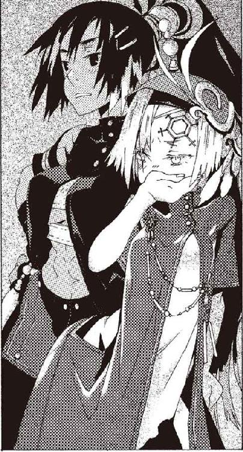

| 六花の勇者 ａｒｃｈｉｖｅ１ Don't pray to the flower (ダッシュエックス文庫DIGITAL) | |
| 山形石雄 | |
| (2016) | |
この本は縦書きでレイアウトされています。
また、ご覧になる機種により、表示の差が認められることがあります。

 ダッシュエックス文庫DIGITAL
ダッシュエックス文庫DIGITAL
六花の勇者 archive1
Don't pray to the flower
山形石雄
イラスト／宮城
聖河の国ワムは、大陸の北に位置する広い国だ。国民はそれなりに豊かで平穏な暮らしを営んでいる。しかしそれでも、貧富の差はどうしようもなくある。
首都ヴォボンの端、汚臭の漂う貧民街。汚れた石造りの建物に囲まれた小さな広場に、一人の女性が立っていた。
歳のころは、五十歳ほどだろうか。万天神殿で定められた、紺色の神官服を身にまとっている。その服は古び、色あせている。彼女の名はトウロウ・メイナス。〈薬〉の聖者である。
〈薬〉の聖者になってから三十年、彼女は世界中を旅している。富める者も貧しき者も、分け隔てなく薬を与え続けている。
彼女に命を救われた人間は数え切れず、その名声は万天神殿の長モーラ・チェスターも遠く及ばない。各国の王たちすら、トウロウの前にあっては首を垂れるという。
トウロウの周囲を、数百人の群衆が取り囲んでいた。人々は一様に、ぼろ布で身を包み、力なく地面にへたり込んでいる。
トウロウは一人の女性の手を取り、目を閉じている。そして手の中から十個ほどの黒い球体を生みだして、女性に渡す。
「これを、一日に一度、湯で溶いて胸に塗りなさい。咳が止まっても、薬は必ず全て使い切るのよ」
薬を受け取った女性は、泣きながらトウロウに礼を言う。トウロウは女性に微笑みかけ、隣の赤子を抱えた男性に手を差し伸べる。貧民たちから、トウロウは決して報酬を受け取らない。それが彼女の名声を、より高めている。
彼女の後ろに、仮面をつけた男が立っている。剣を腰に差し、静かに辺りを見渡している。彼は、トウロウに近づく全ての人間に、油断なく目を配っていた。
男の名はボーマクという。元はピエナの黒角騎士団に属する騎士だった。数カ月前、病に命を落としかけていた彼をトウロウが救った。それから彼は、地位を投げ捨ててトウロウの従者として付き従っている。騎士団では、十指に入る実力の持ち主だった。
「.........あら」
ある患者の顔を見た時、ふとトウロウが声を漏らした。フードの下から覗く顔は血色がよい。明らかに、病人ではなかった。フードの下の衣服は、相当に裕福な者のそれだ。
ボーマクは剣に手を伸ばす。だがトウロウが首を横に振る。
「トウロウ様.........これを」
男は、二つ折りにした紙片を、そっとトウロウに手渡した。ボーマクはそれを覗き見る。紙片には男のものと思われる人名と住所、そして暗号のような文字列が書かれている。
ボーマクは、小さくため息をついた。
少し前、ボーマクは聞いた。トウロウに関するよからぬ噂が立っている。トウロウは人々を助ける傍らで、そのたぐいまれなる聖者としての能力を使い、暗殺を行っているという噂だ。
病人のふりをしてトウロウに接触し、所定の暗号を書いた紙を渡す。その後に、トウロウの耳元でそっと殺したい人物の名を囁く。
数カ月のうちに、殺したい相手はこの世から消えるという。
トウロウたちのただならぬ様子に、群衆がざわめいた。多くは戸惑っている。だが、噂を聞いたことがある者も、この中にはいるようだ。トウロウは群衆に静まるように言ったあと、男の目を見た。
「存じ上げております。私について、よからぬ噂が立っているそうですね」
男がたじろぐ。
「すぐに、出て行ってくださいまし。ここは病める方、困窮した方のために開かれた場でございますので」
男は慌てて立ち上がり、謝罪の言葉もなく去っていく。トウロウはまた次の患者に治療を始める。ボーマクは何も言わず、男を見送った。
ふと、ボーマクは辺りを見る。そういえば、渡された紙片はどこにいったのだろう。
それから、五日後のことである。紙片のことなど、ボーマクはとうに忘れていた。
夜中、トウロウは薬の施しを終えて、貧民街の小さな安宿にいた。狭い部屋の中で、薄い麦粥をすすっていた。最も恵まれない者と、同じ食事をとる。トウロウが三十年もの間、守り続けている信念である。
真夜中、小さな蠟燭の火だけが彼女を照らしている。ボーマクは仮面をつけたまま、トウロウの背後に立ち、警護を続けていた。
その日、ボーマクはトウロウに奇妙な命令を受けていた。仮面を外してはいけない。口を開いてはいけない。理由を聞いても、トウロウは答えなかった。
「あら」
トウロウが、匙を床に落とした。ボーマクがそれを拾おうと手を伸ばした刹那。横から別の手が匙に伸びた。
ボーマクは心臓が止まりそうになった。つい先ほどまで、部屋にはトウロウと自分の他に誰もいなかった。いや、今この瞬間ですら、部屋の中には二人分の気配しか存在しない。しかし、その男はそこにいた。ボーマクはかろうじて、声を上げるのを押しとどめた。
「心配なさらないで。知り合いよ」
トウロウがボーマクに言った。見知らぬ男は匙を拾い、そっとテーブルに載せた。
「にゃひひ。ひでえ飯だべにゃあ。肉か魚を食わなきゃ体に悪いだよ」
「あら、そうかしら。私は五十年、病気一つしたことがありませんよ」
不意に現れた侵入者に、トウロウは驚くそぶりも見せない。また、侵入者はボーマクに関心も向けない。ボーマクは何もできず、ただ立ち尽くしていた。
トウロウは懐から一枚の紙片を取り出した。先日渡された暗殺の依頼書だ。見知らぬ男は紙片を、ほんの一瞬だけ見た。トウロウはすぐに、紙片を蠟燭の火にかざして焼いた。
「にゃ」
見知らぬ男はそう言うと、トウロウに背中を向けた。用事は済んだ、と言わんばかりに。
いつの間にか開いていた窓から、男は外へ向かって飛び出した。姿を現してから消え去るまでの間、男は発した声以外、針が落ちるほどの物音すら立てなかった。
「ボーマクさん。窓を閉めてくださるかしら。あと、もう喋っても構いませんよ」
トウロウがそう言って、食事を再開した。ボーマクは言われた通り窓を閉めながら、トウロウに尋ねた。
「今の男は.........いったい」
「私にはハンス・ハンプティと名乗っています。でも、どうせ偽名でしょうね」
トウロウは、いつもと変わらない落ち着いた声で答える。
「何者なのですか」
「殺し屋です」
さも当然のように、トウロウは言った。
しばらくの間、ボーマクは言葉を失っていた。聖人と信じていたトウロウが、殺し屋と会話していた。そのことが信じられなかった。
トウロウは食事をとりながら静かに語った。ボーマクを信頼していると前置きした上で。
彼女は三年ほど前、とある国の大貴族に脅迫を受けた。その時トウロウは、彼と敵対する貴族の手当てを行っていた。大貴族はその治療を阻止しようとしたのだ。拒否すると彼は、トウロウに仕えていた修道女を人質にとり、他の聖者たちの介入を阻んだ。
トウロウに打つ手はなかった。その時ふらりと、ハンスはトウロウの前に現れたという。
藁をもつかむ思いでトウロウは彼に事件の解決を依頼した。人質をとっていた大貴族は、次の日に自室で死体になっていた。捕らわれていた修道女は自分の足で、トウロウのもとに戻ってきた。いつの間にか、牢の鍵が開いていたと彼女は語った。
厳重に守られた大貴族の城の中で、侵入者の姿を見た者は一人もいなかったという。
数日後、ハンスは再度トウロウのもとに現れた。トウロウは開口一番、ハンスに協力関係を結ばないかと提案した。ハンスは快諾した。あるいは、彼はそれを見越してトウロウに接触してきたのかもしれない。
それからトウロウは、ハンスのために依頼の仲介を請け負っている。
トウロウの役割は、以下の通りだ。あらかじめトウロウは、自分が裏で密かに暗殺を営んでいるという噂を流しておく。そして噂を聞きつけた人物がトウロウの前に現れるのを待つ。
依頼人が現れたらトウロウは、現在の居場所を書いた手紙をピエナに住むとある商人に送る。そしてしばらくたつと、ハンスはどこからともなくトウロウの前に現れるのだ。
それからトウロウは依頼人の名前と居場所をハンスに教える。それでトウロウの役目は終わりだ。これからハンスは紙切れを手渡してきた男に会うのだろう。そして彼から依頼を受け、金を受け取り、標的を抹殺するのだ。
その他にも、トウロウはハンスの要請に応じて、聖者や聖具に関する知識をハンスに提供している。任務遂行の邪魔になる、〈封印〉の聖者の能力についてなどだ。
その見返りに、ハンスは最優先でトウロウの依頼を引き受け、万天神殿に仇なす者を抹殺している。万天神殿に有害とハンスが見なした人物を、トウロウの依頼を待たずに暗殺することもある。トウロウは彼を使って、すでに四人の人間をこの世から消し去っていると語った。
トウロウの所業が明るみに出たら、彼女とて命はない。しかしモーラや他の聖者たちは、トウロウのやっていることを知らない。彼女を疑うことすら、していない。
「さて、ボーマクさん。この話を聞いて、あなたはどうなさいますか？」
食事を終えたトウロウは、ボーマクの目を見据えた。この事実を告発するのか、それとも隠し通すのか、トウロウは尋ねているのだ。
そんなことをしてはいけない。そうボーマクは言おうとしてやめた。トウロウの顔と声には、確かな意思と覚悟があった。トウロウは知っているのだろう。平和は決してきれいごとでは保てない。世のため人のために生きるには、己の手を汚す覚悟も必要なのだ。
ボーマクの意思を、トウロウは理解したようだ。笑いながら彼女は言う。
「モーラさんは、真面目な人です。だからこそこの務めは、彼女には任せられません。私が引き受けるしかないのです」
ボーマクは、その一言で決めた。トウロウの悪行を知ってもなお、忠誠を尽くすと。
「正しい判断かと、思います。しかし、一つだけお聞かせください」
「何かしら」
「あの男.........ハンス・ハンプティは本当に信頼できる男なのですか？」
ボーマクの問いに、トウロウは少し口ごもる。
「そもそもあの男は.........いったい何者なのでしょうか」
トウロウは、食後の白湯を静かにすすった。
「ハンスさんについて知っていることは、ないに等しいわ。彼と接触するのは、仕事の依頼をする時だけ。わかっていることは、彼がとてつもなく強く、頭も切れるということ。そして恐ろしく厄介な男だということ。それだけです」
トウロウは、ボーマクのほうを向いた。
「あなたも、理解したでしょう？」
ボーマクは頷いた。ハンスの強さは、一瞬の接触で理解できた。当代一流の戦士たちの姿を見たことは何度もある。だが彼らすら、ハンスという男には及ばない。
「ボーマクさん。あなたに頼みがあります。あなたにハンスさんを見せたのは、この頼みが可能かどうかを、確かめてもらうため」
「それは.........」
「調べてほしいのです。ハンス・ハンプティの正体を。あなたに、できるかしら」
ボーマクは息を呑んだ。あの男に近づくのは危険だ。全身の肌が粟だっていた。ボーマクは自分自身に問いかける。あの男に触れて、生きて帰れるかを。
それから数週間後。トウロウはピエナにある〈薬〉の神殿へと戻っていた。ボーマクは彼女のそばを離れ、聖河の国の田舎にある、港町に足を踏み入れていた。
トウロウの依頼を、ボーマクは受けた。どうせ、一度は死んだ身だ。惜しい命とは今さら思わない。
時刻は夕方だった。大通りの市は活気に満ちている。その日の仕事を終えた漁師たちが、収穫を店先に並べていた。焚き火にくべられた魚が、脂を落として煙を上げている。ボーマクはその間を、俯き加減に歩いている。
人捜しの基本は、港と市場だ。ボーマクはそれを知っている。
ボーマクが所属していた黒角騎士団は、ただ戦争だけを行う組織ではない。王家に二心を抱く者を見つけだし、捕らえることも仕事の一つだった。その中でもボーマクは、人捜し、尾行、内偵調査などの裏の仕事を専門分野としていた。ナッシェタニア姫の命を狙う反主流派を、何人も見つけだし抹殺した実績がある。
それでも、広い大陸からたった一人の男を捜し出すのは至難の業だ。まして相手は、殺し屋だ。用心深さも一流だろう。
生涯を賭けてすら、見つけられないかもしれない。見つけられなければ、死なずに済むかもしれない。そんなことを考えた。
この期に及んで命を惜しむ自分に、ボーマクが自嘲した瞬間だった。
「ほーれほれほれ、怖くねえだよー」
通りの端にある木の上から、聞いたことのある声がした。ハンス・ハンプティが木の枝にしがみついて、間抜けな声を上げていた。
ボーマクは立ち止まり、ハンスを見つめた。顔はまだ、知られていない。数週間前に出会った時、ボーマクは仮面をつけていた。
「おじちゃん。気をつけて」
木の下には、数人の子供がいる。彼らの目の先では、子猫が枝にしがみついている。どうやら子猫は、木から降りられなくなっているようだ。
「おじちゃんじゃねえだよ.........っと捕まえただ」
ハンスは子猫をそっと掌に乗せると、枝を伝ってするすると地面に降りてきた。子猫はハンスには見向きもせず、子供たちの足元へと走っていった。
「ありがとおじちゃん」
子供が、子猫を抱き上げながら言った。
「にゃひ。礼はいらねえ。それより、これやるにゃ」
ハンスは、上着のポケットから紐のついた飴を取り出した。はちみつを練り固めた、質素な飴だ。ハンスはそれを子供たちに配っていく。
「なんでくれるの？」
「猫はおらの師匠にゃよ。師匠の友達には、敬意を表さにゃならねえだ」
子供たちは少し考えたあと、それぞれ飴をハンスにつき返した。
「働いてない人から物をもらうのは、悪いことだと思うよ」
「猫を助けるより先に、働き口を見つけたほうがいいんじゃないかな」
ハンスは少し驚いた顔をして、それから盛大に笑い出した。子供たちは、ハンスに興味を失ったのか、子猫を抱いて大通りを走っていく。
ひとしきり笑い終えると、ハンスはまた木に登り、枝の上に寝た。すぐに寝息が聞こえてきた。彼を見つめるボーマクの存在に、ハンスが気づいている様子はなかった。
「ボーマクさん。あなたに調べてほしいことは、彼の素性や本名などではありません。彼の心、本性を暴き出してほしいのです」
数週間前の、トウロウの言葉をボーマクは思い返していた。
「何を愛し、何を憎むのか。何を求め、何を拒むのか。何に強く、何に弱いのか。そうしたことです」
極めて困難な依頼だと、ボーマクは思った。
「何か、手がかりはありますか。あなたは彼を、どんな人間と考えていますか」
トウロウは答えた。
「そうですね.........ハンスさんは、ひどく気まぐれな人です。
受けた依頼は必ずこなします。けれど、その依頼を受けてくださるかどうかは、彼の気分次第。気が向かなければ、どれほど金を積もうが依頼を引き受けてはもらえません」
「彼は、何を基準に依頼を受けるのですか」
「遂行が困難であればあるほど、ハンスさんは嬉々として引き受けます。最初に出会った時のように。その一方で、簡単な依頼と見れば拒絶します。
おそらく彼は戦いを.........そして殺しを楽しんでいるのでしょう」
ボーマクは嫌悪感を抱いた。
「血に飢えた殺人鬼。他者の苦痛を楽しむ男。そう捉えることも可能かもしれません。ですが彼は.........それだけの男ではありません。少なくとも私は、そう見ています」
ボーマクは、その港町に留まることにした。素性を隠し、出稼ぎの労働者を名乗って、荷揚げ人として雇われた。同じ職場で働く男たちや、街の人々と他愛のない世間話をしながら、それとなくハンスという男のことを聞き出した。
街の人々が言うところによれば、ハンスがこの街に現れたのは、十日ほど前のことだという。ある朝彼は、突然街に現れた。ボロボロの布袋を一つ持って、市場の隅に座っていた。
人々が名を尋ねると、ハンス・ハンプティと答えた。何者かと問えば、何者でもないと答えたという。誰もが彼を怪しみ、近づこうとする者はいなかった。
ボーマクは最初、ハンスがこの港町で、自分を待ち伏せていたのではないかと考えた。だが、ボーマクがこの街に来たのは三日前だ。足を向けた理由はただの勘だ。先回りできるはずがない。どうやら、とんだ幸運に恵まれたらしい。
荷揚げ人として働きつつ、ボーマクは彼の様子を探った。彼を尾行したり、そばに潜んで観察したりはしない。ただの通りすがりを装い、横目で見るだけだ。
ボーマクが見る限り、ハンスの生活は、ほとほと呆れ果てたものだった。
宿は使っていないようだ。市場の使われていないテント、店の軒先、街路樹の木陰。雨をしのげるところであれば、どこででも寝ている。
聖河の国は、大陸の北寄りにある寒冷な地域だ。野宿は辛いはずだが、ハンスは少しも苦にしている様子はなかった。
「まいったぜ。あの尻尾野郎、うちの家の前で寝てやがった」
同じ職場で働く荷揚げ人の男が、船の積み荷を降ろしながらボーマクに言った。
「そりゃあ災難だな。何かあったか？」
「いいや、水ぶっかけてやったら逃げてったぜ。不気味だが、意気地のねえ野郎みてえだな」
そう言って、荷揚げ人は笑った。
ハンスの存在は、街に暮らす人々の噂の的になっていた。彼についての情報を集めるのは、容易だった。ボーマクが尋ねるまでもなく、皆がハンスについて話している。
人々の噂を総合すると、ハンスの一日はこんな具合だ。
目を覚ますと、ハンスは荷物を肩に担いでぶらぶらと歩き出す。たいていは最初に海に流れ込む川に向かい、体と服を同時に洗う。衣服はぼろの割に妙にさっぱりとしているのは、このためのようだ。
ハンスが、まともな食事をとるのはまれだ。道端に座り込んで、汚いパンや小さな魚を食っている。どこかから余りものでも調達しているのだろうと、人々は言う。
排泄はどこでしているのか、ボーマクは疑問に思っていた。ある時、勝手に民家の中に立ち寄り、用を足して出て行くのを目撃した者がいた。ハンスはまるで自宅に戻るように家に立ち寄り、何も言わずにさっさと出て行ったという。
食事と洗濯以外に、彼は何をしているのだろう。ボーマクは注意深く街の人の言葉に耳を傾け続けた。
「そういえば昨日、尻尾野郎が港にいたな」
と、荷揚げ人の一人がふとした拍子に言った。ボーマクは何をしていたのか問いかける。
「別に、何にもしてなかったなあ。ふらふらそのへんを歩いてたかと思ったら、材木積んだ馬車の上に、ひょいっと飛び乗った。それから胡坐かいて、ぼうっとどっかを見てたな」
どこを見ていたか、とボーマクは尋ねた。
「そのへんだよ。俺たちが働いてるところとか、海とか、雲とか、鳥とかだ。俺もちょっとは腹が立ってな、見世物じゃねえぞって怒鳴ったんだ。そしたらあの野郎、じゃあ目を閉じてるだよとかほざきやがった、髪に隠れて見えなかったが、ほんとに目をつぶってたみてえだ」
いつまでいたのか、ボーマクは聞いた。
「俺らの仕事が終わるまでだよ」
そう言って荷揚げ人は肩をすくめた。
ハンスの目撃情報は、街のそこかしこから聞こえてくる。彼は毎日、いろいろな場所をうろついていて、どこかに留まっている様子がない。
「うちのガキと遊んでたよ」
と言ったのは、市場でリンゴを売る女性だ。
「なんだかガキどもが騒がしいと思ったら、驚いたよ。あいつが石踏みで遊んでんのさ。あんたも昔遊んだだろ？ 片足で石の上をひょいひょい跳び回るあれだよ。
あいつはにゃあにゃあ言いながらはしゃいでて、ガキどもは大笑いしてんのさ。うるさいから怒鳴ったら、別の場所に行ってまた遊んでたみたいだわ。いい歳して、何やってんだか」
その時、女性の息子がボーマクたちに駆け寄ってきた。
「ねえ、ハンスどこ行ったか知らない？」
「あたしが知るわけないだろ」
「ちぇ、どこ行ったんだ？ おーい、手分けしてハンス捜すぞー」
子供たちは、騒ぎながらどこかへ走っていく。
ある時、ボーマクに声をかけてくる男がいた。家具を作る職人の男だ。
「おい見たか。あの野郎、さっき野良猫を追いかけてたぜ。聞いて驚くな。あいつ四つん這いになって走ってやがった」
家具職人の男は自分が見たものを誰かに話したくてしょうがないらしい。
「こうやってな、本当に動物みてえに手足使って走ってるんだ。信じられねえ速さでよ、こっちからあっちにびゅうんと消えていった。可哀相なのは野良猫でよ、びびって悲鳴上げてたぜ。
とうとういかれちまったかと思ったが、あいつはもともとおかしいよな」
家具職人の男は道行く人全員に、その話をしている。話したくなる気持ちもわかる。そんな光景を見たら、ボーマクも動転するだろう。
ボーマクは街を歩きながら考えた。トウロウに何を報告すればいいのか。街に留まるようになってから、十日が過ぎている。
見たものをありのままに伝えれば、おそらくトウロウはボーマクの正気を疑うだろう。
ハンスの殺し屋としての腕は、世界でも有数だろう。あるいは当代最強の殺し屋かもしれない。その彼が、道で猫を追いかけていたと言って誰が信じる。
最初はハンスが、この地で殺しの仕事をするつもりなのだと考えていた。その準備をしているのだろうと。だが彼は目立ち過ぎている。何よりその行動が、でたらめすぎる。
「うにゃうにゃ」
街を歩くボーマクの目に、ハンスの姿が映った。魚市場の片隅で、彼は木箱を漁っていた。彼の行動をとがめる者はいない。どうやら売り物にならない魚を入れておく箱のようだ。
「にゃひ。いいもの置いてあるでねえか。こんなもん捨てるたあ、人間様は贅沢だべよう」
そう言って生の魚を口に咥えながら、ハンスはぶらぶらと歩いていった。ボーマクは追いかけない。またぼんやりと歩き続ける。
ボーマクは考える。ハンスが暗殺で得ている報酬は、いったいどこに消えているのだろう。
トウロウが彼に仕事を依頼する時は、最低でも一年は遊んで暮らせる額を支払っているという。他の依頼人から仕事を受ける時も、おそらく同程度の金は手に入れているはずだ。彼が食うに事欠くわけがないのだ。
「うにゃあ、冤罪だべよう！」
その時、少し離れたところからハンスの声が聞こえてきた。野次馬の中に紛れて、ボーマクもそちらに向かう。
街を見回る兵士たちが、ハンスを取り囲み、捕まえようとしているようだ。むしろ、なぜ今まで取り締まらなかったのか疑問である。ハンスは地面に座り込み、兵士たちに抗議していた。
「この魚は盗んだもんじゃあねえだよ」
「やかましい。黙ってついてこないと、痛い目にあうぞ」
兵士たちは苛立っている。
「それにだよ、おらは猫だべ。猫が魚を盗んで何が悪いだよ」
「意味がわからん」
兵士はもっともなことを言う。
「しばらく前から、ここらをうろついていると聞いたぞ。何か悪だくみをしてるのではないのか？」
「猫は魚を盗む以外に悪さはしねえ」
「そもそもお前は猫ではないだろう」
そう言われたハンスは、にやりと笑った。
「何事も、見た目だけで判断しちゃあいけねえだよ」
馬鹿にされていると思ったのか兵士たちが、剣に手をかける。ボーマクはまずい、と心の中で呟いた。ハンスの力なら、素手で全員を五秒で殺せるだろう。
「兵士さん、そいつのことは知らねえが、少なくとも魚は盗んじゃいねえ。さっきそいつはごみ箱を漁ってたぜ」
ボーマクの言葉に、兵士たちが剣を抜く手を止める。兵士たちは顔を見合わせる。
「.........放っておくか。害はなさそうだ」
兵士たちは去っていく。野次馬たちも興味をなくし、散っていく。その中でハンスが、ボーマクのほうを見ていた。
「うにゃ。ありがとさん」
その声に、敵意はない。こちらの様子を探るような気配もない。ボーマクが彼を監視していることに、気づいていないのか。それとも。
「礼には及ばねえよ」
ボーマクは平静を装いながら話しかける。ただの通行人のふりをしながら近づいていく。
ハンスのそばに寄るのは二度目だった。ボーマクが驚いたのは、彼から何も感じないことだった。最初に会った時は、彼のとてつもない実力を肌で感じ取ることができた。だが今は、少しも彼が怖くない。そこに座っているのは、ただの生臭い匂いを放つ男だった。
「おめえ何してるんだ？ 大の大人が働きもしねえで、恥ずかしくねえのかよ」
ボーマクは慎重に言葉を選びながら尋ねる。彼に怪しまれないように。彼の正体を探っているのがばれないように。
「にゃひひ。猫は働かねえだよ」
「働く猫もいるぜ。ネズミを捕る飼い猫は、働いているって言えるんじゃねえか？」
ハンスは虚を衝かれたように言った。
「.........確かにそうだにゃ。でもやっぱり働かねえだ。やれって言われると、やりたくなくなる。そういうこと、あるべよ？」
ボーマクは呆れたような表情を浮かべつつ、さらに尋ねる。
「.........ま、いいか。んで、これから何をするつもりだ？」
「決まってるだよ。夜が来るのを待つだ」
「夜が来たらどうするんだ？」
「朝が来るのを待つだよ」
何がおかしいのか、ハンスはげらげらと笑った。ボーマクは肩をすくめて立ち去った。
歩きながらボーマクは考える。ハンスは、本当に自分の存在に気づいていないのか。彼が知る一流の戦士は例外なく、気配や視線に敏感だ。彼らは卓越した第六感で、群衆の中から自分を狙う敵の存在を察知する。
ボーマクも、気配を悟られない訓練を積んでいる。だが、自分の隠密技術が彼ほどの強者に通用するだろうか。ハンスが自分の存在に、気づいていたとしてもおかしくはない。
だがハンスには、自分を警戒するそぶりはなかった。ならば、大丈夫なのか。
もしも監視されていることに気づいたら、彼は何をするのだろう。黙って姿を消すのか。自分を殺すのか。あるいは、背景を探り依頼人を突き止めるのか。
ハンスの行動が、予測できない。彼はボーマクの思考の埒外にいる。ボーマクの心を、静かな恐怖が満たしていく。
ボーマクはそれからも、ハンスのことを探り続けた。
本来の任務は、彼の内心を探ることだ。遠くから見つめているだけでは、遂行できないことはわかっている。だが、ボーマクにはまだ、彼の内面を知る手がかりすらつかめていない。
ハンスにボーマクを気にかけるそぶりはない。今までと変わらない日常を続けている。
毎日荷揚げの仕事を続けていると、ボーマクはふとおかしなことに気がついた。
青果の荷卸しをしていると、ハンスがぶらぶらとそばを通りかかった。その時、前で木箱を運んでいた男が言った。
「おうハンス。リンゴ食うか」
「食うにゃよ」
ハンスが答えると、男は虫に食われたリンゴを投げた。ハンスは歩きながらリンゴをかじる。
「猫はリンゴを食わねえと思うがな」
「世の中には例外もあるにゃ」
そう言ってハンスは立ち去っていく。まるで何事もなかったかのように、男は積み荷を降ろしていく。
またある時は、もっと驚くべき光景を見た。昼下がりの街で、ボーマクは酒場の前を通りかかった。そこは昼の間は、軽食と茶を出している。ずいぶん繁盛しているようで、路上にもテーブルを置いている。
休憩をする女性たちがたむろしている中に、ハンスの姿があった。椅子にちゃんと腰をかけ、普通に茶をたしなんでいた。
「実はにゃ、不倫を働いてたのは、王妃のルリムじゃあねえんだべよ。国王のほうなんだべ。国王は邪魔になった王妃を追い出したかったんだにゃよ。国王の不倫相手は知らねえが、まあ想像はできるだにゃ」
ハンスが話しているのは、一時期この国を騒がせた王妃の醜聞事件のことだ。
「それでそれで！」
「じゃあ王妃はまるっきり濡れ衣ってことじゃあないかい！」
女性たちは身を乗り出して、ハンスの話を聞いている。
「それがそうとも限らねえだ。王妃にもすねに傷があったにゃよ。それは聖河の国に嫁ぐ前、ピエナにいた時のことにゃ」
「そういやあたし、噂に聞いたよ。王妃には昔、思い人がいたとかなんとか」
「そうそれにゃ」
ハンスがその女性を指さす。女たちの一人が、感心したように言った。
「あんたいろいろ知ってるんだねえ」
「猫は何でも知ってるにゃ」
ボーマクはしばし、呆然とその光景を見続けていた。だが話に熱中している女たちは、ボーマクのことに気づかない。ハンスも、ボーマクに目を向けない。
信じがたいことに、いつの間にかハンスは街になじんでいた。人々は彼が存在することを、当たり前のこととして受け止めていた。
確かに、ハンスは不可解な人物だが、周りに迷惑はかけない。奇妙な男だが、不愉快ではない。この街で彼は、そういう風に振る舞っている。
しかし彼が街に現れて一カ月もたっていない。この変化の速さは異常だ。
ボーマクは理解する。ハンスは、人を油断させる術を心得ている。そう捉える以外、説明のしようがない。
その日の夜のことだった。ボーマクは荷揚げ人の仲間たちに誘われ、酒場に入った。昼にハンスを見たのと同じ場所だ。ボーマクが選んだわけではなく、偶然だ。
ハンスは酒場の近くの路上に、のんびりと座っていた。
「お、猫がいるぜ」
と、荷揚げ人の一人が言った。それきり誰もハンスに関心を寄せはしない。他の酒場の客も、同様のようだ。
ボーマクは荷揚げ人の仲間とくだらない雑談をしていた。しかしその間も油断なく、彼を横目で観察し、耳を澄ませていた。
その時ハンスは、空を見ていた。夜空には何もない。星が瞬いているだけだ。
「うにゃ、そこの女」
ハンスが空を眺めながら口を開いた。ボーマクは酒場の喧騒の中、正確に彼の言葉を聞きとっていた。密偵をしていた経験から、彼の聴覚は研ぎ澄まされている。
ハンスが話しかけたのは、道を歩いていた女だ。年のころは三十過ぎだろうか。肩と胸元が大きく開いたドレスを着ている。着飾ってはいるが、いい身なりとは言えない。その職業も察しがつく。
「死ね。目障りだ。くそ猫」
女は暗い声で、そう答えた。ハンスは何がおかしいのか、肩を震わせて笑っている。
「餌くれにゃよ」
星を見つめたままハンスは言った。珍しいな、とボーマクは思った。今までハンスのほうから食い物をねだったことはなかったはずだ。
女はハンスの言葉を無視して、通り過ぎようとする。ハンスは去っていく女を見向きもしない。しかし何を思ったのか、女はハンスから十歩ほど離れたところで立ち止まった。
ボーマクと共に酒を飲んでいた男たちが、立ち止まった女に気づいた。何人かが、女に向かって口笛を吹く。女はそれも無視して、道に止まっている。
女は踵を返してハンスのところに戻る。
「這って食うならくれてやるよ」
と女は言った。やはりハンスは、星を見つめたまま笑っている。
「にゃひひひ、餌は這って食うのが作法だべよ」
女は指でハンスに、立てと命令した。その時になって、ようやくハンスは星空から目を離した。
「寝床にしょんべん撒いたら承知しないからな」
「うにゃにゃ。おらはしつけの行き届いた猫だべよ」
女が歩きだす。ハンスは、そのまま女のあとについて立ち去っていく。
ボーマクは、ともに酒を飲んでいた仲間と別れると、去っていったハンスの姿を探した。女とハンスが、汚い小さな家へと消えていくのを確認すると、その場から撤収した。
中で何が起きているかを確認できるほど、ボーマクは隠密の術に長けてはいない。また、そんなことができるほど、彼は節操のない男ではない。
次の日の朝。女の家の軒先に、つぎはぎだらけのハンスの衣服が干されているのをボーマクは見た。それからハンスは野宿をやめ、女の家に寝泊まりするようになった。
深夜。日雇いの荷揚げ人が集う宿屋。
寝室の隅で、ボーマクは手紙をしたためていた。小さなランプの明かりを頼りに、ペンを走らせている。そろそろトウロウに、調査の結果を送らなければいけないころだった。
ハンスを見つけるまでの経緯。その後に見たもの、聞いたこと、ボーマクは全てを包み隠さず記した。しかし、それだけでは報告書を送る意味がない。
トウロウから与えられた任務は、ハンスの心の底を探ることだ。彼が愛するもの、憎むもの、それらを探り当てることだ。
だが、報告書の最後に記す一文が、ボーマクには思いつかなかった。普通の人間であれば、その生活の様子を見れば、ある程度内面の見当はつく。だがハンスの日常は、あまりにも常識を超えている。
悩んだ挙句、彼は結末をこう締めくくった。
『任務の達成、未だめどが立たず』
ボーマクは、閉じた手紙に蠟を垂らして封をした。その報告書を見つめながら、ボーマクは過去のことを考えた。
トウロウから、ハンスの調査を依頼された日。ボーマクは何のためにハンスのことを調べるのかも、トウロウから聞いていた。
そのきっかけになったのは、とある小さな事件だ。ボーマクが調査を開始する、四カ月ほど前に起きた事件だという。
その日トウロウは、〈薬〉の神殿にハンスを呼び出した。ハンスは真夜中、神殿にあるトウロウの自室に音もなく現れた。
「にゃひ。今度の依頼人はおめえか」
と、ハンスは言った。その時トウロウはテーブルの上に、山積みの金貨を置いていた。一家族が一生遊んで暮らせる額の、およそ十倍。一件の暗殺に支払う額としては、異常と言っていい。積まれた金を見て、ハンスははしゃいでいたとトウロウは語った。
「大したもんだにゃあ。おめえ、そんな金持ってただか」
「私一人のお金ではありませんわ。様々な伝手を頼って、どうにか集めたのです」
とトウロウは答えた。彼女が声をかければ、動く人間は数限りなくいる。その金を提供した人物には各国の王も名を連ねていた。
「うにゃあ、今回の相手はよほど大物みてえだにゃあ」
「そうですね。今までも、この後も、これ以上の大物の依頼はないでしょう」
「相手は誰にゃ。ピエナの姫様か？ それとも、〈沼〉のなんちゃらとかいうお嬢ちゃんだか？」
トウロウは静かに首を横に振った。
「依頼対象は、魔神。あなたには六花の勇者になって、魔神を打倒してもらいたいのです」
トウロウの言葉を聞いた時、ハンスはほんの少しも驚かなかったという。ハンスはあっさりと答えた。
「その依頼は受けれねえにゃ」
トウロウは驚いた。気が向かないという理由で、ハンスが仕事を断ることは今までにもあった。しかし、彼が断るのは簡単な仕事の時だ。困難な依頼であればあるほど、彼は喜んで引き受ける。
「おらあ、できねえ仕事は引き受けねえ主義だべ。まあ、それを理由に仕事を断るのは、初めてだがにゃあ」
「ですが、ハンスさん」
「六花の紋章がなきゃ、魔神には近づけないんだべ？ いくらおらでも、近づけない相手はどうにもならねえだよ」
そう言ってハンスは、立ち去ろうと背中を向けた。慌ててトウロウは、ハンスの服を摑んで引きとめた。
「あなたは、六花の勇者に選ばれるはずです。いいえ、あなたが選ばれないはずがありません。あなたより強い人間は、この世に一人しかいないと私は確信しています」
ハンスはつまらなそうに言った。
「六花の勇者に選ばれる条件は、強さだけじゃねえんだべ？ ガキのころ読んだ本に書いてあっただよ」
一輪の聖者が残した、六花の紋章。その性質については、まだわかっていないことも多い。六花の選考基準も不明瞭だ。しかし、六花に選ばれるためには死をも恐れずに魔神に挑む覚悟が必要であること、それはほぼ間違いのない事実と考えられていた。
過去に選ばれた六花の勇者たち。彼らがその当時の世界で、最も強い六人であったとは言い切れない。六花の有力候補と言われながら、選ばれなかった戦士もいた。
選ばれなかった戦士たちは一様に、死を恐れていた。残される家族を心配していた者もいた。世俗での栄達に未練があった者もいた。死を賭して戦う覚悟を持てない者を、六花の紋章は選ばなかった。
「それじゃあ、おらは選ばれねえ。その金も受け取れねえだよ」
服の裾を摑むトウロウの手を、ハンスは優しく引きはがした。
「ま、やれたらやるにゃ。期待しねえで待ってろにゃ」
そう言って、ハンスはトウロウの部屋から立ち去っていったという。
その日の出来事を語り終えたトウロウは、ボーマクに言った。
「ハンスさんが、命を惜しむ人間であるとは私には思えません。ではなぜ、彼は依頼を断ったのでしょうか。
金が足りないのか、依頼の方法が気に入らないのか、それとも人を殺すことのみに快感を覚え、凶魔や魔神と戦うことに興味がないのか。どれもありえそうで、しかしそうとも言い切れない。残念ながら、見当もつかないのです」
トウロウははっきりと言った。
「ハンスさんには必ず、魔哭領に行ってもらわなければいけません。彼なくして、六花の勝利はありえないとすら、私は考えています」
ボーマクは首をかしげた。なぜそこまで、ハンスを、六花にすることにこだわるのか。世界には、強い戦士がいくらでもいる。
かつてボーマクが仕えた、黒角騎士団の先代団長ガザマは、超一流の戦士だ。ゴルドフという空前の天才が現れたことも知っている。
さらには史上最強と謳われるチャモ・ロッソがいる。モーラ・チェスター、アスレイ・アラン、ウィロン・コートなども名高い。ハンスがいなくても、彼らが六花に選ばれる。
ボーマクの様子に、珍しくトウロウは機嫌を損ねた。
「私の目を信頼していただけないのは残念ですね。私には一切の戦闘力はありません。ですが、強さを見極めることに関しては、誇れるものがあると思っています。
ハンスさんは、間違いなくチャモさん以外の誰よりも強いと考えています」
「.........だとしても、彼でなければいけないとは思いません」
「違います。今度の戦いにはどうしてもハンスさんが必要なのです」
トウロウの表情には、一切の迷いがない。
「チャモさんやゴルドフさんは幼い。モーラさんは、平時においては優れていても、非常時にあって人を導ける人間ではありません。ガザマさんも優秀ですが、世界の命運をかけるには足りません」
ボーマクは思うところはあったが、反論はしなかった。
「チャモさんやモーラさんでは、力では勝利できても謀で敗れるでしょう。六花にはハンスさんが必要なのです。彼の知略、直感、抜け目のなさ、何よりもあの底知れぬ冷徹さが」
トウロウの意志は固かった。彼女は反論を求めていなかった。ボーマクは彼女の目と、彼が六花に必要であるという言葉を信頼した。だからこそ、この任務を引き受けたのだ。
ボーマクは、蠟で封をした報告書を見つめながら、ハンスという男について考えた。
暗殺を営む者が、あれほど無防備に自分の身をさらすなど、本来は考えられないことだ。暗殺者には常に、自分自身が排除の対象になる危険がつきまとう。長生きするためには、身を隠し続ける必要がある。
少なくとも、彼は死を恐れていない。
金に対する執着はどうだろう。得た金を全て貯めこんで、自身は浮浪者同然の暮らしをする。そんな常軌を逸した守銭奴なのかもしれない。
だが、その可能性もボーマクは捨てた。金だけが目的なら、一カ月近くもぶらぶら遊び暮らすはずがない。暗殺の仕事以外にも、稼ぐ方法はいくらでもあるだろう。
やはり殺しそのものが目的なのか。人間を殺す快感にとりつかれた男。凶魔を殺すことにすら、関心が持てない異常者。そう考えることもできる。
しかし、ボーマクは思い出す。子供たちと遊んでいたハンスの姿を。彼について語る子供たちの顔を。
『ありがとおじちゃん』
『働いてない人から物をもらうのは、悪いことだと思うよ』
『ちぇ、どこ行ったんだ？ おーい、手分けしてハンス捜すぞー』
子供たちは時に、大人よりはるかに鋭敏に人を見る。ハンスがもしも殺しの快感に取りつかれた男なら、子供たちが懐くことはないだろう。
ならば彼は何者か。なぜ六花になることを拒んだのか。
ボーマクは答えが出ないまま、報告書をトウロウに送った。そして、ハンスという男の調査を続行した。
これ以上、離れたところから見ていても、何もわからないだろう。ボーマクはハンスとの接触を決意する。しかし、直接顔を合わせるのは、やはり危険だ。
まずは手駒になりうる人間たちを見つけよう。そして彼らからボーマクの情報が漏れないよう、入念に準備もしておこう。黒角騎士団で戦っていたころの経験がある。そうした作業はお手の物だ。
ボーマクが準備にかかったのと同時期、不意に、ハンスが街から消えた。
彼の姿が見えなくなったことについて、人々の反応は淡白なものだった。ハンスと数日の間同居していた女すら、彼のことなど忘れたように振る舞っていた。
焦るボーマクをよそに、十日が過ぎた。ハンスは出て行った時と同じように、また突然、街に現れた。
その時彼は、金貨の入った袋を肩に担いでいた。
ハンスが戻ったその夜。街は軽い祭りのようになった。人々はまるで戦争に勝った翌日のように、歌い、食い、酒を飲んでいた。高価な葡萄の蒸留酒が、貴重な魚卵の塩漬けが、今夜はまるで水とパンのように腹の中へ消えていく。
ハンスが持ってきた金貨は、一家族が五年は遊んで暮らせる額だ。彼はその全額を、夜も更けないうちに全て使い切っていた。
彼は酒場にふらりと立ち寄ると、その場にいた客全員の勘定を引き受けた。そしてすぐさま隣の酒場に行くと、その勘定も全て引き受けた。大通りの酒場の全てが客で埋め尽くされるまで、ハンスはそれを繰り返した。
さらに女たちの集まる宿に行くと、全員を買った。ハンスは女たちに指一本触れず、夜の街で一晩遊んで来いとさらに金を渡した。
お祭り騒ぎとなった街の一角で、ボーマクは酒の入ったコップを持ったまま、呆然としていた。夜の街は、ハンスの話題で持ちきりだ。
「おいおい、誰か教えろよ。あの猫、どっから金を持ってきたんだ」
ボーマクの周囲で、男たちが口々に話している。
「やっぱり盗んだんじゃねえか？ 俺たちが使っちまってもいいのかねえ」
「でもよ、近頃聞いたことがねえぜ。こんな金を盗んだ大泥棒の話なんて」
荷揚げ人の男たちは困惑している。
「知ったこっちゃねえやな。全額持つってんだから飲んじまえ！」
男たちはそう言って大笑いしている。女たちの反応は、少し違う。
「噂に聞いたの！ あの猫、大貴族の御曹司だったんだって！ 毎日貧しく暮らしてるあたしたちの様子を見に来てたの！」
「えー！ ほんと！」
「これからはね、貯めてたお金はぜーんぶ庶民のために使うことにしたんだって！」
どこから来た噂なのか、ボーマクは詮索する気にもなれない。
不思議なことにハンスは街の喧騒の中、どこにも姿が見えなかった。ボーマクは人々の輪を離れ、一人ハンスを捜しに行った。
少しばかり火照った頰を夜風にさらしながら、ボーマクは道を歩く。手に持っているのは葡萄の蒸留酒が入った酒瓶一つ。中身はほとんど減っていなかった。
飲む気にはなれない。ハンスのことで、ボーマクは頭がいっぱいだ。
少なくとも、ハンスがなぜ浮浪者のように暮らしているのかは推測できた。こんな金の使い方をしていたら、手元には銅貨一枚も残らないだろう。
あてどなくハンスを捜していたボーマクの頭に、何かがこつんと当たった。周囲を見渡すと、民家の屋根に、小さな明かりが動いているのが見えた。
「おーい、そこのおめえ」
屋根の上からハンスが呼んでいる。手に持っているのは、空の酒瓶と光の宝石だ。宝石はトハラ製のトパーズだろうか。
「その瓶持ってこっち来いにゃ」
ぞわり、とボーマクの背筋が震えた。彼との接触は、死の危険がある。だが、ここで立ち去るのも不自然だ。街の人間は誰もが、ハンスと話したがっている。
「行けねえよ。おめえと違って猫じゃねえんだ」
「うにゃ？ 梯子がありゃ登れんだべよ」
ハンスはそう言って屋根の上から梯子を下ろした。軋む板張りの屋根に、ボーマクは苦労して登った。ハンスは酒瓶を受け取ると、美味そうに一口飲んだ。
「たいそうな羽振りじゃねえか。てめえどっからその金持ってきやがった」
「別にどうでもいいべ？」
「街の皆が聞きたがってんだ。教えるまで夜は終わらねえと思え」
「めんどくせえにゃあ。ほんと、どうでもいいことだけどにゃあ」
ハンスは笑う。彼の様子は、ただの通行人と会話をしているだけに見える。ボーマクは、ハンスはやはり監視されていることに気づいてなかったのか、と考えた。
その、次の瞬間だった。
「んなことよりよ、トウロウの婆さんは元気してるだか？」
ボーマクの心臓が跳ね上がった。ハンスの口調は、ただの世間話と何も変わらなかった。
「どしたべ？」
凍りついたボーマクを、きょとんとした顔でハンスが見ている。驚かれるようなことは、何も言っていないという顔だ。あるいは、本心からそう思っているのかもしれない。
「便りはないが、息災にしているはずだ。何かあったら、すぐに連絡が来る手筈になっている」
ボーマクは、あえて正直に答えた。荷揚げ人を装うために、乱暴な口調を演じるのもやめた。今さら何を取りつくろっても無駄だろう。
なぜかボーマクは、心のどこかで安堵していた。これで、彼が自分に気づいているのかどうか、悩む必要はなくなったと思っていた。
「そうだか。よかったべ」
ハンスは笑いながら答えた。やはり、単なる世間話の口調だった。
いつ見抜いたのか。なぜばれたのか。それを尋ねるのを、ボーマクはやめた。無意味で、つまらない質問に思えたからだ。
「おめえ、楽しんでねえにゃあ。酒は嫌いか」
そう言いながら、ハンスはコップをボーマクに渡してきた。
「好きでも嫌いでもないな。ただ今ははしゃぐ気になれん」
「堅っ苦しい奴だべ」
ハンスは肩をすくめる。
「いつも、暗殺の報酬はこうやって使うのか」
「毎回じゃねえだよ。でも金は盛大に使うに限るにゃ」
それもそうか、とボーマクは思った。仕事をこなすたびにお祭り騒ぎを開いていたのなら、世界のあちこちで有名になっているはずだ。
「この使い方は悪くねえだにゃあ。次からは全部こうするべ」
ハンスは言った。暗殺者が目立ってどうする、とボーマクは思う。しかしそんな思考は、ハンスの中にはないようだ。
これから何を尋ねればいいのだろう、ボーマクの頭の中を、様々な言葉が駆け巡った。六花にならない理由を直接問うのか。あるいは、ここに呼んだ目的を聞くのか。
「.........俺を、どうするつもりだ」
最初に出た言葉は、それだった。やはり何より、自分の命が惜しかった。
「殺すだ」
あっさりと、ハンスは言った。一瞬、聞き間違えたのかと思うほど、穏やかな声だった。だからこそボーマクは、自身の死が避けられないことを確信した。
ハンスの顔を見つめながら、ボーマクは黙り込んだ。様々な思い出が、蘇った。自身の不甲斐なさへの怒りも、調査を依頼したトウロウへの恨みもあった。
だが全ては、静かにボーマクの胸の内から消えていった。元より、トウロウがいなければ死んでいた自分だ。数カ月、命が長らえただけだと思えば悪くはない。
「そうか、殺すか」
ボーマクは穏やかな声で言った。その態度に、ハンスは戸惑っているようだ。
「にゃひ.........抵抗しねえだか？」
「無駄だろう。実力の差は、理解している」
「そんなこと言うでねえだよ。おらは丸腰だべよ。ちいと酒だって入ってる。勝てるかもしれねえだよ」
「買い被るな。それに俺も丸腰だ」
「.........そうだべかあ」
ハンスは、落胆している様子だった。ボーマクと戦うことを望んでいたのだろう。やり合ってもよかったかな、とボーマクは思った。だが、彼の任務はハンスと戦うことではない。
「しかたねえ。おめえと戦うのは、諦めるだよ」
「見逃してくれる、ということではないのだな」
「当たり前だべ。おめえは殺すだ」
そう言ってハンスはため息をつく。
「トウロウ様は、どうなる」
「別に何もしねえ」
「それなら安心した。死ぬのは俺だけか」
「.........お祈りでもするだか？」
そう言ってハンスは、懐から小さな一輪の聖者像と造花を取り出した。ボーマクはありがたく受け取った。
コップを置いて、祈りを捧げようとする。だが、考えてみれば祈ることも特にない。とりあえずボーマクは、一輪の聖者に願った。
俺の最後の任務を、遂行させてください。ハンスを、六花の勇者にさせてください。ボーマクは心の中でそう呟いた。
祈りは終わった。覚悟も固まった。さて、ハンスにどう切り出すか。ボーマクが考えていると、ハンスのほうから話しかけてきた。
「しかしよ、トウロウの婆さん」
「あの方がどうかしたか」
ボーマクは酒を飲みながら聞き返す。
「いい女だべにゃあ」
ボーマクは酒を噴き出した。あまりにもくだらない話であること、そして五十を過ぎたトウロウを、そんな目で見ていること。その両方に驚いた。
「あと十五年若けりゃあにゃあ。惜しいもんだべよ」
口元を拭きながらボーマクは答える。
「.........驚いた。まさか、本気でトウロウ様を狙っているのではないかと」
「にゃあっひひひひ。ねえだよ、ねえ。さすがにおふくろより年上じゃあ無理だべよ」
ハンスは酒瓶を、ボーマクに向かって差し出してきた。コップに酒を注いでもらった。
「おめえどう思う」
「考えたこともないが.........確かに、若いころは.........うむ、なかなかだったかもしれん」
「だべ？ なかなか話がわかるでねえか」
ハンスにつられて、ボーマクも思わず笑った。殺されるとわかっているにも拘わらず、ボーマクは彼の言葉に笑ってしまった。
「固い女性が好きか」
「うんにゃ。いい女は誰でも好きにゃよ。ガキは勘弁だけどにゃ」
「女の敵だな」
「んなこたねえにゃ。猫は女の味方にゃよ」
馬鹿馬鹿しい雑談に、ボーマクはつい乗ってしまう。彼と話していると、油断せずにはいられない。それがまた、恐ろしくもある。
ふと、下を見る。ハンスが数日間一緒に暮らしていた女性が、道を通った。ハンスもそれを見たはずだが、まるで興味を示さなかった。彼女の存在は、ハンスの心の中にはもうないのだろう。やはり彼は、女性の敵らしい。
「で、おらに聞きてえことがあるんじゃねえか？」
ハンスが言った。その時ボーマクは、ハンスにどう本題を切り出すか悩んでいた。ハンスのほうから話題を振ってくれたことを、ありがたいと思った。
「お前がなぜ、六花の勇者になることを拒んだのか。それを俺は知りたい」
ハンスは少しの間、きょとんと首をかしげていた。
「なんだべそれ。選ばれたらやるにゃよ？ 別に拒んじゃいねえ」
「.........覚えてないのか？ 五カ月ほど前のことだが」
その言葉で、ハンスは思い出したようだ。
「ああ、あれだか」
「なぜ金を受け取らなかったのか。トウロウ様はそれを知りたがっている」
ハンスはまだ首をかしげている。
「うにゃ？ 言ったでねえか。おらはできるかどうかわかんねえ仕事は受けねえだよ」
「なぜ、できると言わん。六花に選ばれるだけの実力はあるはずだ。ではなぜ、六花になってみせると思わぬのだ」
呆れた様子で、ハンスは言った。
「.........あの婆さん、そんなことを聞くために、わざわざおめえを使っただか」
「悪いか」
「あほくせえにゃ。知りてえなら自分で聞きに来りゃいいだよ」
ハンスはトウロウを馬鹿にするように言った。そして、天を仰いで寝っ転がった。何かを考えているようだ。
「.........困っただにゃ。改めて聞かれると、上手く答えられねえだよ」
ハンスは黙り込んだ。ボーマクは答えを待ちかねて口を開く。
「気乗りがしないのか。凶魔と戦うのは」
「んなこたねえにゃ。考えるだけでわくわくしてくるだよ」
髪の毛の隙間から覗くハンスの目は、輝いていた。
「あのゾーフレアってのは最高だべよ。英雄王も人が悪いにゃ。あんな素敵な敵を、なんで殺しちまうんだべ」
ハンスは本音が見えづらい男だ。しかし、今ははっきりわかる。彼は本当にゾーフレアと戦いたがっている。
「あとは、マーリィとハユハが倒した、ちっぽけな犬っころみてえな凶魔。あれも面白そうな敵だにゃ。ゾーフレアと違って、あいつはまだ生きてるはずだ。会ってみてえにゃあ」
ボーマクは子供のころに読んだ、マーリィの回顧録を思い出す。ハンスが言っているのは、〈風〉の聖者ロイを討ち果たし、剣聖ボドルを追い詰めた凶魔だ。
「一緒にいた獅子の凶魔ってのもなかなかだべ。戦ってみてえ相手は他にもいるにゃよ」
楽しそうに語るハンスに、ボーマクは尋ねた。
「そこまで戦いを望むなら、なぜ六花になりたいと考えない。命を惜しんでいるわけでも、金が足りないわけでもないだろう」
そう尋ねると、ハンスはまた悩み始める。
「別に、六花になりたくねえわけじゃあねえだよ。たぶん、選ばれねえってだけだべ」
「その理由を聞きたいのだが」
「どう説明したもんか、考えてるだよ」
ボーマクは口を挟むのをやめ、ハンスの答えを待った。
ふと天を見上げる。だいぶ雲は出ているが、星の美しい夜だった。雲がゆっくりと流れて、月が姿を現したころ、ハンスはようやく口を開いた。
「おらにとっては、全部遊びにゃ」
「戦うことが、か」
「うんにゃ。生きることが遊びだ」
彼の言葉を、上手く飲み込めない。返す言葉も思い浮かばないまま、ハンスの話の続きを待った。
「日がな一日、寝っ転がって過ごすのが好きだにゃ。空をぼんやり眺めるのも好きだにゃ」
残り半分になった酒瓶を、ハンスはまた、あおる。
「海を見るのが好きで、山を見るのも好きだ。花もそこそこ好きだし、人を見るのも好きだし、なあんにもしねえで過ごすのも好きだにゃよ」
幸せそうにハンスは笑う。
「たらふく酒を飲むのが好きで、いい女を抱くのが好きだにゃ。金は稼ぐのも使うのもおもしれえ。たまにうめえもんを食うのもいいにゃ。
人を殺すのも好きにゃし、凶魔を殺すのはやったこたあねえが、たぶん好きだにゃ」
さらりと語られた一言に、ボーマクの背筋に少し寒気が走った。ハンスにとっては、人を殺すことも海を眺めることも、同列に語られることなのだ。
「六花に選ばれて魔神を倒しに行くのは、かなり楽しそうだとは思うにゃよ。でも選ばれなきゃ、そのへんの街でのんびり暮らすだけにゃ。おらはどっちでも構わねえ」
「.........なるほどな」
「一輪の聖者さんが何を考えてるかは知らねえが、こういう手合いは好みじゃねえんだべ？」
「.........そのようだ」
「じゃあ六花になるのは無理だべ。おらは魔神が倒されるまで、寝っ転がって過ごすにゃよ」
ボーマクはしばらく黙っていた。これで、トウロウに命じられた任務は果たせた。ハンスが本音の全てを語ったかどうかはわからないが、今の話を報告すれば仕事は終わる。
だが、ボーマクは見つけ出さなければいけない。ハンスを、トウロウが見込んだ男を、六花の勇者にする方法を。
屋根の上で、ボーマクはハンスに語りかけた。
「世界の命運は、お前にかかっている。そう言われたらどうする」
「おらあただの殺し屋だべよ。世界の命運を背負えるほど、おらの背中はでかかねえだよ」
ハンスは一笑に付した。
「もしもの話だ。お前が立ち上がらなければ、世界が滅ぶとしたら」
「滅ぶなら、勝手に滅べばいいにゃ。おらの知ったことじゃあねえ」
酔っているのか。それとも、まさか本気で言っているのか。
「家族はいないのか。父や、母はいるのか」
「いるに決まってるだよ。どこで何してるかは知らねえけどにゃ」
本当にそうなのだろうか。ハンスの表情からは推し量れない。
「子供は」
「どっかにいるかもしれねえにゃあ。探してみたらどうだべ」
家族を守るために戦うつもりは、毛の先ほどもないのだとボーマクは理解した。彼にとって家族は、そこらの通行人と同じものなのだろう。
「恋人は.........いないのだろうな。守りたい相手もいないのか」
「当然だにゃ」
「.........お前も死ぬのだぞ。完全に蘇った魔神には、誰も勝てない」
「にゃひひ。そん時はそん時にゃよ。大人しく諦めて死ぬにゃ」
ボーマクは心底から呆れ果てた。そもそも、この男に六花の紋章を持たせるべきなのだろうか。そんな疑問すら抱いた。
「誰だって、いつか死ぬにゃよ。世界だっていつか滅ぶにゃ。遅いか早いかの違いだけだべ。こだわるようなことじゃあねえ」
考えられない、とボーマクは思った。だが、それでも彼は探した。ハンスを六花にする方法を。彼の心を動かす言葉を。
「諦めろにゃ」
ハンスはボーマクの内心を見透かしたように言った。
「おらあ、勇者なんかにゃなれねえだよ。おらは死ぬまで、ただの猫だ」
「.........そうか」
「納得しただか？」
「一応はな。本音かどうかは知らないが」
ハンスはその言葉の、何が面白いのかしばらく笑っていた。本音だとは、一言も言わなかった。やがて酒瓶を軽く振りながら、ハンスが立ち上がった。
「そろそろなくなるにゃあ。ちいと待て。どっかから持ってくるにゃ」
ハンスはひらりと屋根から降り、どこかへ歩いていった。ボーマクは残り少なくなった酒を味わいながら、彼の帰りを待った。自分を殺す男の帰りを。
「ありゃ、逃げてねえだか？」
数分後、酒瓶の封を開けながら、ハンスが戻ってきた。そして、呆れたような声で言った。
「逃げれば見逃すか？」
「うんにゃ」
ハンスは屋根の上に体を横たえ、酒を飲み始めた。
それからハンスは問わず語りに、自身のことを話し始めた。
暗殺の仕事を始めたのは、十五の時だという。きっかけは語らなかった。どうでもいい理由なのか、ひょっとしたら忘れているのかもしれない。
「暗殺ほどいい仕事はねえにゃあ。思い切り人殺しができて、金まで儲かる。世の中の連中が、なんでやらねえのか不思議だべよ」
ボーマクはふと、疑問に思った。戦うことが好きで、金にさほど執着がないのなら、なぜ暗殺などという面倒な仕事をしているのだろう。
強い戦士はいくらでもいる。戦いたいのなら、好きに戦えばいいではないか。そもそも彼は、善人でも悪人でも、構わずに殺す男だ。
その疑問を素直にぶつけてみた。
「そうだにゃあ。強え奴を見ると、殺したくてたまらなくなるにゃ」
ハンスは邪気のない笑顔を浮かべた。その邪気のなさが、逆に恐ろしくもあるが。
「だけど、終わった後がいけねえ。何の理由もねえ殺しってのは、ちいと後味が悪いだよ。せっかくの殺しだ、楽しみてえでねえか。殺すなら、依頼を受けてからやったほうが楽しいだ」
後味が悪い。この男にも、そんな感情があるのかとボーマクは少し驚く。
「お前が殺した者の中には、何の罪もない者もいるだろう。それは、後味が悪くないのか」
「何が罪で、何がそうでねえか。それを決められるほど、おらは傲慢じゃねえだよ」
最低限の倫理観、と言うべきなのだろうか。だとしても、常人の感性とはかけ離れているが。
「にゃひひひ、なんか今、おらかっこいいこと言っただにゃあ」
そう言ってハンスは笑う。あるいはさっきまでの言葉も、全て出まかせなのかもしれないと、ボーマクは思った。
話の途中で、何の脈絡もなくハンスは話題を変えた。今度はこの街で出会った人々のことを語り出す。遊んだ子供、取り囲んできた兵士、リンゴを放り投げた荷揚げ人のこと。取り留めもない話を続けた。
彼も酔っているのだろう。もともとこういう話し方をする人間の可能性もあるが。
「そういえば、女たちにこの国の王族の話をしていたな。事件にはお前も関わったのか？」
どうでもいいことをボーマクは問いかける。
「ありゃでたらめだ」
そう言ってハンスは笑った。
続いてハンスは猫の話を始めた。猫がどれだけ美しい生き物か。どれだけ猫を尊敬しているか。自分の戦闘技術は、全て猫から学んだものだと彼は言った。話を聞いていても、猫から何を学んだのかは理解できなかったが。
さらにその後、ハンスは突然に言った。
「おらにゃあ、夢がある」
ボーマクは少し興味がわいた。
「おらは猫のように生きてえだ。それだけが、おらの夢だよ」
「.........わからんな」
「やりてえことを、やりてえようにやって生き、そのうち死ぬ。そんな暮らしがおらはしてえ。食いてえから食う。寝てえから寝る。抱きてえから抱く。殺してえから殺す。何にも縛られねえし、誰にも従わねえ」
ハンスは空を見上げる。
「楽しくねえことはしたかねえ。噓をついたり、約束を破ったり、後味が悪いこともしちゃいけねえ。心に負い目を持っちまったら、猫のようには生きられねえ」
ボーマクは聞き続ける。わかるような気もするし、わからないような気もする。
「何かにこだわるってのも、おらはやりたかねえだ。
誰かを好きになっても、誰かを嫌いになっても、欲しいもんがあっても、やりてえことがあっても、それに囚われて生きるのは嫌だべ。
おらあ、人生全てを、気まぐれに生きていきてえ。全てを遊びと思って過ごしてえ。それが、猫の生き方。おらの夢だ」
ハンスは苦笑しながら、首を振る。
「なかなか難しいだよ」
「そういうものか」
ボーマクには理解できない。彼の生き方も、それの何が難しいのかも。
「おかしな話だな」
「何がにゃ？」
「何にもこだわりたくないと言いながら、猫のように生きることにはこだわるのか」
「そうだべ。矛盾してるだ。それが、おらだよ」
ハンスは笑った。その矛盾を貫きながら生きていく。そのことに、一切の迷いはないようだ。
それから、長い沈黙が落ちた。ハンスは語りたいことが尽きたようだ。ボーマクも言葉が浮かばない。
「.........死ぬ前に、なんかやることはあるだか？」
空になりつつある、二本目の酒瓶を見つめながらハンスは言った。
「トウロウ様に、報告を送りたい。任務だからな」
「うにゃ。構わねえだよ。終わるまで待つだ」
ボーマクは、安堵しながら立ち上がる。報告書を書くためには、宿まで一度戻らなければならない。梯子を下りて歩き出すと、ハンスもついてくる。
「にゃひ。ひさびさに自分のことなんか話しちまっただにゃあ。まあ、たまにはこういうのも悪かねえだ」
「楽しかったか。それはよかった」
二人は喧騒に包まれた繁華街を離れ、夜の闇の中へと消えていった。
数日前のことである。ハンスは、依頼を仲介する協力者の一人から連絡を受け取った。トウロウの他にも、ハンスに仕事を依頼するルートは複数存在している。
依頼の相手は、聖河の国を牛耳る大貴族だった。彼からの依頼も、ハンスは何度も受けていた。誰もいない森の中、ハンスは木の上で依頼人を待っていた。
たった一人で大貴族は現れた。入念に変装し、誰かに見られていないか、辺りを見渡していた。彼はハンスとのつながりが誰かに知られることを、極度に恐れている。
「ハンス。気づいていないのか。お前のことを探っている者がいるぞ」
開口一番、彼は言った。
「にゃ。それがどうかしただか？」
あくびをしながらハンスは答えた。
「どうかしたかではない。消せ。お前と俺のつながりがばれたら、俺は破滅だぞ！」
「消すのは構わねえが、具体的に相手を言わなきゃ困るだよ」
「まずはお前につきまとっている追っ手だ。それに、俺とお前の関係を知っている者全員だ」
「.........そうすると、殺す相手はおめえ自身も含まれるけどにゃ」
大貴族の顔が、恐怖にひきつる。ハンスは顔をゆがめて笑う。
「冗談だべ」
「.........それで、受けるのか！ どうなんだ！」
笑うハンスに、余裕のない口調で大貴族が呼びかける。ハンスがいる木の根元に、金の入った袋を投げた。
ハンスを追う男.........ボーマクが、大貴族とは無関係であることはわかっている。だが、ハンスは木から降り、その金を拾い上げた。
「頼んだぞ」
大貴族は逃げるようにその場を立ち去っていく。
「運の悪い男だべ、ボーマクは。もう少し弱けりゃ、見逃してやったんだけどにゃあ」
金を数えながら、ハンスは呟いた。
港町に朝が来た。ハンスがもたらした一夜の祭りは終わった。人々は疲れた体を引きずりながら、日常へと戻っていった。
夜が明けた時、ハンスの姿は街のどこにもなく、二度と現れることもなかった。
しばらくの間は、ハンスの噂が街を駆け回った。だが、それもやがて忘れ去られていく。
祭りの夜、一月半ほど前に現れた荷揚げ人の男が、道で倒れて死んでいるのを見つけた者がいた。酔って塀かどこかに登り、足を滑らせて落ちたのだろう。体についた傷を見る限り、そうとしか考えられない。
彼の死もまた、少しの間は噂になった。だがハンス同様、彼もまた忘れられていく。
豊原の国ピエナにある、〈薬〉の神殿。そこでは修道女たちが日々働いている。
夜中、その古びた神殿の中にあるトウロウの自室に、ランプの明かりが灯っている。トウロウは一人そこで手紙を読んでいた。世界各地の患者たちから送られてきた感謝の手紙が、山と積まれている。
突然、部屋のドアがノックされた。トウロウは少し驚き、手紙から目を離す。トウロウに仕える修道女が、部屋に入ってきた。
「トウロウ様。万天神殿のモーラ様から、手紙が届いています。六花を目指す聖者の皆様の、体調管理について相談したいと仰っています」
「あらそう。急がなければね。すぐに旅の準備をしておいて」
トウロウはにこやかに答える。
「かしこまりました。では、護衛の戦士を、どこかから見つけてこないといけませんね。まったく、ボーマクさんったら突然辞めてしまうんだから。困りますよ」
「しかたないわ。旅暮らしが性に合わなかったのよ」
修道女がぼやきながら部屋を出て行くのを、トウロウは穏やかな表情で見守った。そして、手紙へと視線を戻した。
彼女が読んでいるのは、伝書鳩でボーマクから送られてきた、最後の報告書である。彼が見聞きしたもの、全てがそこに記されていた。
トウロウは報告書を読み終えると、丸めてランプにかざし、火をつける。
全ては闇の中に葬られる。ボーマクの任務も、彼自身も。灰になって消えていく報告書を見つめながら、トウロウは静かに彼の冥福を祈った。
「.........ふう」
それからトウロウは目を閉じ、考えた。ハンス・ハンプティのことを。
彼を六花の勇者にするために、トウロウはあらゆる手段を講じるつもりでいた。金が欲しいと言うなら用意しよう。女が欲しいと言うならあてがおう。王侯貴族になりたいと言うのなら、各国の王を動かそう。
家族を見つけだし、説得させてもいい。恋人がいるなら、人質にとって脅してもいい。脅迫された者が六花の紋章を得られるかは疑問だが、取れる手段があるなら、全てを実行すると心に決めていた。そのための準備も、密かに行っていた。
しかし、それらは全て無駄だったようだ。
「にゃひ、お休みの時間だか？」
突然背後から発せられた声に、トウロウは心臓が止まりそうになった。悲鳴を上げそうになる自分をどうにか抑え、平静を装いながら振り向いた。
「.........呼んだ覚えはありませんが」
「そのうち呼ぶつもりだったべ？ 手間を省いてやっただよ」
「気を遣わせてしまいましたね、失礼しました」
部屋の壁に寄りかかる、ハンスの態度はいつもと変わらない。だがトウロウの額には冷や汗が浮かんでいる。
「心配すんでねえ。おめえを殺すつもりはねえだよ。おらは人殺しは好きだが、噓をつくのは嫌えだ。ボーマクに、おめえは殺さねえと言っちまっただよ」
「安心しました」
トウロウは安堵の息を吐く。
「それで.........どうするだ？」
ハンスは言った。
「どうやって、おらを六花にする？」
ハンスの視線に貫かれながら、トウロウは思考を巡らせた。ハンスを、六花の勇者にする方法を。彼の心を動かせる言葉を。
「いいえ、ハンスさん。あなたは六花の勇者に、ならないでください」
トウロウは言った。
「魔神を倒したいと、考えないでください。凶魔と戦いたいという気持ちを、捨ててください。これは命令です。あなたは絶対に、六花の勇者にはならないでください」
「.........にゃ」
「この命令を受け入れてくださるなら、望むままに報酬を与えましょう。金も、地位も、欲しいものを与えます。どうぞ仰ってください。どんなものでもご用意いたします。
もし受け入れられないと言うのなら、私はあらゆる方法を使ってあなたが六花になることを阻止します。いかがでしょうか、ハンスさん」
ハンスは沈黙した。本当に、これでいいのかとトウロウは自問した。
しばらくたって、ハンスが尋ねてきた。
「ボーマクの入れ知恵だか」
「さあ、何のことやら」
ハンスの言葉は、事実だった。トウロウが語ったのは、ボーマクの報告書に書かれていた文章を、そのまま読み上げただけだ。この言葉を告げることがハンスを六花の勇者にする、唯一の方法だとボーマクは書き記していた。
「.........にゃひ。にゃひひひひひ！」
ハンスが笑い出した。手を叩き、大声で笑った。
「大したもんだべ、ボーマク。おめえはよくやっただ！ 確かにこれが最善手だ！」
してやられた、とでも言うようにハンスは頭を搔いた。
「おらの悪い癖だべ。やれと言われりゃやりたくなくなるし、やるなと言われりゃやりたくなる。よく見抜いただよボーマク。おらはそういう人間だ」
ハンスは、もうこの世にはいないボーマクに向かって語りかけている。
ボーマクは報告書に記していた。本当に、何にもこだわらないのならば、何を言っても無駄だろう。だが彼は何にも囚われないと心に決めている。彼は自由に固執している。
それならば、やりようはあると。
「それで、どうなさるのですか？ 私の願い通り、六花にならずにいてくれますか？」
トウロウの問いに、ハンスは肩をすくめる。
「さあにゃ。おらは猫だべ。何もかも気まぐれだにゃよ。なるかもしれねえし、ならねえかもしれねえ」
話は終わった、と言わんばかりにハンスは窓に向かって歩いていく。トウロウも、引きとめることはしない。
「だけど、ボーマクって男は気に入っただ」
そう語って、ハンスの姿は部屋から消えた。緊張の糸が切れたトウロウは、背中を椅子の背もたれに預ける。
トウロウは目を閉じ、六花を目指す若者たちの顔を思い浮かべる。モーラ、チャモ、アスレイ、ウィロン。ロロニアという少女がそこに加わったとしばらく前に聞いた。
「ハンスさん、あの子たちを頼みましたよ。大変な仕事になると思いますわ。覚悟しておいてくださいな」
小さな声で、トウロウはそう呟いた。
断章 ハンス・ハンプティ
わたしの体に見惚れるのは、ごく当たり前のことでしょう。わたしの体より美しいものなど、この小さな港町はおろか、国中探してもあるはずもないのですから。
しかしながらこの男の態度は、少々非礼が過ぎております。何しろ彼は、わたしの体を三時間もの間、倦まず弛まず眺め続けているのです。寛大なわたしは、あえて咎めはいたしませんが。
男の歳は二十代の半ばでしょうか。ぼさぼさの髪にぼろの服。何のつもりかお尻に猫の尻尾を付けた男です。男は体を丸めて横になり、頰を地面につけたまま、じっとわたしを見つめています。
港町の大通りから少し外れた、小さな広場。普段はここで子供たちが石を弾いて遊んだり、老人たちが談笑したりと、にぎやかです。けれども人々は男の奇怪な行動に戸惑い、広場から姿を消してしまいました。
「おう、ハンスじゃねえか。何してるんだ」
通りかかった露天商らしき人物が、男に声をかけます。男はちらりと露天商を見て、
「にゃあ。にゃあにゃあ。うにい」
と、猫の鳴きまねで答えました。
「おめえがおかしいのは、今に始まったことじゃねえが.........今日はとりわけひでえなあ」
呆れる露天商に笑顔を向けながら、男は喉から妙な音をたてました。
今日の朝のことでした。わたしが領地のごみ箱を漁っておりますと、この男は突然わたしの横に近づいてまいりました。そして人間のくせに四つん這いになって、わたしの大切なごみ箱に顔を近づけるのでございます。
驚いたわたしは、戦利品である魚の頭を咥えて屋根の上に駆け上がりました。するとこの男はわたしを追いかけて屋根に上ってきたのです。男は口に、ごみ箱から拾った魚の尻尾を咥えておりました。
わたしが屋根から飛び降りて、人々の足の間を潜りながら大通りを走ると、やはりこの男も追いかけてきました。人間のくせに両手両足で地面を蹴って、男は走っておりました。
さしものわたしも、驚き、取り乱しました。この街に住む野良猫の中で、わたしほど素早く身の軽いものはおりません。鈍重で不器用な人間ごときに追いつかれるなど、子猫のころから記憶にありません。
どれほどの間、街を走り回ったでしょうか。男は片時もわたしから離れず、目を皿のように見開いておりました。一度立ち止まって振り向いた時、彼の視線に敵意がないことに気がつきました。彼の目は、美しいわたしを見つめる喜びに、きらきらと輝いていたのです。
わたしは逃げるのをやめて、広場の隅に腰を下ろしました。男もまた、広場の中央に座り込みました。ようやくわたしは気がつきました。彼はわたしに見惚れているだけなのだと。
わたしは魚の頭を地面に落とし、遅い朝食をとり始めました。すると男も、咥えていた魚の尻尾を食べ始めました。わたしと同じように魚の尻尾を地面に置き、四つん這いになったまま手を使わずに。道行く人間たちは、男のしていることにひどく驚いている様子です。わたしも少々戸惑いました。
食べ終えたわたしがあくびをすると、男も大きく口を開けました。わたしが後足で首筋を搔けば、この男も足を首筋に当てました。わたしが体を丸めて寝転ぶと、男もまた小さく体を丸めました。
奇特な男がいたものだと、わたしは嘆息いたしました。彼はわたしを見つめるだけでは飽き足らず、わたしのようになりたいと願っているのです。わたしと同じ姿勢をとり、わたしの仕草を一つ一つ真似て、わたしに近づきたいと思っているようです。
わたしは素直に感服いたしました。人間の中にも、美のなんたるかをわかっている者がいたようです。
何しろ人間という生き物は、不格好でなりません。間抜けに背筋を伸ばし、前足をぶらぶらと宙に遊ばせ、たった二本の足で無理をしながら歩いています。
無様な己の姿を恥じ、美しい猫のように振る舞いたいと思う。考えてみれば当然のことではありませんか。感心したわたしは男に、自分の姿を見つめ続けることを許しました。それから三時間、男はわたしから片時も目を離さず、わたしの仕草を真似し続けているのです。
背中がかゆくなったわたしは、ごろりと体を一回転させました。男もまた、背中を地面にこすりつけました。尻尾を揺らして蠅を追い払うと、男も尻を振って腰に取りつけた尻尾を揺らしました。
「にゃあーあお」
「.........にゃあお」
わたしが一声鳴くと、男も声を上げました。
猫の姿を真似たいと思う、男の志にはわたしも感服いたしました。ですが、男の動作には少々失望せざるをえません。
必死に仕草を真似たところで、わたしの美しさまでは似せられておりません。背中の曲線はしなやかさに欠け、手足の動きはぎこちなく、声はまるきり人間のまま。
男の必死さは、十分わたしに伝わっております。しかしながら、彼には決定的に欠けているものがあるのです。
彼はまだ、自分を人間だと思っています。それでは猫にはなれません。心の底から、自分を猫だと思い込めないままでは、猫の美しさは得られません。
そんなことではいけません。わたしはそう思いながら、様々な動作を男に見せてあげました。しかしやはり、男は猫にはなりきれません。
やがて日が暮れて、夕食を漁りに行く時間が近づいても、男は一度として満足な猫の仕草をわたしに見せることはできませんでした。
しょせんは人間のやること。わたしが失望しながら立ち上がったその時、男はわたしの真似をやめました。大の字になって地面に倒れ、空を見上げました。
「にゃあ、だめだだめだ。おらもまだまだ未熟だべ」
男は寝っ転がったまま頭を抱えました。
「お師匠様みてえには、なれねえにゃあ」
わたしは嬉しくなりました。やはりこの男は、見どころがあるようです。自分を未熟とわかっているなら、成長する余地は残されています。
あなたもいずれ、猫になれる。その気高い志を失わない限り。
心の中でそう呟きながら、わたしは男に背を向けて、ごみ箱目指して走り出しました。
夜明けからおよそ一時間後、万天神殿の朝は礼拝から始まる。
百メートル四方ほどもある礼拝堂の中央に、巨大な一輪の聖者像が安置されている。千年近い万天神殿の歴史を見守ってきた石造りの聖者像は、古びてはいる。しかしその表面は、染みの一つも傷の一つもない。
聖者像の前には、三百人を超える女性たちが集まっている。精巧に作られた造花を捧げもち、聖者像に向かってひざまずいている。
列の最前にいるのは神殿長のモーラ・チェスターである。
その後ろには聖者たちが並んでいる。〈氷〉の聖者アスレイ、〈塩〉の聖者ウィロンがいる。〈火〉の聖者リーンリル、〈鮮血〉の聖者ロロニアがいる。六花の勇者の有力候補と謳われる、戦闘に長けた聖者たちだ。
さらにその後ろには、〈薬〉の聖者トウロウら、戦いを得意としない聖者たちもいる。
残る女性たちは修道女だ。彼女たちは次代の聖者を目指しつつ、当代の聖者に仕え、その仕事を補佐している。
誰一人、言葉を発する者はいない。像に何かを願っている者もいないだろう。これは誠心誠意、一輪の聖者と世界のために尽くすと誓うための儀式だ。
長い時間が過ぎた。
モーラが鈴を鳴らすと、聖者と修道女たちは造花を懐に収めて立ち上がる。その時、ロロニアが造花を取り落とした。どういう落とし方をしたのか、造花は遠くに転がっていく。
「あ、あわわ」
慌てて造花を拾い上げるロロニアに、リーンリルが言う。
「ロロちゃん、落ち着いて」
「うう、すみません、すみません」
うなだれるロロニアの肩を、ウィロンが優しく叩く。アスレイが肩をすくめ、リーンリルが苦笑する。万天神殿の、いつもの光景だ。
しかし、彼女たちは気づいていない。モーラも、アスレイも、居並ぶ聖者たちも、修道女たちも、誰一人気づいていない。
すぐそばに、彼女たちを観察している者がいる。祈りを捧げる聖者たちの様子を、一挙手一投足も見逃すまいと、目を凝らしている者がいる。
聖者たちが儀式を終えた少し後。万天神殿の外でも、礼拝が行われていた。
神殿の外には、小規模な街が築かれている。突貫工事で建てられた、木造の無骨な建物が並んでいる。
ある建物からは、軍馬のいななきが聞こえてくる。またある建物からは、鎧や剣を打つ鍛冶の煙が上がっている。ある建物にはつるはしや運搬具など、工事用具が無造作に置かれている。
病院の旗が掲げられた建物では、包帯を巻いた何十人もの男たちが寝ている。まるで軍の駐屯所である。おごそかな雰囲気の神殿とは、まるで違う光景が広がっていた。
神殿で鳴る鐘の音に合わせて、街のそこかしこで男たちが祈りを捧げている。
鎧兜をつけた男たちは、傭兵だ。彼らは六花の勇者を目指す聖者たちのために、訓練相手を務めている。
つるはしやシャベルを担ぐ男たちは、土木作業員である。聖者たちが使う訓練場を建設するのが彼らの役目だ。その他に、男たちの生活を支える商人や職人たちもいる。
彼らもまた、思い思いに一輪の聖者に祈りを捧げている。彼らの祈りは聖者や修道女たちほど厳粛ではないが、込める思いは同じだろう。
しかし今、男たちを、密かに見つめる者がいた。
彼は身を潜めながら、人々の生活を監視している。人々の会話に、耳を傾けている。人々は彼のそばを通り過ぎ、彼のそばで暮らしている。神殿で働く男たちの、誰一人として、彼の存在に気づいていない。
万天神殿に、一体の凶魔が潜入していた。
その姿は、付近に生息する一般的な子ネズミと、全く区別がつかない。凶魔の証である角は小さく縮み、体内に格納されている。
凶魔としての特殊能力は、ないに等しい。人間並みの知能、極めて鋭敏な聴覚と嗅覚、闇の中でも物を見渡せる視力、それ以外には何もない。
だが彼には、人間たちの目から逃れる技術があった。板張りの天井を歩いても、草の茂る中を走っても、彼は足音一つ立てない。家の中に潜む時も、人間たちが決して目を向けない場所を、瞬時に察知し、そこに隠れることができる。何十年も人間の世界に潜み続ける中で、彼はその方法を会得した。
彼に特に名はついていない。便宜上、子ネズミの凶魔と呼ばれることがあるだけだ。
万天神殿に集まった人々は、誰一人想像もしていない。そこらじゅうを走り回っている、ありふれたネズミの一匹。それが自分たちを監視しているなどとは、全く考えもしていない。
いずれ六花に選ばれるであろう聖者たち、そのそばに仕える修道女たち、彼女たちに尽くす傭兵や労働者たち。誰もがその姿を、彼に無防備にさらしている。
凶魔を指揮する統領の一体、テグネウは彼に命じた。全てを見て来い、と。
聖者たちが戦う姿、彼女たちの能力とその弱点、それだけでは足りない。聖者たちの日常生活、聖者たちを取り巻くもの、それら全てを観察しろと彼に命じた。
彼は主の命令を、忠実に遂行している。おおよそ戦いとは関係ないと思われる、ごく些細な出来事からも、目を離すことはない。
子ネズミの凶魔は、神殿地下の下水道をひた走る。ふと、地上から話し声が聞こえてくることに気がついた。地上に上がり、雑草の陰に身を隠しながら、話し声のする方向を見る。
礼拝堂の裏、人気のない物陰に二人の聖者がいた。
一人は〈塩〉の聖者ウィロン・コート。浅黒い肌を持つ、たくましい女性だ。青い神官服の袖を切り取り、裾を束ねて動きやすくしてある。よく動く目と明るい表情が、活発な人物であることをうかがわせる。モーラの友人であり、万天神殿の運営を補佐する側近でもある。
もう一人は、〈氷〉の聖者アスレイ・アランだ。チャモ・ロッソに次ぐ実力の持ち主と言われている。
鮮やかな金髪の女性で、歳のころは二十代の後半だろうか。神官服を折り目正しく身につけている。鋭く、油断のならない目をしている。その風貌はどこか氷を連想させる。
二人は何かを話している。彼女たちの口から、モーラの名前が聞こえてくる。子ネズミの凶魔は身を低くし、二人の横顔をじっと見つめた。
「大将が、何か企んでるだと？」
と、ウィロンが言った。大将とは、モーラ・チェスターのことだ。どういうわけか彼女だけが、モーラのことをそう呼んでいる。
「ああ、その通りだ。モーラは何かを隠している」
アスレイは腕組みをしながら答えた。しかしウィロンは笑いながら、掌を上に向ける。
「何言ってんだか。律儀で真面目なのが取り柄の大将じゃねえか」
「私もそう思うさ。だが、人の内面はわからないものだ」
ウィロンはため息をつきながら、首を横に振る。
「何かあるのか？ そう思う理由が」
「当然だ」
「聞くだけ聞いてやるよ」
ウィロンは少しも、モーラのことを疑っていないようだ。
万天神殿に潜入してから十日。子ネズミの凶魔はその間、聖者や修道女、傭兵や労働者たち、様々な人間の言葉を盗み聞いた。モーラに対する周囲の信頼が、極めて厚いことを子ネズミの凶魔は把握している。
しかしこのアスレイだけは、例外のように見えた。ウィロンと話すアスレイの冷たい表情からは、モーラを信じている様子がうかがえない。
「しばらく前から、街のはずれにある小さな家に、出入りしている者がいる。何年も使われていない空き家で、周囲に人が立ち寄ることは極めて少ない」
「それで？」
「私はその家に入ってみた。家の中には、〈封印〉の聖者が作った聖具が設置されていた。家の中の音は、周囲に漏れないようになっていた。無断で中に入ると、警報が鳴る装置も設置されていた」
ウィロンは表情を曇らせる。モーラと関係があるかどうかは別として、不穏な事態だと考えているのだろう。
「で、大将はいつ話に出てくるんだ？」
「出入りしていた人物は、〈山〉の神殿に属する修道女だった。その修道女は、誰にも命令されてないのに突然万天神殿にやって来て、空き家で何か作業をして、終えるとすぐに立ち去った。ウィロン、君はこれでもモーラが、何も隠し事をしていないと思うのか？」
黙り込むウィロンを、アスレイはじっと見つめる。ウィロンの言動を注意深く観察していることが、子ネズミの凶魔にはわかった。おそらくアスレイは、モーラ同様ウィロンのことも信用していない。
「初めて聞く話だぜ。悪いけど、どういうことかさっぱりわからねえや」
ウィロンはしばらく考えたあと、両手を上に向けて、首を横に振った。
「どうやら、本当のようだな。君はわかりやすくて助かる」
アスレイは喉を鳴らして笑う。その笑い声も、どこか冷たい。
「正直、私も大した事件だとは考えていない。だが調べないわけにもいかないだろう。万天神殿は大切な時期で、モーラは重要人物だからな」
「そうだな、放ってくわけにはいかねえ」
「私がこの件を探っていることは、君以外誰も知らないはずだ。しばらくは一人でやってみる。君も、誰にも言わないでほしい」
「どうして一人でやるんだ？」
「どこにどんな敵が潜んでいるか、わかったものではない。用心とは、やりすぎるということはないものだ。何かあったら伝える。それではな」
アスレイが立ち去っていくのを、ウィロンは見送った。それからしばらく、ウィロンは何かを考えている。その表情は暗い。
「大将.........どういうことだよ」
ウィロンは小さな声で呟いた。
万天神殿に潜入する前に、子ネズミの凶魔はテグネウから、ある程度神殿の事情を聴かされていた。世間一般に知られている情報ぐらいなら、とうにテグネウは把握している。
テグネウが語ったところによれば、モーラ・チェスターが神殿長になってから、万天神殿は大きく変わったという。彼女が現れるまで、万天神殿のそばには街など存在していなかった。そこに暮らす男たちの姿もなかった。
本来、万天神殿の役割は、聖者同士の相互監視と互助だ。まれに各国の王たちから事件の解決を依頼され、聖者たちに協力を要請することもある。
聖者たちは自分の属する神殿から離れることは少なく、修練も独自に行われていた。かつて六花に選ばれた聖者たちも、各々の裁量で戦闘訓練を行っていた。
しかしモーラがそれを変えた。魔神との戦いに備えるため、万天神殿を大規模な訓練施設へと造りかえた。
世界各地の王侯貴族や大商人に援助を求め、その金で街を築いた。六花の勇者を目指す聖者たちを呼び寄せ、雇った傭兵たちと戦わせた。千人を超える土木作業員には、魔哭領の地形を模した訓練場を造らせた。
その成果は大きい。六花候補の聖者たちは、全員が大きく成長している。当代の聖者たちは、千年の歴史の中で間違いなく最強だろう。
全ては、モーラのたぐいまれなる手腕と、厚い人望によって成し遂げられたことだという。
その情報は間違ってはいなかったようだ。万天神殿は、活発に動いている。魔神と、そして凶魔との戦いに備えて。
アスレイと別れたあと、ウィロンは政庁へ入り、足早に執務室へと向かっていく。子ネズミの凶魔は天井の梁の上を走り、彼女を追った。天井にある隙間から執務室へ忍び込み、中の様子を見下ろす。
政庁では事務仕事を担当する修道女たちが、書類を持って走り回っている。ウィロンは机に向かい、せわしなく書類にペンを走らせていく。
現在、実質的に神殿を動かしているのはウィロンらしい。修道女たちが語る言葉の端々から察するに、モーラは自身の修業に専念するため、ウィロンに仕事の大半を任せているようだ。街を一つ運営しているのだ。事務仕事だけでも膨大な量になるだろう。
誰もが自身の仕事に集中している。私語を発する者は一人もいない。
その時、執務室の扉が開き、モーラが姿を現した。ついさっきまで、訓練を行っていたのだろう。神官服が汗と埃で汚れている。
「大将、確認してくれ」
ウィロンがすぐさま何枚かの書類を差し出した。モーラはそれを手早く読み進めていく。彼女が姿を現しただけで、修道女たちに緊張が走った。誰もが、モーラを畏怖しているように見える。
「.........了解した」
モーラはそう言って、書類をウィロンに返す。そして足早に執務室から出て行く。
了解、の言葉を聞いた瞬間、ウィロンや修道女たちが安堵の表情を浮かべているのが、上から見ている子ネズミの凶魔にも見て取れた。神殿を動かしているのはウィロンでも、手綱を握っているのはモーラのようだ。
子ネズミの凶魔は執務室を離れ、モーラを追った。モーラは足早に、街にある訓練場へと向かっていく。そこでは、一人の老人が待っていた。老人は両手に鉄甲を着けている。モーラはその老人に頭を下げた。
「お待たせした。師匠、引き続き、よろしくお願いいたします」
モーラは老人から教えを乞いながら、砂袋に蹴りや拳を撃ち込んでいく。時には老人と拳を打ち合わせることもある。訓練の苛烈さは、尋常ではない。モーラの汗が地面にしみ込み、辺りの土の色が変わっている。
おそらく老人は、高名な自由戦士か傭兵だろう。モーラが自分のために雇ったものと推測される。モーラは〈山〉の神の力で、自身の体を強化している。しかしそれを使いこなす技術は、鍛錬を経なければ身につかないのだ。
老人が疲労のあまり、反吐を吐くまで訓練は続いた。モーラも、疲れ果てて地面に膝をついている。しかしモーラは塩を舐め、水を飲み、呼吸を整えると、足を震わせながら立ち上がった。
「失礼いたしますぞ.........やるべきことは、まだ残っておりますので」
震える膝に鞭打って歩くモーラを、老人は見送った。
モーラがいなくなったあと、老人もまた立ち上がった。そして一人で訓練を始めた。鉄甲を着けた拳が、何度も空を切る。老人を迎えに来た使用人が、何をしているのかを尋ねる。
「編み出さねばならんのだ、新たな拳術をな。わしのような常人が使う拳術と、聖者のための拳術はやはり違うようじゃ」
老人は拳を振るい続ける。老いた体には、大きな負担だろう。しかし老人は休まない。
「.........この老骨、モーラ殿のために使い切るなら、悪くはない」
子ネズミの凶魔は老人に背を向ける。地面についた匂いを頼りに、去っていったモーラを追う。
モーラが向かったのは、別の訓練場だ。過酷な鍛錬をこなしたあとも、まだ休むつもりはないらしい。
魔哭領にある森を模した訓練場で、〈火〉の聖者リーンリルと〈鮮血〉の聖者ロロニアが、三十人ほどの傭兵たちと渡り合っていた。モーラは森の外から、彼女たちの様子を眺めている。
リーンリルは機敏に森の中を走り、的確に火球を放っている。一方でロロニアの動きは鈍く、おっかなびっくり鞭を操っている。
傭兵たちが使っているのは、凶魔の牙や爪を模した武器だ。訓練は凶魔との戦いを、想定して行われている。
子ネズミの凶魔は茂みの中から、モーラの顔を見上げた。傭兵たちの姿を見て、モーラは顔をしかめていた。
「傭兵諸兄。手ぬるいぞ」
たしかに、傭兵たちの戦いぶりは満足なものとは言えなかった。リーンリルの放つ火球を身に受けるのを恐れ、一歩腰が引けている。凶魔たちは皆、死を恐れずに突撃するものだ。モーラの言うとおり、これでは訓練にならないだろうと子ネズミの凶魔は思った。
モーラは凶魔の牙の形をした武器を手に取った。そして傭兵たちの中に混ざり、二人に襲いかかっていく。火球や鞭を避けながら、モーラは悲鳴を上げる二人を追い回す。
それを見て、傭兵団の一人が叫んだ。
「モーラ殿に後れを取るな！」
「そうだな！ 俺たちが怪我を怖がってどうすんだ！」
傭兵たちの動きが、明らかに変わった。リーンリルに対して、ロロニアに対して、防御を考えずに突撃していく。疲れ果てているモーラの動きは、鈍い。しかし彼女は一度も、苦痛を顔には表さなかった。
訓練を終えると、笑いながらモーラは言った。
「成長したな、ロロニアよ。リーンリルもなかなかのものじゃ」
「はい、でも.........これで凶魔と戦えるのか、不安でなりません」
ロロニアに向かって、モーラは胸を張る。
「何を言っておる。お前がいる限り、決して凶魔には負けぬと確信できた。わたしは、世辞を言わぬ人間だぞ」
「は、はい、そうですね」
ロロニアは頷いた。子ネズミの凶魔は理解する。常に自分が先頭に立つことで、不安を抱く人々を勇気づけ、引っ張っていく。それがモーラのやり方なのだろう。
しばらくたつと、数人の修道女がモーラを迎えに来た。今度は、万天神殿の財務に関する話し合いがあるという。モーラは修道女の一人に肩を借りながら、神殿に向かって歩く。
「お疲れのようでしたら、ウィロン様に代わりを.........」
修道女が声をかける。モーラは笑いながら首を横に振る。
「大事ない。体は疲れても、頭は働いておるぞ」
「ですが」
「ウィロンには別の仕事があろう。それに、わたしが出ねば場がまとまらんではないか」
心配はいらぬと言わんばかりに、モーラは修道女の背中を軽く叩いた。
モーラは手早く身なりを整え、広間へと向かった。子ネズミの凶魔は天井の梁に上り、広間へと侵入する。
そこには修道女たちと、モーラの下で働く数人の男性が集まっている。
それに加えて、贅沢な身なりをした老人たちの姿もあった。神殿に金銭面で援助を行っている、大商人や貴族たちのようだ。
会議が始まった。修道女の一人が老人たちに、万天神殿の財務状況を説明していく。
「ふむ、神殿の運営も、なかなかに大変のようでございますな。さらなる援助は、必要でございますかな」
大商人と思われる老人が言う。しかしモーラは、書類を指で押さえながら答えた。
「無用と考えておりますぞ。財務の面で、切りつめられる点を見つけております」
老人たちが驚く。モーラは、部下の男性の一人に目を向けた。髪にうっすら白髪の交ざった、中年の男性だ。
「ガンナよ。人員も、金銭も、遊ばせている部分が多すぎるのではないか。幸いにも、市井の民たちが多数、助力や援助を申し出てきている。彼らの力を活用すれば、神殿の運営も楽になるじゃろう」
モーラはガンナと呼ばれた男の仕事ぶりを、具体的な改善点を指摘しながら叱責する。その口調は厳しい。
ガンナを叱り終えると、老人たちのほうを見る。
「神殿への援助は、まだ必要ありませぬ。援助はこちらにできることを、全てやり終えてからいただくものでしょう」
老人たちは顔を見合わせ、それから頷いた。
「いやはや、全くその通り」
「恐れ入りましたぞ。お忙しい中、そこまで的確に神殿の状況を把握していらっしゃるとは驚きだ。あなたの仕事に報いるためにも、援助を惜しむわけにはいきませんな」
モーラも援助は欲しいはずだ。しかし欲しいからこそ、モーラは断ったのだ。老人たちの信頼を得るために。その時、大商人の一人が言った。
「ところでモーラ殿。旦那さんを、そこまで苛めるものではございませんぞ」
つい先ほど叱られていた男、ガンナ。彼はモーラの夫だ。子ネズミの凶魔がテグネウから聞いたところによれば、すでに十五年以上連れ添っている仲だという。だが先ほどのやり取りに、夫婦の和やかさは少しも感じられなかった。
「わたしも彼も、世界の命運を預かる身。妻も夫もありません」
冗談めかした言葉にも、モーラは真面目に答える。
「厳しいことですな」
と、大商人は苦笑する。それで、会議は終わりになった。
子ネズミの凶魔は理解する。大商人や貴族たちも、モーラという人物を信頼するからこそ、援助を惜しまないのだろう。モーラあってこその万天神殿である。今のところ、その事実を疑うことはできない。
老人たちが退出した広間の中に、ウィロンが入ってきた。モーラとウィロンは互いの仕事について報告しあう。簡潔に話を終え、モーラは広間から立ち去っていく。
去り際、ウィロンが心配そうな目でモーラを見ていた。モーラはそれに気づくそぶりもなく、歩いていく。
ウィロンが心配になる理由もわかる。
モーラが不正を働いている。その事実が暴かれれば、万天神殿は動揺するだろう。士気は下がり、援助は途絶え、万天神殿は今の形を保てなくなるかもしれない。
世間も大騒ぎになるはずだ。街で働く人々の多くが、モーラ・チェスターがいる限り、六花は魔神に負けることはないと考えている。神殿とは無関係に生きる民たちも、同じ気持ちの者は少なくないと思われる。
ごく小さな醜聞が、世界を危機に陥れる可能性もある。
子ネズミの凶魔が、万天神殿を動揺させるため、工作を働くことはない。やろうと思っても、できるはずもない。彼はただ、事態の推移を見守るだけだ。
「以上、明日までに済ませておけ」
「了解いたしました。ただちに」
政庁の中を歩きながらモーラは、隣を歩く夫と仕事の話をしている。ガンナは十以上も年上だが、モーラに対しては敬語を使っている。
神殿長とその部下という関係は、夫婦の関係よりも優先されるもののようだ。
万天神殿の一角に、集まった聖者たちが寝泊まりする来客用の屋敷がある。真夜中、政庁の明かりが全て消えたあと、子ネズミの凶魔は屋敷の天井裏に身を潜め、下の様子をうかがっていた。
屋敷にモーラの姿はない。彼女とその家族は、屋敷とは別にある、神殿長に与えられる家を使っている。
政庁からウィロンが戻ってきた。彼女は入り口近くの広間にいる二人の聖者に目を向ける。
広間に備え付けられた卓の前に〈火〉の聖者リーンリルが座っている。大皿に山と積まれた小麦の揚げ菓子を両手で摑み、次々と口に押し込んでいる。その前では〈薬〉の聖者トウロウが静かに茶を飲んでいた。
「.........食い過ぎは体に悪いぜ」
そう言いながら、ウィロンが二人のそばに座った。
「足りないから食べてるんだけどー。モーラさんが厳しくて、へとへとなのよ」
リーンリルが口の中の物を飲み込みながら、唇を尖らせる。
「お疲れ様、ウィロンさん。あなたも大変ね」
「いやいや、大将にゃ迷惑かけっぱなしだぜ」
「どうかなさったの？ 何か困ったことがあるようだけど」
トウロウが尋ねる。ウィロンの表情を見れば、そう感じるのは当然だろうと、子ネズミの凶魔は思った。
「い、いや、困ってるってほどじゃねえんだよ。でも、ちょっと聞きたいことがあってな」
「なあに？」
「大将の秘密って、何か知らねえか？」
揚げ菓子に伸びるリーンリルの手と、茶の入ったコップを持ち上げるトウロウの手が、同時に止まる。
「いや、別に大したことじゃなくてさ。本当に、ただ気になっただけなんだよ」
「.........そうですか、それなら、深くは聞かないことにします」
トウロウが困った顔をしながら言った。リーンリルも食事を再開する。
「モーラさんの秘密ねえ。あの人、実はタマネギの酢漬けが食べられないんだって」
「そりゃ知ってる.........てか、そういうことを聞きたいんじゃねえな」
リーンリルは菓子を頰張りながら考えている。
「じゃあ、絵がすっごく下手ってこととか？」
「そうなのか？」
「らしいよ。変なところで不器用なんだよねあの人」
「意外だな。ていうか、聞きたいのはそういうことでもねえな」
「他に秘密ねえ.........思いつかないけど」
「うん、お前に聞いたのが間違いだった」
じゃあなんで聞いたのさ、と言わんばかりにリーンリルがむくれる。その時、黙って話を聞いていたトウロウが、茶の入ったコップを置いた。
「彼女の不正に関する話かしら」
ウィロンがあんぐりと口を開けて固まった。リーンリルも菓子に伸ばす手を止めて、トウロウを見つめる。
「あら、ご存じなかったのかしら。モーラさんも、清廉潔白とは言えないのよ」
ウィロンとリーンリルが、初耳だと言わんばかりに身を乗り出す。
「これは神殿長になる前のことよ。あの人は〈山〉の神殿の運営に使うためのお金を、親をなくした子供たちを養う施設に寄付したのよ。これ、厳密に言えば不正でしょう？ 聖者は人々のために尽くす義務があるけれど、お金の管理はそれとは別の話だものね」
「.........不正ではあるな。ま、悪いことじゃねえけど」
ウィロンがほっとしたような顔をする。
「まだあるわよ。これは神殿長になった後のこと。万天神殿で買った資材を盗んで、売り払おうとしていた泥棒がいたのよ。たまたまモーラさんがそれを見つけたのだけど、見逃してしまったのよ」
「なんでまた」
リーンリルは意外に思っているようだ。
「その泥棒さんは、子供たちを育てる金に困っていたそうなの。それを知って、同情してしまったのね。モーラさんは子供の話を持ち出されると、弱いのよ。これは言い逃れのしようがない不正行為だわ」
「.........知らなかったぜ」
ウィロンが言う。
「そうそう。リウラさんに無断で、万天神殿が治める領地の税を下げたこともあったわ。他にも似たような事件はいくつかある。モーラさんは、無節操に善意をばらまく癖があるの」
「なんでばれてないの？」
「わたしやリウラさんが、その都度もみ消してたのよ」
リーンリルが呆れ、トウロウが苦笑する。その一方で、ウィロンはまだ難しい顔をしていた。
「あら、こういう話を聞きたかったのではなかったの？」
「うん、まあ、参考になったっす。トウロウさん、ありがとうございます」
何を悩んでいるのか疑問に思ったのだろう。トウロウが首をかしげる。
「他に.........モーラさんには何か秘密があると？」
トウロウの問いに、ウィロンの表情が変わった。ほんの一瞬だけ周囲の空気が張り詰めた。だがすぐに、元の呑気な顔に戻ってウィロンが言う。
「いや、特に心当たりはないっす」
「それならいいわ」
あえて何も聞かなかったのか、それとも本心で言ったのか。観察する子ネズミの凶魔には区別がつかない。
ウィロンが立ち上がり、二人のそばから離れる。その時、小さな声で呟いた。
「少なくとも、問いただす必要はあるな」
ウィロンは、屋敷内に与えられた自室に戻った。子ネズミの凶魔は、天井裏から彼女の姿を覗いている。部屋では身の回りの世話をする修道女が待っていたが、一人になりたいと言って下がらせた。
神官服のままベッドに横たわる。そして天井を見上げた次の瞬間、部屋の中で声がした。
「疲れているのはわかるが、寝る時は着替えたほうがいい。皺になる」
ウィロンは悲鳴を上げながら、ベッドから一メートルも飛び上がった。部屋の隅にしつらえられた戸棚の陰に、アスレイがいた。ウィロンは、気づいていなかったようだ。
「大声を上げるな」
「勝手に他人の部屋に入るんじゃねえよ」
「二人だけで話がしたかった。そして、話している姿も人に見られたくなかった」
ウィロンの抗議を、アスレイは気にも留めない。
「さっき話したばかりだが、さっそく動きがあったぞ。ガンナが仕事を終えたあと、例の空き家に移動している」
「ガンナさんが？」
その名前を聞いた時、ウィロンはわずかに動揺を見せた。アスレイはそれに気づいていないのか、それとも無視したのか、構わずに話し続ける。
「彼が何か秘密を持っているとは驚きだ。モーラ以上に、律儀で裏表のない人物と認識していたのだが」
「そうだな.........あたしも信じらんねえよ」
アスレイはベッドに座るウィロンを手招きした。
「ついて来い。ガンナを監視する。一晩かかるかもしれないから、覚悟しておけ」
ウィロンは中から部屋に鍵をかけた。そして二人は窓から飛び出した。すぐさま子ネズミの凶魔も、その後を追う。二人からつかず離れずの距離を保ち、足音を消しながら走る。
「あたしに声をかけたのは.........」
小さな声でウィロンが言った。
「あたしが妙な真似をしないよう、監視するためだな？」
「それもある」
アスレイは悪びれる様子もない。
人影が少なくなった夜の街を、二人は急ぐ。
問題の小屋から、少し離れたところで二人は立ち止まる。遠目には何も起きていないように見える。戸も窓も閉ざされている。隙間から光が漏れ出てくる様子もない。物音も、何一つ聞こえては来ない。
ウィロンたちは、問題の空き家からは少し離れたところに隠れた。子ネズミの凶魔は、付近の茂みの中に身を伏せた。ウィロンたちと、問題の空き家を同時に観察できる位置だ。
ウィロンがアスレイに尋ねる。
「で、どーするんだ、アスレイ。ここから見張るのか？」
「手はある」
アスレイは懐に手を入れ、一本の筆を取り出した。隠れている場所の近くに建つ家の壁に円を描く。すると壁面に円形の鏡が生みだされる。鏡には空き家の中の様子が映しだされていた。
「何だ、その聖具。初めて見たぞ」
「しばらく前に、〈光〉の聖者と〈音〉の聖者に造らせた」
「.........大将に、無断でか」
「当然だ。モーラの監視も、この聖具を造らせた目的の一つだ」
「どんだけ大将を信用してねえんだ」
「万天神殿の本来の役割は、聖者の相互監視だ。私はその役目を果たしているだけだ」
二人の間に、険悪な空気が漂う。だがウィロンは、それ以上アスレイを問い詰めることはなかった。鏡に映しだされた、ガンナの様子を注視する。
「こんなもんがあるなら、あたしの部屋で監視してりゃよかったんじゃねえか？」
「そこまで便利ではない。ある程度近づかなければ効果がない」
二人が揉めている間、子ネズミの凶魔は鏡の中の様子を見つめ続けていた。ガンナは椅子に座ったまま、何かを待っているように見える。
やがて空き家に、新たな来客が現れた。アスレイやウィロンたちがいる側と、逆側から入ってきたようだ。修道服を着て、フードを目深にかぶった女性だ。ガンナの前でフードを脱ぐ。予想通り、現れたのはモーラだった。
『シェニーラは？』
鏡の中から、ガンナの声が聞こえてきた。アスレイが持っていた聖具は、音を伝える機能も備えているようだ。シェニーラとは、モーラたちの一人娘だ。三歳になる。
『メイドのキキが寝かしつけておる』
そう言ってモーラは、ガンナの隣に腰を下ろし、大きくため息をついた。
『疲れているね』
鏡の中でガンナが言った。
『で、あろうな。一日、家でかくれんぼをしていたそうじゃからな』
『いや、シェニーラではなくて、君が』
『.........おお、そうであったか』
モーラは苦笑した。そして、ガンナの肩に頰を寄せた。和やかなその様子は、先ほどの二人とは全く違う。
「意外だな。夫婦仲は、悪くはなかったのか」
鏡を見つめながら、小声でアスレイが言った。
「そうだぜ。あたしらには、あんまりこういうところは見せないけどな」
ウィロンたちは息を殺しながら、鏡から聞こえてくる会話に耳を澄ませている。
『しかし、こんなところで話をする必要があるのか？ 私たちの部屋じゃだめなのか？』
『もう.........何を言っておるのじゃ。メイドたちがおるではないか。それに修道女たちは夜中でも知らせがあれば駆け込んでくる。ここ以外で、どこで話すのじゃ』
『鍵をかけておけばいいだけでは.........』
『前に、聞き耳を立てていた不届き者がいたではないか。噂になったらどうする』
『そうだけどね』
ガンナはため息をつく。不意にモーラが、ガンナの首筋に手を回した。
『ガンナよう、励ましてくれ.........わたしはもうだめじゃ.........』
モーラは鼻先を、ガンナの胸に顔をうずめる。その声はモーラの口から出たものとは思えない。子ネズミの凶魔が知る彼女は、いつも堂々とした態度で明朗に喋る。
「.........ふむ」
興味深げに、アスレイが鏡の中を見ている。
「おい、これ、あたしらが見てていいのか？」
ウィロンが尋ねるが、アスレイは何も答えない。
『わたしに神殿など背負えぬ。わかっていたことではないか.........なんでこんなことになっておるのだ.........』
『モーラ、そんなことを言わないでくれ。君はよくやっている』
『そうじゃ、励ましてくれ.........ガンナに励ましてもらわねば、わたしはだめなのじゃ』
ガンナはモーラの肩に手を回し、優しく撫でる。
『.........ガンナ、愛しておるぞ』
ウィロンが鏡から離れ、アスレイの襟を摑んで引っ張る。
「戻ろうぜ。まずいぞこれは」
アスレイは冷たくウィロンの手を振り払う。
「馬鹿を言うな。こんな話、隠れてする必要がどこにある。じきに本題に入るはずだ」
ウィロンは渋りながらも、鏡に目を戻す。
一方、鏡の中ではモーラが、ガンナに愚痴をこぼし始めていた。
『リウラ殿はあほじゃ』
『リウラ殿が？』
『そうじゃ、あほじゃ。なぜわたしにできると思った。わたしがこんなのであると、なぜ見抜けなかったのじゃ。あほうめ、あほうあほうあほうあほうあほう』
『.........そうかも、しれないね』
『そうじゃろ！ そうじゃな！ あの人はあほじゃ！ 耄碌しておる！ それとウィロンじゃ！ 任せてくれと大口を叩いておきながら、手間ばかりかけさせる！』
モーラが拳でガンナの体を軽く殴る。ガンナはたまに相槌を打つ程度で、静かにモーラの話を聞いている。
『チャモは大馬鹿じゃよ。あれも悪いが、あれの両親も悪い！ どんな教育を施しておるのじゃ！ ロロニア！ リーンリル！ だめだだめだと思ってたらやっぱりだめじゃ！』
それからも、モーラは愚痴を言い続けた。働いてくれない修道女、金を渋る大商人たち、ひ弱な傭兵たち、愚痴の対象は多岐にわたった。除外されているのは、ガンナと娘のシェニーラぐらいだった。
全てを言い終えたモーラは、すんすんと泣き始めた。
『あれらを頼りに、魔神を倒さねばならぬのか？ どうすればよいのじゃ。勝てる気がしないぞ.........』
しばらくの間、モーラは泣き続ける。
『辛いなら、やめるかい？ 何もかも捨てて、逃げるかい？』
『できるはずがあろうか。お前がおる。シェニーラがおる。戦い抜く他、道はない』
モーラはガンナの顔を見つめた。
『愛しておるぞ、ガンナ。お前とシェニーラのために戦うのだぞ』
『知っている。愛しているよ、モーラ』
『おお、もっと言っておくれ。わたしも愛しておるぞ』
鏡から聞こえてくる二人の会話を聞きながら、ウィロンとアスレイは黙り込んでいた。小さな声で、アスレイは言った。
「.........ウィロン。前言を撤回する。この話は、隠れてするべきだ」
「あたしもそう思う」
ウィロンは頷いた。
「こんな風に思われてるって知ったら、みんなショック受けるだろうなあ。ロロニアなんか、立ち直れねえと思うぜ」
「.........そうだな」
不自然な沈黙を挟みながら、アスレイが答えた。
「アスレイ。お前、笑ってねえか」
ウィロンが尋ねる。アスレイの肩が、わずかに震えていることに子ネズミの凶魔は気づいた。
「笑っていない」
「やっぱ、笑ってねえか？」
「.........笑っていない」
鏡の中では、全ての愚痴を吐き出したらしいモーラが、ずっとガンナに抱きついていた。少し恥ずかしそうな声で、モーラが言った。
『ガンナよ。昔のように.........呼んでもよいか？』
『昔？』
『交際を始めたころの.........あれじゃよ』
『ああ、いいよ』
モーラは頰を赤らめながらガンナに呼びかけた。
『.........お兄ぃ』
その直後、鏡を見つめるアスレイが噴き出した。
「っ！」
「馬鹿、笑うな、ばれるぞ」
「.........すまん。ゆ、油断した」
アスレイは口元を押さえている。体が小刻みに震えている。

『お兄ぃ、膝に乗ってもよいか？』
鏡の中でモーラが、子供のように甘えた声でガンナに呼びかける。
『いいよ、おいで、甘えんぼ』
ガンナが膝を叩くと、モーラはその上に乗った。そしてより熱く、モーラはガンナに甘える。
鏡を見つめながらアスレイが、必死に笑いをこらえている。
「あの歳で、お兄ぃはねえよな」
小さな声でウィロンが呟いた。アスレイはその言葉を聞いた瞬間、大きく体を震わせた。アスレイがウィロンを睨む。ウィロンは肩をすくめるだけだ。
「ウィロン、君は、よく笑わずにいられるな」
「ん.........まあ、誰も見てないところじゃ、こんな感じだろーなとは思ってた」
「.........私は考えもしなかった」
鏡の中では、モーラが子犬のようにじゃれついている。
『お兄ぃはいい匂いがするのう』
『そうか、君のほうがいい匂いだよ』
『のう、教えてくれ、お兄ぃ』
モーラがガンナの目を見つめる。
『.........モーラは、可愛いかのう？』
その一言が止めになったようだ。アスレイが、口元を押さえて空き家とは逆方向に駆け出した。背後に潜んでいた子ネズミの凶魔は、危うく踏み潰されるところだった。
子ネズミの凶魔が様子を見に行くと、アスレイは空き家から遠く離れた物陰に身を潜めていた。腹を抱えて笑っていた。
「アスレイ、静かにしろ。ばれるぞ」
追いかけてきたウィロンが言った。
「す、すまん.........しかし、もう、耐えられなかったんだ」
両手で強く口元を押さえつけながら、アスレイは肩を震わせ続ける。アスレイの笑いが落ち着くのを待って、ウィロンが言った。
「これで、監視は終わりにするか」
「.........そうだな、くく、これ以上は無理だ。それに、重大な秘密など、存在しないと思い知った」
「旦那をお兄ぃって呼んでるのは、重大な秘密だと思うがな」
「やめろ、笑ってしまう」
ウィロンはアスレイに背を向ける。
「じゃ、後始末してくる。あの聖具は、一応お前に預けておくことにするぜ。大将にも内緒にしておく」
「ああ、助かる。君ならそう言うと思っていたよ」
アスレイはまだ口元を押さえている。
「私は.........だめだ。油断すると噴き出してしまう。先に戻らせてもらう」
アスレイが立ち去っていき、ウィロンは鏡の前に戻る。子ネズミの凶魔は、ウィロンのほうを追いかけた。
アスレイが落とした聖具の筆を拾い、壁に書かれた円を手でこすって消す。空き家の中を映していた鏡も、同時に消える。そして空き家に背を向けながら、ウィロンはにやりと笑った。
「大将、なかなかいい演技だったぜ」
小声でそう呟くのを、子ネズミの凶魔は確かに聞いた。
翌日の朝、モーラは訓練に行く前に執務室で書類に目を通していた。いつものように、子ネズミの凶魔は天井の梁の上に潜んでいる。モーラの様子は、普段と何も変わらない。
ウィロンが執務室に入ってきた。ウィロンは修道女たちを全員下がらせ、彼女たちが聞き耳を立てていないか入念に周囲を見渡した。モーラは何の用事か、という顔をしている。
「どうした、ウィロン。秘密の話か」
ウィロンはモーラに、顔を近づけて言った。
「ごまかすなよ、大将。話してもらうぜ。いったい何を企んでいる」
「.........何の話じゃ？」
「やっぱり例の件がらみか？ あたしにまで隠す必要があるのか？」
「何も隠しておらぬぞ」
モーラは首をかしげる。ウィロンは苦笑しながら言った。
「しらを切るつもりかよ、まあいいさ。しかし、大将もガンナさんも、なかなかの役者じゃねえか。あたしもちょっとは騙されかけたぜ」
「何を言っているのか、わからぬのだが」
ウィロンは苦笑しながら、話し始めた。
「とぼけんなよ。大将は、アスレイに監視されていることに気づいていたんだな。そこで、ガンナさんと一緒に一芝居打ったんだ。あの空き家では、何も起きてない。他人にゃ絶対聞かせられないような夫婦の会話をしているだけだと、アスレイに思わせたんだ」
モーラはきょとんとしている。
「でも、あたしに隠す理由はねえだろ？ 大将のことは、よく知っているつもりだぜ。ごまかしても無駄だ。洗いざらい話すまで、この部屋を出すわけにはいかねえぜ」
モーラはしばらくの間、目を見開いてウィロンを見つめていた。戸惑いと驚きで、言葉を失っている様子だ。
「.........あのさ、大将。言えよ。ほんとは何か、隠してんだろ？ 」
ウィロンも何かがおかしいと、気づき始めたようだ。
「.........空き家というのは、その.........街はずれにある、あそこか？」
「.........ああ、あれだぜ」
「聞いてたのか？ お前と、アスレイは。わたしたちの話を」
「まさか.........気づいてなかったのか？」
二人の間に、重苦しい沈黙が落ちる。ウィロンが、信じられないというような口調で言った。
「じゃあ大将、昨日のあれは.........素か？」
そう言った瞬間、モーラの顔が一瞬で真っ赤に染まった。椅子を蹴り倒して立ち上がり、ウィロンの喉首を摑んで扉に向かって押し出した。
「大将！ 落ち着け！ 悪気があったわけじゃ！」
「出て行け！ すぐに出て行け！」
執務室からウィロンを放りだすと、モーラは扉を閉めた。背中で扉を押さえながら、モーラは真っ赤になった顔を手で覆った。
「お前たちは、何を考えておるのだ、夫婦の秘密を、は、破廉恥極まりない！」
「違うんだよ！ そういうつもりで覗いたわけじゃ！」
「あ、あれは、絶対に、誰にも見られまいと.........」
「大丈夫だから、誰にも話さねえ、全部忘れる。頼む、話を聞いてくれ！」
子ネズミの凶魔は壁の隙間から外を見る。押し問答をする二人のところに、修道女たちが駆けつけている。ウィロンは必死に、彼女に向こうへ行けと命令している。
ウィロンは扉の前で土下座し、誰にも言わないと明言し、アスレイにもきつく言っておくと約束した。だがそれからも一時間近く、モーラは執務室に閉じこもったままだった。
子ネズミの凶魔はモーラたちを観察するのをやめて、政庁を離れた。何も知らない修道女たちが大掃除を始めたことに気づいたからだ。
彼には戦闘能力がない。その肉体の強さは、一般の子ネズミと何も違わない。万が一、修道女に捕まってしまったら、凶魔であることに感づかれたら、命はない。
慎重に動かなければいけない。子ネズミの凶魔の代わりを務められるものは、どこにもいないのだから。
かつて何十体もの凶魔が、テグネウの命令で万天神殿に潜入を試みた。しかし成功したのは、子ネズミの凶魔たった一匹だけだ。
万天神殿と、それを取り巻く街は、〈塩〉の聖者ウィロンが築いた結界に守られている。
地上はもちろん、空も、地中も、不可視の薄い膜に覆われている。ほとんどの生物や物体は、何の影響もうけない。だが凶魔が一度結界に触れれば、身を焼かれて絶命する。
たとえ結界を越えられたとしても、万天神殿には百人以上の警備兵がいる。モーラに雇われた彼らは、二十四時間常に神殿を見回り、凶魔の姿や、侵入工作の痕跡を探している。
ほとんどの凶魔は結界を越えられなかった。越えたわずかな凶魔も、警備兵に発見され、モーラやウィロンに抹殺された。
子ネズミの凶魔が潜入に成功したのは、運がよかったからだ。たまたま結界にごく小さな隙間を発見できた。神殿を守る警備兵たちの意識が、ネズミに向けられていなかった。
警備兵の誰かが、ネズミたちの中に凶魔がいるかもしれないと考えたら、子ネズミの凶魔は終わりだ。ウィロンが結界の隙間を補修してしまっても、やはり終わりだ。出口がなくなり、得た情報を持ち帰ることはできなくなる。
運に恵まれている間に、できる限り多くの情報を得て、持ち帰らなければいけない。
神殿の厨房で、警備兵の一人が運び込まれた食料品を調べているのを、子ネズミの凶魔は見かけた。炊事担当の修道女が、何をしているのか尋ねている。
「凶魔の中には、姿を変えられるものがいると聞いたことがあります。あるいは、食料品に化けて潜入してくる可能性もあるかと」
炊事担当の修道女は、まさか、と首を振る。
「モーラ様から、命令を受けています。凶魔の能力は未知である以上、あらゆる可能性を検討し、対策をとれと。馬鹿げた発想かもしれないと思っても、決して油断はするな、と」
残された時間は、どれだけあるのだろうか。そんなことを考えながら、子ネズミの凶魔は聖者たちの監視を続行する。
次に狙うのは、アスレイか、ウィロンか、他の誰かか。熟慮の末、子ネズミの凶魔が選んだのは、ロロニアだった。
ロロニアは聖者になって一年足らずだという。聖者たちの会話から、子ネズミの凶魔はその情報を摑んでいた。見る限り戦闘力も、六花には程遠い。戦闘に向いた性格にも見えない。しかしだからこそ、子ネズミの凶魔は彼女のことが気になっていた。
それから十日後の真夜中。聖者たちが寝泊まりする屋敷が、喧騒に包まれていた。修道女たちがランプを持って、慌ただしく駆け回り、警備兵たちが槍を手に周囲を警戒している。
「今すぐに大将を呼べ！ 誰かトウロウさんを起こしに行け！ 走れ！」
ウィロンが周囲の人々に指示を出している。アスレイやリーンリルは戦闘態勢に入り、凶魔の襲撃を警戒している。
子ネズミの凶魔は天井裏から、その様子を眺めていた。
騒がしい屋敷の中を、ロロニアがお付きの修道女に肩を借りながら歩いている。布で顔を押さえている。白い布は鮮血で真っ赤に染まり、赤い染みが廊下に点々と落ちている。
「ロロちゃん！ 何が起きたのさ！」
医務室へ向かうロロニアに、リーンリルが声をかける。
「まさか.........神殿の中にまで凶魔が？」
アスレイが油断なく周囲を見回している。その中でロロニアは、何度も同じことを呟いていた。
「すみません、すみません.........大したことじゃないんです.........大したことじゃ.........」
ロロニアの言葉に誰もが困惑している。しかしロロニアは、同じ言葉を繰り返すばかりだ。
天井裏に身を潜めながら、子ネズミの凶魔は思い出していた。ロロニアを観察し続けた、この十日ほどの出来事を。
万天神殿に潜入してから、子ネズミの凶魔は様々な人間の立ち話に耳を傾けた。ロロニアのことは彼らの話の中に、何度も登場した。
話を聞く限り、〈鮮血〉の聖者ロロニアはどうしようもない役立たずだったらしい。身の回りの世話をする修道女たち、訓練相手の傭兵たち、そして同僚の聖者たち。多くの人間が、彼女に関する愚痴をこぼしていた。
戦闘訓練を行えば、怯えて身をすくめるだけで一歩も動かない。勇気を出せ、自信を持てと叱咤しても、何も変わらない。親身になって助言する者も多かったが、何を言ってもロロニアは自分には無理だと首を横に振るだけだ。
日常生活でも失敗続きだ。他の聖者や修道女と打ち解けることもできず、いつも一人で隅のほうに縮こまっている。多少なりとも役に立つのは、傷の手当てをする時ぐらい。人々がロロニアについて語るのは、そんな話ばかりだった。
しかし、多くの者が話の最後にこう付け加えた。
ロロニアは変わりつつある、と。三カ月前、修業の旅から戻って来てから、彼女は少しずつましになってきていると。
子ネズミの凶魔にも、ロロニアという人物がどうしようもない無能には見えなかった。
ロロニアは歯の根を震わせながらも、訓練相手の傭兵たちに立ち向かっていた。六花の勇者には程遠いものの、日々成長しているのはわかった。
聖者や修道女たちの話の輪に加わっている姿も見た。引っ込み思案なのは事実のようで、不器用な愛想笑いをしながら周囲の話を聞いているばかりだったが、打ち解けようとする努力は感じられた。
食事をすれば皿を割り、儀式をすれば手順を間違え、日常生活は失敗続きではあった。しかしそれも、改善しようとする努力の跡は見て取れた。
ロロニアを監視対象に選んでから三日後。訓練の合間にリーンリルがロロニアに尋ねた。旅の途中で何かあったのか、と。だがロロニアは、困ったような笑顔を浮かべたまま、口ごもるばかりであった。
ロロニアを観察対象に定めてから、三日目の夜のこと。子ネズミの凶魔は屋敷の天井裏に潜み、ロロニアの様子を観察していた。
日用品以外ほとんど何も置いてない殺風景な自室で、ロロニアは一輪の聖者の像に向かい、造花を片手に祈っている。祈りを捧げるのは聖者の義務だが、中でもとりわけロロニアは熱心だ。
祈るのをやめると、ロロニアはすぐさまベッドにもぐる。他の聖者や修道女のように、余暇の時間を遊びに使う様子もない。真面目と言うよりも、人生を楽しむことを知らないように見えた。
だがその夜、ロロニアはベッドの中でしばらく寝返りをうっていた。それからもぞもぞと這いだし、ランプをつけて机に向かった。ペンをインクに浸し、一枚の紙を前に何かを考えていた。ロロニアがペンを走らせ始めると、子ネズミの凶魔は天井の裏から紙を覗き込んだ。
『アド君。突然の手紙、驚いているでしょうか。お元気ですか。あたしは元気です』
ロロニアは拙い字で、手紙を書いていた。アド君なる人物について、子ネズミの凶魔は何も知らない。
『そうです。元気です。アド君に会う前とは、大違いです』
ロロニアは何度も手を止めながら、手紙をつづっていく。
『アド君に出会ってから、いろいろなことが変わり始めたように思います。今日初めて、傭兵さん五人を相手に勝つことができました。でも、怪我もさせてしまったのですけれど.........だけど、今あたしは、強くなりたいと思えるようになっています』
それだけの文章を書くのに、ロロニアは三十分もかけた。
『山の暮らしは、変わりありませんか。変わりなかったとしても、とても心配です。怪我はしていないでしょうか。あたしは傷の手当ても上手くなりました。アド君の手当てに行きたいです、今すぐにアド君に会いた』
突然ロロニアは紙をくしゃくしゃに丸め、ごみ箱に捨てた。捨てた紙を取り出し、今度は細かくちぎり始めた。顔が真っ赤に染まっている。
手紙を全て破り終えると、ロロニアはベッドにもぐりこみ、体を丸めた。興奮して寝つけないようで、何度も寝返りをうっている。
アド君なる人物について知りたいと、子ネズミの凶魔は思う。彼女を変えたのはその人物と見て間違いはないだろう。だが今、万天神殿を去るわけにはいかない。
その日からロロニアは、夜更かしをすることが増えた。アド君への手紙を書いては捨て、書いては捨てた。出すつもりのない手紙をなぜ書くのか、子ネズミの凶魔には理解できない。
三日もたつと、手紙を書くだけでは飽き足らなくなったのか、様々なことをロロニアは紙に記し始めた。
『アド君と再会したら伝えること』と題して、日常の出来事を箇条書きにしていった。アド君が聞いたら面白がってくれそうなことを、書き留めているらしい。
次の日は『アド君を励ます言葉』とやらを、ロロニアはメモしていた。それを読む限り、アド君とやらはだいぶ頼りない人物らしい。
不思議なことにロロニアは、何かを書き記すたびにそれを破って捨てていた。何がしたいのか、子ネズミの凶魔には見当もつかない。
だが、子ネズミの凶魔が見る限り、ロロニアにとってアド君のことを考える時間が、何よりの楽しみに見える。他に娯楽を知らないのかもしれない。
さらに次の日、ロロニアは、『アド君と一緒にやりたいこと』なる文書の作成に熱中していた。〈鮮血〉の神殿の近くにある街で遊ぶこと。二人で牛を見に行くこと。ロロニアがやりたがっていることが、一般にデートと呼ばれているのを子ネズミの凶魔は知っている。
その翌日の夜も、時間を作ってロロニアは机に向かった。顔を真っ赤にしながら、デートの予定を書き記している。しばらく観察を続けていると、ロロニアが時折、何か独り言を言っていることに気がついた。
「知らなかったな、お前の故郷には、こんなきれいな場所があったのか.........てね」
そう言ってロロニアは真っ赤になった頰を押さえる。
「うめえうめえ、なんだこれ。山にもこんなうめえもんがあったらなあ.........とか」
また、ロロニアは顔を赤くする。何を話しているのか、と子ネズミの凶魔は首をかしげる。
「お前と一緒にいられて、楽しいぜ。また、一緒に遊ぼうな.........なんて、そんな感じかなあ」
子ネズミの凶魔は察する。どうやら彼女は、アド君とやらがデートの中で話す言葉を、勝手に想像して楽しんでいるらしい。
「.........きれいだぜロロニア、とか.........いやいやいや、言わないよ、アド君、こんなこと言うわけないよ」
ロロニアは赤くなった頰を手で押さえながら、首を振った。いつものように紙を細かくちぎってごみ箱へ捨て、ベッドにもぐりこむ。
毛布にくるまっても、まだロロニアの独り言は止まらない。
「どうしよ、どうしよ。ほんとにこんなこと言われちゃったら.........恥ずかしいなあ、うわあ、どうしよう。いや.........言うわけないけど.........」
興奮してじっとしていられないのか、ロロニアは何度も起きたり寝たりを繰り返し、独り言を呟き続けている。
ある時ふと、ロロニアの目が、部屋の隅に置かれている鏡台に向いた。そこに映っている自分の姿を、しばらくの間見つめていた。
興奮していたロロニアが、急に我に返ったように凍りついた。浮かれていた顔が、一気に暗くなっていた。
「.........そうだよね。言うわけないか」
沈んだ声で、ロロニアが呟く。
「.........きれいじゃない、からね」
ロロニアは鏡を見つめながら、何度もため息をついた。デートの妄想は、やめることにしたのだろう。静かにベッドに潜って眠りについた。
次の日の夕方。屋敷の食堂に向かうロロニアを、子ネズミの凶魔は追跡していた。食事時ではなかったが、食堂には何人もの人が集まっていた。聖者や修道女たちが、忙しい時間の合間を縫って休憩する姿は、子ネズミの凶魔にとってもおなじみのものだ。
隅の机で、七人ほどの女性たちが輪を描いている。一人は〈火〉の聖者リーンリル、他は修道女たちだ。普段は上下関係に縛られてる彼女たちが、今は立場の隔てなく談笑している。
机には何種類かの化粧水と、貝殻の器に入れられた頰紅や白粉、細い筆が添えつけられた口紅が並んでいる。女性たちはそれらを手に手に、使い勝手を話し合っていた。
聖者や修道女たちは、奢侈や浪費を禁じられているはずだ。しかし子ネズミの凶魔が見る限り、そこまで厳密な掟ではないようだ。リーンリルたちはおおっぴらに化粧品を並べているし、食堂の中にそれを咎める者も眉をひそめる者もいない。
ロロニアがその輪に、おずおずと近づいていく。白粉を頰に撫でつけながら、リーンリルが言った。
「あれ？ ロロちゃんも化粧したいの？」
気さくに声をかけられ、ロロニアはうろたえている。
「ええと、あの、その」
「恥ずかしがることないじゃん。みんなしてるよ」
そう言ってリーンリルはロロニアの手を引き、輪の中に入れる。リーンリルたちが化粧品の感想を言い合う中、ロロニアは黙って辺りを見渡している。
「ロロニア様は、どれに興味があるのですか？」
修道女の一人が、そんなロロニアに声をかける。
「ええと、わかんないんです」
「遠慮なさらずに。欲しい物があれば、何でも仰ってください」
ロロニアは首を横に振る。
「あの、あたし.........他の人と、そういう話をしたことがなくて.........化粧とか全然わからないんです。あの.........どういう人が美人なのかも.........よくわかんなくて.........」
「そ、そうですか」
修道女が驚いている。
「あたしがあんまりきれいじゃないって、それだけはわかってるんですけど.........あの、美人ってどういう人なんですか？」
リーンリルと修道女たちが顔を見合わせている。そこから教えなければいけないとは、考えていなかったのだろう。
「まあ、うちで美人っていえば、モーラさんだよねえ」
「モーラさん.........ですか」
ロロニアの表情が曇る。自分の顔とモーラの顔が、どれほどかけ離れているか考えているのだろう。
「アスレイさんもけっこうきれいだね。ウィロンさんは.........普通かなあ」
話の途中で、リーンリルが手を叩いた。
「あ、そうだ。あたしこの間、ピエナのナッシェタニア姫に会ったよ。すごかったよ、きれいできれいで。あんまり美人なもんだから、腹立って火の玉ぶつけたくなった」
「.........どんな、人なんですか？ ナッシェタニア姫って」
「んー。説明が難しいけど。あ、ピエナの金貨に、姫様の顔が描かれてたよ」
リーンリルが懐から金貨を取り出す。そこに描かれているナッシェタニアの横顔を見て、ロロニアの表情がさらに曇る。絶望を目の当たりにした人間の顔だ。
「落ち込まないでください。人の好みなんて、それぞれ違うものですし」
あまりにひどい顔をしているロロニアを見かねたのか、修道女の一人がなだめている。
「そうだよ、ロロちゃんはそのままでも可愛いって」
リーンリルもそれに続く。ロロニアの顔が、ぱっと明るくなった。
「そうですよ。ロロニア様はなんだか、見てて心があったまる顔をしてますよ」
「同感です。ころころして、可愛らしいというか、ほのぼのした顔というか.........」
他の修道女たちも口々にロロニアを褒める。ロロニアは照れて、頭を何度も搔く。
「えへへ、そうなんですか？ なんだか、恥ずかしいです」
「ロロちゃん、自信を持って。顔なんて関係ないよ。大事なのは自分に自信を持つことだって」
リーンリルもロロニアを慰める。
その時ふと、修道女の一人が食堂の入り口を見ながら声を上げた。
「.........あ」
子ネズミの凶魔も、そちらを見た。お付きの修道女を引き連れながら、小さな少女が食堂に入ってきた。手には猫じゃらしを持っている。
テグネウから、存在は伝えられている。人々の噂話でも、何度も聞いた。当代最強の聖者と謳われる、〈沼〉の聖者チャモ・ロッソと見て間違いはない。
噂によれば、彼女は普段、〈沼〉の神殿の近くで暮らしているという。万天神殿を訪れることは、まれにしかないはずだ。
「.........誰だっけ。ああ、そうだ。リーンリルだ」
チャモが、ロロニアたちのほうを見て、やや機嫌の悪そうな声で言った。
「チャモちゃん、来てたんだ。久しぶり」
「おばちゃんとウィロンがせっつくから、しかたなくね。ほんとはこんなとこ、来たくないんだけど」
チャモは唇を尖らせている。チャモと話すリーンリルは、どこか緊張している様子だ。食堂全体が、緊迫した空気に包まれている。チャモ・ロッソは万天神殿で、あまり好かれていないことを子ネズミの凶魔は察する。
ロロニアはリーンリルの後ろで、挨拶をする機会をうかがっている。察するにこの二人は初対面のようだ。チャモがロロニアの姿を見つけて言った。
「あれ？ 誰さ、その豚」
「.........あ、あの」
「豚じゃないかな？ 牛かな？ まあどっちでもいいね。ブスには変わりないし」
ロロニアが硬直する。
「とんでもなく見苦しい鼻だね。こんなひどい顔、チャモ初めて見たよ。不思議だなあ。そんな顔で、今までどうやって生きてきたの？」
「や、やめなよチャモちゃん」
リーンリルの制止を、チャモは完全に無視する。
「誰だか知らないけど、チャモの機嫌が悪い時に顔を見せるのはやめてね。殺したくなるから。あ、そうだ。ウィロンに呼ばれてたんだ。行かないと」
そう言ってチャモは立ち去っていく。ロロニアは挨拶もできず、硬直していた。
「あの.........ロロちゃん、気にしないでね。チャモちゃんは、もともとああいうこと普通に言う子だから」
リーンリルが慰める。しかしロロニアは、その場に凍りついたままだった。
その日の夜。リーンリルから分けてもらった化粧品を、ロロニアは自室で試していた。チャモの言葉から立ち直ったのか、それなりに楽しそうにしている。今は独り言を呟いてはいないが、アド君とやらのことを考えていることは、容易に想像がつく。
なんとか化粧を終えた。外していたメガネをかけ、ロロニアは鏡を見つめる。
「.........えへへ」
ロロニアは満足げに笑った。慣れていないのか手先が不器用なのか、口紅は大きくはみ出し、頰紅は塗り過ぎている。完全な失敗である。
しかし、もし上手に化粧ができていても、大した違いはないだろう、と子ネズミの凶魔は思った。長年人間の世界に潜んでいた子ネズミの凶魔は、ある程度人間の美醜を理解できるようになっている。
「見違えたよ、きれいになったなロロニアとか.........言ってくれたりして」
ロロニアは楽しそうに鏡の中の自分を見つめている。だが、しばらくして鏡から顔をそらし、悲しそうな声で言った。
「.........言わないか」
ロロニアは化粧を落とす。そして借りた化粧品を小箱に詰め込んでいく。明日にでもリーンリルに返すつもりなのだろう。もう一度、大きくため息をついた。
それから長い間ロロニアは、鏡の中の自分の顔を見つめていた。何度も、チャモに見苦しいと言われた鼻をさすっていた。リーンリルから借りた金貨に刻まれた、ナッシェタニア姫の顔と自分の顔を見比べていた。
「鼻さえなんとかなったら.........」
小さな声で呟きながら、じっとロロニアは何かを考え続けていた。
不意にロロニアが、指を一本鼻先に当てた。指がぼんやりと光り始めた。あらゆる生き物の血液を操る、〈鮮血〉の聖者の能力を使っているのが、子ネズミの凶魔にはわかった。
ロロニアの鼻が真っ赤になった。そして、じわじわと形を変えていった。鼻の中を流れる血液を操作して、鼻の形を変えているのだろう。
「.........痛た」
ロロニアが鼻から指を離す。すぐに鼻は元の形に戻った。ロロニアはもう一度、同じ作業を行った。先ほどより、大きく鼻の形が変わる。ロロニアは涙目になっているが、能力を使うのをやめない。
「っつ！」
痛みに耐えかねたのか、指を離す。やはり鼻は元の形に戻る。だが、戻る速さが少し遅くなっていると、子ネズミの凶魔は思った。
「思いっきり動かしたら、戻らなくなるのかなあ。でもなあ.........」
なおもロロニアは、鏡を見つめながら考え続ける。そして突然立ち上がった。何かを思いついたようだ。
「そうか、痛くなったら、治せばいいんだ。治しながら動かせばいいんだ。それなら大丈夫だ」
ロロニアは呟き、メガネをはずした。そして、興奮した口調で言った。
「.........できるかも」
その数分後、子ネズミの凶魔は、一つ貴重な情報を手に入れた。普段の言動とは裏腹に、ロロニアにはひどく無鉄砲な一面がある。
鼻から大量の血を流しながら、ロロニアは医務室へと運ばれていった。
ロロニアの怪我は、大したことにはならなかったようだ。簡単な施術で鼻の形を整え、ロロニア自身の能力で傷を癒やせば、明日には元通りになるとトウロウは言った。
子ネズミの凶魔は、窓の隙間から彼女たちの様子を観察していた。
モーラやウィロンが医務室に駆けつけ、ロロニアに何があったのか尋ねている。包帯で顔を巻かれたロロニアは、ずっと口をつぐんでいる。時折、謝罪の言葉を口にするだけだ。
「何もないはずがないであろう。いったい、どういうことなのじゃ.........刃や鈍器でできた怪我ではない.........だが、どんな攻撃を受けたのか見当もつかぬ」
モーラは困惑しつつも、状況を分析しようとしている。
「あの.........その.........これは.........あの.........」
ロロニアは本当のことを言い出せないようだ。その時、ウィロンがロロニアに話しかけた。
「あのさ、ロロニア。お前、治癒能力の練習をしてたんじゃねえか？」
モーラが首をかしげる。練習でこんな怪我をするはずがない、と考えているのだろう。
「そ、そうです。それです、練習してたんです！」
ロロニアが何度も頷く。モーラはさらに困惑している様子だ。
「しかしウィロンよ」
「大将、ロロニアもこう言ってるんだぜ。凶魔の攻撃とかじゃねえよ。ロロニアが言ったとおり、大したことじゃねえんだって」
「だがな」
「はい、この話は終わり！ 下がった下がった！」
ウィロンは戸惑うモーラを、強引に医務室から追い出していく。ついでにトウロウや修道女たちも出て行かされた。医務室にはロロニアとウィロンの二人だけが残る。
「あの、ウィロンさん」
「皆まで言うな。察してるぜ」
「.........うう、ごめんなさい。迷惑かけました。すみません」
ウィロンは苦笑しながら、ロロニアの頭を撫でる。

「気にすんな。あたしも顔にゃあ自信がねえからな。お前の気持ちはよくわかるよ。大将にはあたしがごまかしておくから、安心しとけ」
「あうう.........本当に迷惑ばかり.........うう」
ロロニアはうなだれた。
「あたしも聖者になりたてのころは、万天神殿に美人になるための聖具はないか探したもんだ」
「そうなんですか？ じゃあ、もしかして」
ロロニアが興味を抱いたのか、顔を上げる。
「だめだった。生まれついた顔ってのは、どうにもならねえみてえだな」
がっくりと肩を落とすロロニアを、ウィロンが頭を撫でて慰める。
「あたしらみたいな奴の気持ち、大将や姫様にゃあわかんねえだろうなあ」
ロロニアの肩を叩きながら、ウィロンは悲しそうに笑っていた。人間というのは不思議なものだと、子ネズミの凶魔は思った。
ロロニアの姿を観察していた子ネズミの凶魔は、背後に気配を感じて走り出した。壁を走って地面に下り、下水の中へと駆け込んだ。それから程なく、子ネズミの凶魔がいた窓の近くから、猫の鳴き声が聞こえてきた。
危ないところだった。猫は、苦手なのだ。
子ネズミの凶魔は、人間の目を欺き、気配を消す技術を習得している。
だが、長年かけて身につけたその技術も、猫相手には通じなかった。彼はこれ以前に何度も猫に襲われ、命を落としかけていた。
猫の爪から逃げる方法を長年かけて探したが、野生の勘と嗅覚だけはどうにもならないのだ。ただ一つの対処法は、近づかないこと。それ以外にない。
周囲に猫の姿がないことを確認すると、子ネズミの凶魔はまた聖者の姿を探し始める。
一つ、不思議なことがある。少し前から、数匹の猫が万天神殿をうろつくようになっていた。
だが、誰がその猫を飼っているのか、子ネズミの凶魔にはわからない。誰かから餌をもらっている様子も、誰かの部屋で寝ている姿も、子ネズミの凶魔は見たことがない。
とはいえ、任務は続けなければいけない。聖者たちを監視し続けなければいけない。猫に怯えて撤退したなどと、主のテグネウに報告するわけにはいかないのだ。
次なる監視対象は、もう決まっている。当代最強と謳われる、〈沼〉の聖者チャモ・ロッソ。彼女の情報を手に入れないうちに、万天神殿を去るわけにはいかない。
ロロニアが騒動を起こした翌日の夕方。子ネズミの凶魔がチャモの監視を始めてから、まだ一日もたっていない。
チャモはふてくされた顔で、執務室に立っていた。彼女の目の前には、モーラとウィロンがいる。モーラは怒気をはらんだ目でチャモを見下ろし、ウィロンは困り果てた顔で頭を搔いている。
子ネズミの凶魔は梁の上から、重苦しい空気の執務室を眺めている。
「ウィロンよ。この件については、わたしが対処する。お前は自分の仕事に戻れ」
「そうか、じゃあ頼むぜ大将」
ウィロンがため息をつきながら、執務室を出て行く。モーラは神殿長の椅子に座り、さらに鋭い目でチャモを見据えた。
「まずは、何が起きたのか説明してもらおう」
モーラは静かな声で言った。チャモは唇を尖らせて横を向き、正面にいるモーラを見ないようにしている。
「.........ウィロンに聞いてるでしょ」
「わたしは人を叱る前に、必ず相手の言い分を聞くことにしておる」
モーラはチャモを睨み続ける。困ったような顔で、チャモは話し始めた。
「ええとね、チャモは今日、ちゃんと訓練に参加してたよ。ウィロンに言われた通り」
「それで？」
「傭兵のおじさんたち、百人ぐらいがチャモのペットの相手をしてた。全然相手にならなかったよ。弱すぎて。それなのに傭兵隊長のおじさんが、チャモに偉そうに指図してくるんだ。それでチャモ、腹立っちゃったんだよ」
「隊長殿は何と言っていた」
「え？」
「思い出すのじゃ。答えてみよ」
チャモは天井を見つめ、考える。しばらくたって、チャモが口を開く。
「これは従魔同士の、連携能力を高めるための訓練である、力任せに戦うだけでは、意味がない。そんな感じのこと言ってた」
「他には」
「.........チャモが状況を見極め、きっちり指示を出さなければいけない。もっと頭を使えとか、そんなこと言ってた」
「言われて、どうした」
「腹立ったから、暴れちゃった。ちょっとだけ、だけど」
モーラは指で眉間をつまみ、しばし言葉を止めた。
「.........何か申し開きはあるか」
「チャモは悪くない」
次の瞬間、モーラは机を蹴り倒さんばかりの勢いで立ち上がった。
「悪くないはずがあるか！ 隊長殿が言ったことは、全て正しい！ それに対して腹を立てるだけでも許せん！ その上、ちょっとだけ暴れちゃったとは、どういう了見だ！」
びく、とチャモは体を震わせる。
「でも、チャモ悪くないし！」
「隊長殿は、お前を強くするために、命を賭けて任務を引き受けてくれたのだ！ それに対して、お前の言いぐさはなんだ！ 聖者としてもありえん！ 人としてもありえんぞ！」
「で、でもでもでも！」
「でも、何だ。言ってみよ」
チャモはひたすら言い訳を探しているようだ。あたふたと顔をあちこちに向けながら考えていた。しかし、何も思いつかなかったのか、がっくりとうなだれた。
「.........ごめんなさい。チャモが悪かったです.........これでいいでしょ」
モーラは鋭い目で、チャモを睨み続ける。チャモは居心地が悪そうに、ひたすら床を見つめていた。しばらくたって、モーラはチャモから目線を外した。
「すぐに隊長殿と、傭兵の諸兄に謝りに行け。きちんとした態度で謝れば、この場は許してやる。不十分と見なせば、尻叩きだ」
「尻叩き.........」
チャモが身を震わせて、お尻を押さえた。
「怪我人を出していないことに免じて、この程度で許してやる。何か、文句があるのか」
「な、ないよ」
そう答えた、チャモの声は震えている。
「今後、このようなことは一切許さん。お前が不始末をしでかさないよう、わたしも対策を立てておこう」
「対策？ どんなの？」
「すぐにわかる」
もう一度モーラが、チャモをぎろりと睨む。チャモはたじろいだ。
「さあ早く隊長殿のところに行け」
モーラが扉を指さした。チャモは大人しく、外に出て行った。子ネズミの凶魔も、壁の隙間から、廊下に出る。
チャモは扉を閉めると、執務室に向かって思い切り舌を出していた。
「おばちゃんのばーか。わからず屋」
モーラに聞こえないように小さな声で言い、執務室から離れていく。
政庁の玄関付近、曲がり角でチャモは、書類を抱えた修道女とぶつかった。
「チャモ様、も、申し訳ありません」
修道女が謝る。するとチャモが突然、修道女の膝を蹴った。転んだ修道女を見下ろして、怒鳴り声を上げた。
「邪魔だどけ！ チャモの機嫌が悪い時に話しかけちゃいけないって、教わってないのか！」
「も、も、申し訳ありません.........」
「何さその態度は。死にたいの？」
修道女の怯え方は、尋常ではなかった。本気で命の危険を感じているのだと、子ネズミの凶魔は思った。
怒鳴り声を聞いたのか、アスレイが二人のもとに駆けつけてくる。
「チャモ、そこまでにしておいたほうがいい。殺すな」
「わかってるよ！ ほんとに殺すわけあるか！」
なおさら不機嫌になったチャモが、アスレイの横を通り過ぎて政庁を出て行く。子ネズミの凶魔もその後を追った。
チャモが普段万天神殿にいない理由が、察せられる。この様子では、万天神殿全体の士気に関わるだろう。
それからチャモは、モーラに言われた通り訓練場に向かった。そして傭兵隊の全員に謝った。不機嫌そうではあったものの、きちんと頭を下げていた。どうやらチャモは、モーラの言いつけだけはきっちりと守るらしい。
だが、先ほどの態度を見る限り、ウィロンやアスレイはチャモを持て余しているようだ。他の聖者たちも、チャモに積極的に関わろうとする様子は見せない。チャモを叱ることができるのは、モーラ以外にいないようだ。
不思議だ、と子ネズミの凶魔は思った。
なぜチャモは、モーラを恐れているのだろうか。戦闘力が理由ではないだろう。戦えばモーラが二人いても、チャモにはかなわないはずだ。アスレイはモーラより強いはずだが、チャモは彼女のことは少しも怖がっていない。
どういうわけか、チャモはモーラだけを怖がっている。
子ネズミの凶魔はそれからも、チャモから片時も離れずに追跡を続けた。
次の日の朝になっても、チャモはふてくされたままだった。朝の礼拝の時間になっても、チャモは寝間着姿で、ベッドに寝そべっている。お付きの修道女たちが、櫛や靴、神官服を持ってチャモのそばに立っている。しかしチャモは、そちらを見向きもしない。
「あの.........チャモ様。礼拝の時間です」
「行かないよチャモは。祈ってほしいなら、一輪の聖者がチャモのところに来ればいいんだ」
お付きの修道女たちが、顔を見合わせた。そして修道女の一人が、ためらいながら懐から何かを取り出した。
「チャモ様、こちらをご覧ください」
修道女が取り出したのは、数十枚の紙を重ねた束だった。修道女は紙の束をめくり、その一枚をチャモに見せる。天井にいた子ネズミの凶魔は場所を変え、紙の束を覗き込んだ。
『礼拝をさぼったら、モーラが叱る』。紙にはそう書かれている。
突きつけられた紙を、チャモはしばらく見つめていた。
「.........どういうこと？」
「モーラ様が、今日の朝、わたくしたちに配られたのです。何か困ったことがあったら、チャモ様にこれを見せろと、仰いました」
「叱るの、おばちゃんが」
「.........その通りではないかと」
チャモはしばらく、黙り込んでいた。やがてベッドから起き出し、神官服に着替えていく。遅刻はしたものの、チャモは礼拝に参列した。
礼拝を終えると、ウィロンがチャモに訓練場に向かうよう指示した。リーンリルが、チャモに同行した。昨日戦った傭兵隊に加えて、今日はリーンリルが相手役に加わるという。二人は並んで訓練場に向かう。
礼拝堂を出て少し歩いたところで、チャモはリーンリルに言った。
「チャモ、昨日の人たちとあんまり会いたくないんだけど」
「そんなこと言われても.........ウィロンさんが決めたことだし」
「相手は別の人にして。だめなら訓練はやらない」
そう言ってチャモが立ち止まった。リーンリルはチャモの袖を引っ張るが、一歩も動こうとしない。その時リーンリルが、懐から紙の束を取り出した。
「チャモちゃん.........今朝モーラさんから、こんなのもらったんだけど」
リーンリルがチャモに見せたのは、修道女が持っていたのと同じもののようだ。遠巻きに眺める子ネズミの凶魔には、何が書かれてあるのか読み取れない。
「訓練の指示に従わなかったら、モーラさんが叱るんだって」
リーンリルが言った。チャモはしばらく黙り込んでいたが、やがてのろのろと歩き出した。
その日の訓練は、予定通りに行われた。子ネズミの凶魔が見る限り、成果は大きいようだった。チャモは間違いなく、着実に強くなっていた。何が気に入らないのかチャモ自身は、機嫌を悪くするばかりだったが。
それから十日間。チャモは行く先々で、モーラが書いた紙を突きつけられていた。
訓練中に手を抜けば、『真面目にやらなかったらモーラが叱る』と書いた紙を、傭兵隊長に見せられた。
機嫌が悪くなったチャモが、修道女に拳を振り上げると、『暴力を振るったらモーラが叱る』と書かれた紙が出てきた。別の修道女に、何か気晴らしになることをしろと怒鳴れば、『無理難題を押しつけたらモーラが叱る』と書かれた紙を見せられた。
子ネズミの凶魔はモーラに感心した。チャモのやりそうなことを、よくこうも正確に予想できるものだと。
十日余りの間、チャモが問題を起こすことはなかった。ただしチャモの機嫌は、日増しに悪くなっていったが。
ある夜、チャモは自室で手紙を読んでいた。子ネズミの凶魔は、天井裏からそれを覗き込む。差出人は、チャモの母親だ。〈沼〉の神殿にある彼女の自宅から出された手紙のようだ。
『私たちの大切なチャモ。万天神殿の暮らしはどうですか。辛いことはありませんか』
「嫌なことばっかりだよ」
と、チャモは手紙を読みながら呟く。手紙の内容は雑多な近況報告で占められていた。チャモの両親も、チャモに仕える修道女たちも、変わりなく暮らしているらしい。そして最後に、チャモのことを心配する言葉が記されていた。
『あなたのことをわかってくれない人たちに、なにかひどいことを言われていないか心配です。だけど、母さんも父さんも、いつだってあなたの味方です。いつだって遠くからあなたを見守り、あなたの無事を祈っています。
チャモもきっと、母さんや父さんの無事を祈っていることでしょう。元気でいてね。わたしたちの大切なチャモ』
手紙を読み終えたチャモは、なぜか浮かない顔をしていた。手紙をたたみ、小箱にしまう。それから珍しく、部屋に置かれた一輪の聖者像に祈りを捧げ始めた。手紙に書かれていた通り、両親の無事を祈っているのだろう。
しばらく祈りを捧げると、チャモはベッドにもぐりこんだ。やはり、浮かない顔のままだ。
「.........帰りたいなあ」
チャモは小さな声で呟いた。
「でもなあ、帰っても結局、一人だし」
そう言いながら、チャモは寝返りを打つ。
「なんで、遠くから見守ってるんだろう。一緒にいてほしいのに」
その声はひどく寂しげだった。万天神殿から動けない子ネズミの凶魔は、チャモの家庭の事情を知ることはできない。
それからさらに、数日が過ぎた。
朝、お付きの修道女たちが起こしに来る前に、珍しくチャモは目を覚ましていた。ベッドの中で、紙の束を眺めていた。
明け方、修道女たちが起き出す前、チャモはそっとミミズの従魔を吐き出した。どこかに向かって行った従魔が、口に紙の束を咥えて戻ってきた。チャモの周りにいる誰かから、従魔に紙の束を盗ませてきたのだろうと子ネズミの凶魔は推測する。
「おばちゃんも、ほんとよくやるよ」
紙の束を最後まで読み終えると、チャモは呟いた。そして、にやりと笑った。
「チャモ様、礼拝のお時間です」
「うん、今行くよ」
チャモは明るい声で言った。同時に紙の束をベッドの下に隠した。てきぱきと神官服に着替え、礼拝堂に向かっていく。
昨日まではぶつぶつと愚痴をこぼすのが常だったが、今日はひどく楽しそうだった。いつもとは違うチャモの様子に、お付きの修道女たちが不安そうにしている。
礼拝を終えると、ウィロンがチャモに言った。今日は訓練の準備がまだできていない。しばらく自由にしていい、と。それを聞くとチャモは、また笑った。
訓練が始まるまでの間、チャモは街をぶらぶらと歩いていた。子ネズミの凶魔も、それを追いかけている。
「たしかさ、おばちゃんって今日一日、地下室にこもってるんだよね」
後ろに従う修道女に、チャモが尋ねる。
「はい、瞑想を行って精神を統一し、神と一体になる鍛錬は、聖者にとって欠かせないものです。今日一日、決して話しかけてはならないと言われています」
「そうだね。うん、わかってるよ」
チャモはなおさら上機嫌になり、修道女たちはより不安そうになる。
街にいるのは多くが戦士たちと土木作業員たちだ。だが中には、普通の商人や近所に住む農民たちの姿も見える。チャモはそうした人々にそれとなく近づいている。そしてなぜか、彼らの会話に聞き耳を立てている。
井戸端で洗濯をしている女性たちのそばで、チャモは足を止めた。彼女たちはチャモを気に留めず、雑談を続けている。
「そうなのよ、最近グラッセ様ったら、横暴でねえ」
子ネズミの凶魔は思い出す。グラッセとは、たしか万天神殿領の隣の土地を治める貴族だ。万天神殿に援助を行っており、モーラやウィロンの口から彼の名前が出たことがある。
その女性たちは、グラッセ領から万天神殿に出稼ぎに来ているらしい。
「困るわあ。最近、税の取り立ても厳しくなってるし、この間なんて屋敷の掃除に、うちの旦那が駆り出されちゃったのよ」
「ねえねえねえ」
チャモが突然、女性たちの雑談に割り込んだ。洗濯をしていた女性たちと、修道女たちが同時にうろたえる。
「そのグラッセって人、悪い奴なんだね。皆、その貴族様に困らされてるんだね。わかった、懲らしめてあげるね」
チャモが畳みかけるように言う。
「え？ え？ あの、どこのお嬢さん？」
女性たちは困惑している。チャモはそれを無視して、修道女に顔を向ける。
「じゃあチャモ、グラッセって人を懲らしめてくるから。今日の訓練はなしでいいね」
「お待ちくださいチャモ様、モーラ様が」
懐から紙の束を取り出そうとする修道女に、チャモは言った。
「残念。それ、もう効かないから」
「え？」
口元を押さえながら、チャモが笑う。
「チャモ知ってるんだよ。紙の束の最後に、こう書かれてたよね。聖者の義務を怠ったら、モーラが叱るって」
「い、いつの間に中を読まれたのですか.........」
修道女が青ざめる。
「聖者の義務ってなんだっけ。天下の安寧のため、困っている人を助けるため、聖者は能力を使うべし。そうだったよね」
「そ、それは、そうですが」
「それじゃあチャモは困っている人を助けなきゃいけないね！ 困ってる人を見逃したら、チャモおばちゃんに怒られちゃうもん！」
チャモは喉に指を突っ込み、ナメクジの従魔を吐き出した。チャモがまたがると、ナメクジの従魔は馬よりも速く道を進んでいく。子ネズミの凶魔は全速力で追いかける。しかしチャモは街を出て、どこか遠くへ消えていった。子ネズミの凶魔は結界に阻まれ、それ以上進むことができない。
修道女たちが悲鳴を上げながら、街の外に駆け出していく。チャモの脱走の知らせに、万天神殿が大騒ぎになる。
そのまま子ネズミの凶魔は、なすすべなくチャモの帰りを待ち続けた。夕方になり、このまま帰ってこないのではないかと不安になり始めたところで、チャモは戻ってきた。
チャモはナメクジの従魔にまたがり、鼻歌を歌っていた。後ろには、修道女たちを引き連れている。修道女たちは全員が、裁判所に送られる罪人の顔をしていた。
「あー楽しかった！」
チャモは叫んだ。それから疲れたと言って自室に戻っていった。ベッドに潜り、寝息をたて始めた。子ネズミの凶魔はチャモの部屋を出て、修道女の一人を追いかけることにした。
「で、チャモはどこに行ってたんだ？」
執務室でウィロンが尋ねた。彼女の前に、チャモの世話をする修道女たちが並んでいる。
「グラッセ殿が領内に建てていた、別荘に滞在していたそうです」
「どこ捜しても見つからねえと思ったら、そんなとこにいたのかよ」
ウィロンがため息をついた。それから修道女たちは、神殿を出てからの出来事をウィロンに語った。
修道女たちは終日、脱走したチャモを捜し続けていた。しかしグラッセの邸宅にも、周囲の街にもチャモはおらず、結局見つけることはできなかった。諦めて神殿に帰ろうとしたところで、チャモが現れたのだという。
チャモは見送りに来たグラッセ家の使用人と一緒だった。修道女たちは、その使用人からチャモの動向を聞いたらしい。
「それで、あの馬鹿は何してたんだ？」
「はい.........チャモ様はグラッセ殿の別荘に押しかけて、『君たちの主人は悪い奴だそうだね。懲らしめに来た』と言ったそうです。
ですが当のグラッセ殿は別荘にはおらず、使用人たちが別荘の管理をしているだけでした」
「一つ聞きてえんだが、グラッセさんは何か悪いことしてたのか？」
「いえ、全く。少々人使いが荒い程度で、悪事などは一切.........」
「そうだろうなあ」
ウィロンはため息をついた。
「チャモ様は使用人の方たちに、『悪いグラッセの代わりに、君たちに罰を受けてもらう。一日、チャモをもてなせ』と言ったそうです。使用人の方々は、たいそう驚かれたようですが.........チャモ様が従魔を放って、無理矢理に言うことを聞かせたそうです。万天神殿に連絡を取ろうともしたそうですが.........」
「脅迫してやめさせたんだな、チャモが」
「その通りです」
ウィロンがまた、盛大にため息をつく。
「チャモ様は、一日、その別荘で遊んでいたそうです。保管されていたお菓子やご馳走を全部食べてしまったり、カード遊びの相手をさせたり、近くの街から道化を呼んで踊らせたり、美術品や工芸品を持ち出そうとしたり、従魔を庭で暴れさせたり.........とにかく、別荘を散々に荒らしまわったそうです」
「頭が痛くなってきたぜ」
ウィロンは言った。
「幸いにも、怪我人は出ず、チャモ様が盗みを働くこともなかったそうです。それが.........唯一の救いです」
修道女は辛そうな声で言った。
「馬を用意させてくれ。とにかくグラッセさんと使用人の人たちに詫びに行く。賠償と見舞金の話もつけてくるが、それで済む問題じゃあねえなあ」
外出の用意をし始めるウィロンに、修道女が言った。
「あの、ウィロン様。どうか、穏便にことが済むよう、取り計らってはいただけませんか」
ウィロンは腕組みをしてしばらく考えた。
「できると思うか？」
修道女はがっくりと、肩を落とした。
それから子ネズミの凶魔は、チャモの自室に向かった。天井裏に忍び込んだ時、チャモはすでに目を覚ましていた。ベッドに寝そべり手紙を書いている。
手紙には別荘での出来事が、面白おかしく書かれている。今日のことを、両親に伝えるつもりらしい。
ウィロンと話していた修道女が、チャモの自室に戻ってきた。
「チャモ様.........すぐにモーラ様とウィロン様に謝りに行かなければ.........」
青ざめた顔で修道女が言う。修道女のほうを、チャモは見向きもしない。
「なんで？」
「さぞ怒っておられるかと」
チャモは喉を鳴らして笑った。
「知らないの？ ウィロンはチャモが何しても怒んないよ」
「ですが、モーラ様は.........」
「おばちゃんなんて怖くないもん。だってチャモ、悪いことしてないし。悪いことした人を懲らしめに行っただけだし」
「ですが.........」
「おばちゃんが何言ってきても、チャモが言い負かしてやる」
そう言って、鼻歌を歌いながらチャモは手紙を書き続ける。
子ネズミの凶魔は天井裏からその様子を見つめながら、ふと疑問を抱いた。
チャモは本当に、怒られないと思っているのだろうか。チャモは幼いが、決して愚かではないと思っていたのだが。
それからしばらく、時間が過ぎた。
チャモは手紙を書き終えると、カードで遊んだり、子供向けの本を読んだりして過ごしていた。だが、真夜中に差しかかるころ、チャモの様子に変化が起き始めた。
「おばちゃん.........怒りに来ないね」
本から目を離して、修道女に話しかけた。
「おかしいなあ、ちょっと様子見てきてよ」
「は、はい」
修道女は慌てて部屋を出て行く。

「なんで来ないの？ チャモがやったこと、もう知ってるはずだよね」
チャモは首をかしげている。本を机に置き、部屋の中を歩き回り始める。
戻ってきた修道女が、モーラはすでに就寝しているとチャモに伝えた。チャモはなぜか、ひどくうろたえているように見えた。
「え？ 何それ？ どういうこと？」
「どういうことかと聞かれましても、お寝みになっているとしか.........」
「どういうことなのさ」
チャモはしばらくの間、うろうろと部屋の中を歩いていた。しばらくたって、眠くなったのか、ベッドに潜る。何度も首をかしげながら、チャモはいつしか眠りに落ちた。
翌日、万天神殿の朝は何事もなく始まった。昨日の騒動が噓のように静かだった。
チャモは定刻通りに礼拝に参加した。礼拝はつつがなく終わり、いつものようにウィロンが聖者たちに今日の訓練内容を伝えていく。
チャモは訓練の準備が整っていないので、少しの間待つように言われた。
モーラは昨日と同じように地下の瞑想室にこもると言って、礼拝堂を出て行く。その態度は普段と変わらない。チャモの横を通り過ぎる時も、何も声をかけなかった。
他の聖者たちは時折、ちらちらとチャモの顔を見ている。だが話しかける者はいない。黙って訓練に向かっていく。
ごく普通の日常が、当たり前に過ぎていく。子ネズミの凶魔は首をかしげながらも、チャモから目を離さないよう追跡を続ける。
「ねえ、おばちゃん何も言わなかったよ。どういうこと？」
部屋に戻ったチャモが、修道女の一人に食ってかかった。
「どういうことかと言われましても.........」
修道女が答えあぐねる。チャモは辺りをせわしなく見渡し、爪を嚙んだり、猫じゃらしを無意味に揺らしたりしている。目を覚ましてからずっと、チャモはこの調子だった。
「何なの？ おばちゃん、チャモのやったこと知ってるはずだよね。なんで怒りに来ないの？」
「さ、さあ.........」
「さあじゃないよ.........」
不安がっている状態を通り越して、チャモは何かに怯えているように見える。頭を搔き、部屋の中を歩き回っている。
「チャモのほうから謝りに来いってことなの？ で、でも、そうならそう言うよね。ウィロンも何にも言わないし.........どうなってんの？」
モーラに叱られるのが、それほど怖いのだろうか、と子ネズミの凶魔は思った。だが、何かが違う。チャモが恐れているのは、叱られることではない。
「どうしよう.........これから、どうしよう」
チャモは頭を抱えた。彼女は昔から、史上最強の聖者と謳われている。敵からも味方からも恐れられている。だが、今の彼女は、ただの臆病な子供にしか見えない。
天井裏で子ネズミの凶魔は首をかしげた。チャモが、何を恐れているのか理解できない。
その時だった。
「チャモ！」
屋敷全体に、モーラの怒声が響き渡った。チャモが顔を上げて、声のしたほうを見た。足音が、チャモのいる部屋の中まで届いてくる。
「聞いたぞ、昨日のことを！ 大人しくしていると思って、油断したわたしが馬鹿だった！」
子ネズミの凶魔は、また一つ理解できない事態を目撃した。
モーラの怒声を聞いた瞬間、チャモは明らかに、ほっとしたような表情を浮かべた。
「よかった.........」
チャモは小さな声で呟き、少しだけ笑いさえした。
扉が開かれ、目を見開いたモーラが部屋の中に入ってきた。チャモの手を摑み、強引に部屋から連れ出そうとする。
チャモが笑っていたのは、ほんの一瞬だった。モーラの怒気に怯え、うろたえる。
「あ、あのねおばちゃん！ チャモは悪くないよ！ チャモは困ってた人がいたから、悪い奴を懲らしめようと.........」
「やかましい！」
叱る前に必ず、相手の言い分を聞くことにしていると、少し前にモーラは言っていた。だが今日ばかりはその余裕もないようだ。
モーラの後ろから、ウィロンが顔を見せた。修道女たちに向かって手を合わせた。
「悪い、だめだった。やっぱりごまかせなかった」
そう言い残して、ウィロンはその場を立ち去っていく。
モーラはチャモの体を片手で抱え上げ、部屋の外に向かって歩き出した。子ネズミの凶魔も天井裏を走る。
モーラは修道女たちに向かって叫んだ。
「医務室を開けておけ！ 湿布を用意しておくのじゃ！」
「おばちゃん、チャモ、怪我してないんだけど」
廊下を歩きながらモーラが、抱えているチャモを見下ろす。
「湿布は、必要じゃろう。お前の尻に、貼らねばならん」
「え.........」
「歩けなくなるまで、引っぱたく！」
その瞬間、チャモが従魔を吐き出した。狭い廊下が、従魔たちでいっぱいになる。従魔たちはモーラにのしかかり、抱えられていたチャモを逃がした。
「何をする！」
従魔に押さえこまれたモーラが叫ぶ。その隙に、従魔たちをかき分けてチャモが走る。
「みんな、おばちゃんを足止めして！」
チャモは廊下の端にいたナメクジの従魔にまたがった。全速力でナメクジの従魔が走り出す。
「おばちゃん！ チャモ、〈沼〉の神殿に帰るから！ じゃあね！」
「待てチャモ！」
モーラが従魔を押しのけて、チャモを追いかける。足止めしようと暴れる従魔が、屋敷の壁や天井を破壊する。修道女たちの悲鳴が響き渡る。
「ウィロン！ チャモを止めよ！」
「そこどいて！ 危ないから！」
その声を聞いてウィロンが、慌てて駆けつけてくる。チャモがさらに吐き出した従魔が、ウィロンに襲いかかる。警備兵たちが、懸命に従魔に立ち向かう。
大騒ぎになった屋敷の中で、チャモはもう一度、ほんの少しだけ笑顔を見せていた。
子ネズミの凶魔は、喧騒に背を向け、ゆっくりと天井裏を歩き出した。
しくじった。子ネズミの凶魔は、自身の失態を悔やんでいた。
従魔たちが天井を壊した時、子ネズミの凶魔はそのそばにいた。慌てて逃げようとした刹那、飛んできた木の破片が背中に当たった。小さなものだったが、子ネズミの凶魔にとっては重傷を負わせるのに十分だ。
大混乱になっている客棟を離れ、外に出る。安全な場所を求めて地面を歩く。背骨が軋み、走ることすらままならない。
撤収する頃合いだと、子ネズミの凶魔は思った。この怪我を抱えたまま、聖者たちを監視することはもうできない。
子ネズミの凶魔が手に入れた情報は、戦いに大きく役立つものとは思えない。聖者たちの日常の情報に、何の意味があるのかと、自分自身でいぶかしむこともある。
だが彼の主テグネウは、それを持ち帰れと命じたのだ。子ネズミの凶魔には理解できないが、これは必ず役立つことなのだ。きっとテグネウはこれらの情報から、六花を打倒する秘策を練ろうとしているのだ。なんとしてでも、この情報を持ち帰らなければいけない。
子ネズミの凶魔は、もつれる足で必死に歩く。街を通り抜け、万天神殿の外を目指す。テグネウの策は、六花との戦いの行方は、凶魔の未来は、自分にかかっているのだと言い聞かせる。
神殿と街を覆う結界に、子ネズミの従魔はたどり着く。脱出路となる結界の隙間に、必死に向かう。その時、子ネズミの凶魔は背後に気配を感じた。そして小さな鳴き声を聞いた。
人間にとっては愛らしい、しかし子ネズミの凶魔にとっては悪夢のような声が、静かに背後から迫っていた。
翌日、政庁の執務室にモーラとウィロンの姿があった。
「チャモ、泣いてたぜ」
「そうであろうな。思い切りやったからな」
モーラはそう言って、自分の手首を撫でる。ウィロンはため息をつく。それから二人は、チャモをどう教育していくか話し合った。彼女を更生させるには、両親の協力が必要であること。叱るだけではなく、褒めることも大事であること。そんなことを話している。
その時、執務室に置かれた戸棚の陰から、一匹の猫が姿を現した。
「あれ？この猫、大将が飼ってたのか？」
「そういえば、伝えてなかったか」
ウィロンが猫に手を伸ばす。猫はその手を避け、モーラの膝に飛び乗った。モーラは優しく猫の背中を撫でる。
「飼っているのではないな。雇っておるのだ」
「どういうことだ？」
ウィロンが尋ねる。モーラは猫の下あごを撫でている。
「この間、思いついたのじゃ。凶魔の中に、ネズミやらトカゲやら、小動物を操るものがいるかもしれん。考えにくいことではあるが、そんな姿をした凶魔もこの世にはいるかもしれん」
「そうかもしれねえがな」
「駆除するにも、万天神殿は広すぎるし、人手も足りておらん。そこで専門家を雇うことにした」
ウィロンが呆れたように肩をすくめる。
「.........そんなもんで凶魔を防げるとでも？」
「まあ、気休めじゃ。役に立つとは思っておらん」
撫でられるのにも飽きたのか、猫がモーラの膝から降り、部屋の隅に歩いていった。モーラとウィロンはチャモについて話し続ける。
「訓練の相手も、確保せねばならんな。やはり我々だけでは、チャモの相手は手に余る」
「姫様に話をつけてみるか。何でもピエナに、ものすごい天才騎士が現れたらしいぜ」
「噂は聞いておる。たしか、ゴルドフ殿といったか」
二人が話している間、部屋の隅で猫が咳き込んだ。喉の奥から毛玉を吐き出した。猫はその毛玉を、前足で弄び始めた。
モーラもウィロンも、気づいていない。その毛玉の中に、小さな小さな金属の塊があることに。
その金属の塊は、凶魔の核だ。それは凶魔たちの体内にあり、心臓よりも脳よりも、はるかに重要な器官だ。これを砕かれたら、凶魔は永遠に復活できない。
猫の爪が当たると、その小さな核が砕け散った。この瞬間、子ネズミの凶魔は、この世から消え去った。聖者たちは、もう誰にも監視されていない。
人知れず万天神殿を救った英雄は、呑気に喉を鳴らしながら、毛玉で遊び続けていた。
断章 モーラ・チェスター
時刻は、もうすぐ夜更けになるころだ。
銀嶺の国に住む、とある貴族の邸宅。そこに三百人を超える男女が集まっていた。広間は人でごったがえし、少し体を動かすだけで肩がぶつかってしまうほどだ。
客人たちは皆精一杯に着飾り、立ったまま葡萄酒の入った杯を片手に談笑している。
つい先日、銀嶺の国で商売をしているとある大商人の娘が、この家の息子に嫁ぐことが決定した。これは婚礼の前祝いの宴である。
集まっているのは、銀嶺の国に住む商人たちだ。ほとんどの者がこの席をきっかけに、大商人や貴族、それに連なる者たちと縁を結びたいと考えている。語られる話題はほとんどが、商売と金のことだ。
そんな酒宴の席の中に一人、ひどく場違いな人物がいる。
「う、うう.........まいったな」
十代前半の少女である。長い黒髪に宝石の飾りをあしらい、羽飾りのついた妖艶なドレスを身にまとっている。歳の割に背は高く、大人びた顔つきをしているが、幼さは隠しようもない。ドレスの大きさが体と釣り合っておらず、体からずり落ちそうになるのを手で押さえている。
広間に集まった男女たちは商売の話で忙しい。少女を気にかけることも、話しかけることもない。少女はただ、辺りを見渡し続ける以外に何もできない。
少女の名を、モーラ・ディスプという。
後に彼女は万天神殿の長となり、六花の紋章を持って魔哭領に赴くことになる。だがこの時はまだ、〈山〉の聖者でも、聖者を目指す修道女でもない。単なる材木商の末娘だ。
「.........ど、どうしよう」
モーラは葡萄酒の杯を持ったまま、小さな声で呟いた。たった十二歳のモーラが、この酒宴に招待されているはずはない。
数日前、材木商を営む父のもとに、招待状が届いたのをモーラは知った。父が所用で参加できないと知ると、モーラはこっそりその招待状を盗み出し、一人この場を訪れた。来客の応対をしていた貴族の使用人に対しては、父の代理として訪れたと言い張った。
父にばれたら、大目玉だろう。だがそれも覚悟の上で、この場に来なければいけない理由がモーラにはあった。
「ええと.........来てないのかな」
モーラは人々の間をかき分け、背伸びをして辺りを見渡す。彼女は、ある一人の人物を捜していた。その時突然、背後から声をかけられた。
「君、見たことがあるなあ」
モーラは驚きのあまり飛び上がった。杯の葡萄酒がこぼれて手にかかった。振り向くとそこに、目当ての人間が立っていた。
「間違ってたら悪いけど、ディスプさんの家のお嬢さんじゃないか？」
二十代前半の、真面目そうな青年である。名を、ガンナ・チェスターという。後のモーラの夫である。
「あ、あ、あ、ええ、と、あの、その」
ガンナに声をかけられ、モーラは動転していた。わけのわからないことを口にするモーラに、ガンナがハンカチを差し出した。モーラは顔を赤らめながら、手にかかった葡萄酒を拭く。
「おかしいなあ、ディスプさんは来ていないはずだけど。どうして君が？」
「それは.........」
まさか、正直に言えるはずもない。ガンナに会いに来たなどと、口に出せるはずがない。
数週間前、玄関先で父と話しているガンナを、モーラはたまたま目撃した。その時からモーラの頭は、彼のことでいっぱいになった。
モーラはガンナの居場所を探した。だが、父も、父の商売相手も、ガンナがどこにいるのか知らなかった。ガンナは行商の途中、たまたまモーラの住む街に立ち寄っただけなのだ。
商人が集まるこの場なら、ガンナが見つかるかもしれないと、モーラは考えた。まさか、本当に出会えるとは思っていなかった。何を話せばいいのかも、考えていなかった。
「子供がこんなところに来てはいけないよ。早く帰りなさい。一人は危ないから、馬車を用意してもらおう」
うろたえるモーラに、ガンナが言う。そして会場を歩く使用人に声をかけようとする。モーラは慌てて、ガンナを止めた。
「こ、子供とは、おかしなことを言うお方じゃな」
ガンナはいぶかしげに、モーラを見つめた。
「わたしが、子供に見えるとはのう。こ、こう見えて、もう結婚もできる歳なのじゃぞ」
モーラは胸を張る。ガンナはモーラの姿を、上から下まで眺めた。そして首をかしげた。
「時々、子供と勘違いされることはあるがの、だが、わたしは大人なのじゃぞ」
モーラなりに、精一杯大人びた口調で喋っているつもりであった。だが、何か間違っていることも、モーラは自覚している。顔から火が出るような気持ちだった。
「.........そうなんだ。なんだか、変わった喋り方をするんだね」
ガンナが言った。モーラの言葉を信じたのか、あるいは歳についてはあえて触れないことにしたのか。
「そうであるか。わたしは、これが普通と思っておるがのう」
上ずった声で、モーラが言った。
「普段からそんな喋り方なのかい？」
「当然じゃ！ おかしなことを言う御仁じゃ！」
今さら、元の口調に戻すわけにもいかなくなった。ガンナはきっと、モーラをおかしな娘だと思っているだろう。今さら戻せば、もっとおかしな娘だと思われる。モーラはもはや、その場を取りつくろうことしか考えていない。
「本当に？」
「その通りじゃ、いつもこうじゃ。誰に対してもこうじゃ」
「.........噓ついてない？」
「ついてない！」
ガンナはしばらくモーラを見つめていた。そして、口元を押さえて笑い出した。
「家まで送るよ。子供が夜道を一人なんて、危なくてしょうがない」
「子供ではないと申しておろうに！」
なおも噓をつき続けるモーラの手を引いて、ガンナは会場を立ち去っていく。
その日からモーラは、誰に対しても老人のような口調で喋るようになった。家族や兄たちは困惑したが、やめるわけにはいかなかった。元の口調に戻したら、ガンナに噓をついたことになってしまうからだ。
後にモーラは、夫となったガンナにぼやいた。あの時、あんなことを言うのではなかったと。何年も老人の口調で喋っているうちに、元の喋り方を忘れてしまったのだ。
そんな君が好きなんだよ、とガンナは笑った。モーラは思わず頰を赤らめた。
断章 ロロニア・マンチェッタ
ふかふかのベッドに顔をうずめながら、ロロニアはふと昔のことを思い出した。
聖者になる前は、藁に麻布をかぶせただけのベッドを使っていた。冬は寒く、夏は蒸れ、寝苦しくてたまらなかった。今使っている羽毛のベッドは快適だ。柔らかく、温かく、いい香りが漂っている。
こんなに素敵なベッドなのに、眠れないのはなぜだろう。すでに時刻は、夜半を過ぎているはずだ。ロロニアは寝返りを打ちながら、眠れない理由を考えた。人生に悩むのはいつものことだ。明日に怯えるのもいつものこと。眠れない理由はそれじゃない。
理由は簡単だ。だが認めたくなかった。自分で自分を卑しい娘と思いたくはないからだ。しかし、認めざるを得ない。
ロロニアは今、お腹が空いている。
「うう.........」
ロロニアはお腹を押さえながらまたごろりと寝返りを打った。朝も昼も晩も、食事はたらふく食べたのに。どうしてお腹が空いているのだろう。
万天神殿に招かれてから、一年が過ぎている。その間の食事は、恐縮してしまうほど良いものばかりだ。朝食の、潰した芋と質素なスープすら、貧乏暮らしが長かったロロニアにとってはご馳走である。
昼と夜は、気が遠くなるような贅沢品を食べている。スープに浸さなくても嚙み切れるパン。高価なレタスを丸ごと一つ。皿いっぱいの乾燥ナツメと乾燥野苺。新鮮なミルク。産みたての卵。もったいない。自分なんかが食べてしまったらもったいない。毎食毎食、そう思いながらロロニアは日々の食事を頰張っていた。
万天神殿に来た時に、〈薬〉の聖者トウロウに命じられた。修業中はいい食事をとりなさいと。よい食事こそが強い戦士を育てる。それはどんな薬よりも効果があると。
残しては申し訳ないと思いながら、ロロニアは出された食事を残らず口に押し込んだ。聖者になってから最初の一カ月は、おいしすぎて涙が出たものだ。
「ううう.........」
そんな豪勢な食事をしている自分なのに、今お腹が空いている。食べたくて食べたくて、たまらないものがある。
がばりと、ロロニアはベッドから顔を上げた。瞼をぱちぱちと動かして暗闇に目を慣らす。そして精一杯の勇気を振り絞り、そっと部屋の外に出た。
聖者になって一年。あたしは変わってしまったのかもしれない。昔は盗み食いなんて、考えたこともなかったのに。
数百人の食事を賄う、広い台所の片隅で、ロロニアは竈の炎を見つめていた。小さな鍋から漂う、酸っぱい匂いを嗅いでいた。
鍋の中では、指二本分の大きさしかないニシンの切れ端が揺れている。スープの具は、それだけだ。タマネギも、ニンニクも、野菜くずすら入っていない。
昔はこれが一番のごちそうだった。故郷を出て、農園で働いていたあのころのことだ。たっぷりの塩で漬け込み、鼻が曲がるほど酸っぱくなるまで発酵させたニシンを、お湯で煮込んだだけのスープだ。
台所には、他にもたくさんのご馳走がある。だが、ロロニアが食べたいのはそれらじゃない。あのころ、何より楽しみにしていたこのニシンのスープが食べたいのだ。それ以外の何を食べても、このお腹は満たされないのだ。
「い、い、いいいただきます！」
一輪の聖者に食前の祈りを捧げたあと、ロロニアは鍋に直接口をつけ、唇に火傷を負いながらスープをすすった。
「.........ああ」
悲しいなあ、とロロニアは思った。酸っぱくて、しょっぱい。味気なくて、物足りない。貧しさに耐えていたあのころのような、感動が口の中に広がらない。
自分はもう、あの味を楽しむことはできないのだ。贅沢に慣れ切ってしまったこの舌は、かつての美味を感じ取れなくなってしまったのだ。
「他に具とか入れねえの？」
「ふわあああああ！」
突然後ろからかけられた声に、ロロニアは素っ頓狂な声を上げた。いつの間に近づいてきたのか、〈塩〉の聖者ウィロンが背後に立っていた。
「ふわ、ふわ、ふわわわわ」
「.........落ち着けって。別に盗み食いぐらいで怒りゃしねえよ。あたしだってやってるし」
ウィロンは持っていた袋から、乾燥野苺を取り出して頰張り始めた。どうすればいいのかわからなくなったロロニアは、とりあえずスープを最後まで飲み干した。
「しかしよ、ロロニア。お前.........」
ウィロンはロロニアを見つめながら、呆れた声で一言いった。
「太ったな」
ロロニアはきょとんと目を見開いた。ウィロンが言いたいことを、彼女は呑み込めていなかった。貧乏暮らしが長かった彼女は、太ることがよくないという意識を、そもそも持っていないのだ。
その後もロロニアは食べ続け、体は果てしなくふくよかになっていくのだった。
断章 チャモ・ロッソ
深緑の国トマソに建てられた、〈沼〉の神殿。
そこから一日歩いたところにある、大きな森の一角で、ウィロンはチャモを見つけた。水苔の浮いた茶色の沼のほとりに、彼女は一人座っていた。
周囲数キロにわたって人の一人も住んでいない、寂しい場所だ。訪ねても楽しいものは何もない。しかしチャモは、沼をにこにこ笑いながら見つめていた。
「あ、ウィロンじゃん。なんか用？」
「外出してるって聞いたから、迎えに来たんだよ」
「なんでさ」
「お前の家とか、〈沼〉の神殿とかの、警備の状況を確認しなきゃいけねえんだ。お前がいなきゃ、話が進まねえだろ」
と、ウィロンは言った。チャモや〈沼〉の神殿の安全を確保することは、重要な任務だ。部下に任せるわけにはいかなかった。
「ふうん。大変だね」
チャモはウィロンの言葉に興味を示さず、すぐに沼に目を戻した。普段は静まり返っているであろう沼が、ひどく騒がしい。
従魔たちが沼の中を、所狭しと暴れまわっている。
ヒルの従魔が酸を吐き、ナメクジの従魔は粘液をまき散らし、原生生物の従魔は触手を振り回している。巨大な蛙と、巨大なフナムシが、絡み合ってのた打ち回っている。
沼のほとりにも、従魔たちの姿が見える。山と積まれた獣の死体にかぶりつき、貪り食っている。水蜘蛛の従魔が粘液で肉を溶かしてすする音。水蛇の従魔が小動物を次々丸のみにする音。獣たちの中には生きているものもいるらしい。時折かすれた鳴き声までもが聞こえてくる。
並の人間なら悲鳴を上げて逃げだす光景だ。比較的チャモと親しいウィロンですら、少したじろいでしまう。
「楽しそうだな」
ウィロンが言うと、チャモは大きく頷いた。
チャモは使役する従魔たちをペットと呼び、大切に可愛がっている。時折彼女は沼に足を運び、従魔たちを解放して遊ばせている。従魔たちが何を考えているのか、ウィロンには見当もつかないが、おそらく楽しんでいるのだろう。
ウィロンは忙しい。早く仕事を終え、万天神殿に戻りたい。しかし無理を言って、チャモの機嫌を損ねたらあとが面倒だ。チャモが帰ると言い出すまで待つほうがよいと判断した。
「ここはいい沼だね。チャモ、また来るつもりだよ」
チャモは目を細める。こうやって笑うと、この暴れん坊も可愛らしく見える。眼前に広がる光景を見ると、とても和む気にはなれないが。
「もうすぐみんな、遊び疲れるころだと思うよ。そしたら、皆の体を洗ってあげるんだ」
チャモがウィロンのほうを向いて言った。見ると、少し離れた場所にブラシや雑巾、桶が置かれている。
「手伝ってやろうか？」
「だめだよ。乱暴にやったら、皆痛がっちゃうよ。チャモのペットは繊細なんだから」
どこがだ、と疑問には思ったが、ウィロンは口には出さなかった。
その時、沼の中からナメクジの従魔が上がってきた。チャモのそばに這いずってきて、そこに寝そべった。チャモは雑巾と桶を持って駆け戻る。雑巾を絞り、ナメクジの従魔の体を丁寧に拭いていく。
「なあチャモ。お前、好きな人とかいる？」
チャモが従魔たちの体の掃除を始めてから二時間がたっているが、まだ半分も終わっていない。手持ち無沙汰なウィロンは、何か雑談でもしようとチャモに呼びかける。
「いないよ」
チャモは額の汗を拭いながら答えた。一心不乱に雑巾を動かし、水蛇の従魔の体を磨いている。普段は面倒な仕事など一切しない彼女だが、従魔の掃除だけは別らしい。チャモはウィロンが目に入らないほど熱中している。従魔たちも悪い気分じゃないようだ。
「恋人欲しいとか、思ったことある？」
「全然」
チャモの態度はそっけない。ウィロンはさらに尋ねる。
「じゃあよ、付き合うならどんな人がいいんだ？」
返事はなかった。どうやら本当に興味がないらしい。ウィロンが肩をすくめて、何か他に時間を潰せるものはないか考える。その時、チャモが雑巾を放り投げてきた。
「もう、そんなに暇なら手伝ってもいいよ。でも、優しくしてあげないとだめだからね」
「いいのか。よし、任せておけ」
別に掃除がしたいわけではないが、仕事は早く済ませたい。ウィロンが雑巾を拾うと、蛙の従魔が足元に寄ってくる。洗え、という意味だろう。
「強くこすらないでね。あと、水気のない布を使っちゃだめだよ」
言われた通り、桶のきれいな水に雑巾を何度も浸しながら、従魔の体を磨いていく。
蛙の従魔の脇腹をこすると、蛙はおかしな声で鳴いた。痛いのか、と思ってウィロンは手を止めるが、蛙の従魔は物足りないように体をウィロンに近づけてくる。
「おう、なんだ。気持ちいいのか」
少し気分をよくしながら、ウィロンは雑巾を動かす。こうしてみると、従魔もなかなか愛らしい。調子に乗って、少し強めに腹をこする。次の瞬間、チャモの声が響いた。
「後ろに避けて！」
ウィロンが大きく後ろに跳んだ。勢い余って尻餅をついた。
蛙の従魔が口を開け、ウィロンがさっきまでいた空間にかぶりついていた。逃げていなければウィロンの頭は従魔の腹の中だっただろう。
「だめだよ。力入れ過ぎ。ちゃんと雑巾も濡らしてないし」
チャモが文句を言う。その前に、自分の命が助かったことを喜べと、ウィロンは思った。蛙の従魔は舌を振り回しながら、ウィロンを睨んでいる。
「ちょ、ちょっと待て。こいつあたしを食う気だったぞ」
「食べないよ。反射的に嚙みつこうとしちゃっただけだよ。この子、腹を立てると何でも食らいついちゃう癖があるんだ」
嚙みついてくるだけでも、大事ではないかとウィロンは思う。
「そんなに怖がることないじゃん。みんな、人間を食べちゃダメってことぐらいわかってるよ」
そう言いながら、チャモがウィロンに雑巾を投げてくる。
「手伝うって言ったんだから、最後までちゃんとやって。途中で投げ出すのはいけないよ」
ウィロンはおののきながらも、しかたなく雑巾を拾った。
その日結局、五体の従魔の体をウィロンは洗った。
原生生物の従魔は、怒っても何もしない。その代わり、口に体を近づけると反射的にかぶりついてくることがあるとチャモは言った。トカゲの従魔はいい匂いを嗅ぐと、食欲が湧くらしい。人間を食べることは我慢してるから問題ないと説明された。水蜘蛛の従魔は、気持ちよくなると酸を吐く癖があるそうだ。ミミズの従魔は大人しいが、彼を傷つけると他の従魔が怒り出すという。
従魔たちの習性は千差万別で、しかも全員が取り扱いを間違えれば死の危険があった。心配はいらないとチャモは言うが、どれほど信用できるかはわからない。
全てが終わったころには、ウィロンはへとへとになっていた。もう二度と、従魔とは関わるまいと心に決めた。
「ねえ、ウィロン。いい知らせがあるよ」
「何だ」
「みんな、ウィロンに体を洗ってもらって気持ちよかったって言ってる」
「.........そうか」
「だからチャモ、決めたよ。これからウィロンは、好きな時にいつでもチャモのペットと遊んでいいからね。遊びたくなったらチャモに言って」
チャモはきらきらした目で、ウィロンを見つめてくる。彼女はどうやら、本当にウィロンが喜ぶと思って言っているらしい。
「ああ、わかった。そのうち、な」
「.........え？ 嬉しくないの？」
チャモが立ち止まった。その場に、不穏な空気が漂うのをウィロンは察した。
「あっはっは、そりゃありがてえや！ いつでも遊ばせてもらうぜ！ 仕事が忙しいのが残念でならねえや！」
半ばやけになりながら、ウィロンは両手を広げて笑った。チャモも安堵したように、また歩き出す。
「仕事なんておばちゃんにやらせとけばいいんだよ。明日にでも、また遊ぼうね」
これからどうしたもんか、とウィロンは心の中で呟いた。そんな気持ちなどつゆ知らず、チャモは上機嫌で帰り道を歩いていた。
豊原の国ピエナ。その広大な領土の全てを、ナッシェタニアたち王家の一族が統治しているわけではない。その領土の七割は、貴族たちの所領となっており、王家からある程度の自治権を与えられている。
南方を治める大貴族、ウラコス伯爵の居城。巨大な城の中庭は、異様な雰囲気に包まれていた。
広さ百メートル四方にも満たない芝生の上に、完全武装した騎士たちが五百人以上も集まっている。中庭を取り囲む回廊の窓からは、何百人もの女性たちが階下の様子を見守っている。
女性たちの目に宿るのは、緊張と、不安と、わずかな期待だ。
「やれやれだな。たかが練習試合一つに、大げさなものだ」
彼らの様子を眺めながら、一人の騎士が口を開いた。中庭に続く廊下の柱に背中を預け、腕を組んでいる。
男の名は、ガザマ・クロオ。ピエナ王家直属の精鋭部隊、黒角騎士団の副団長を務める男だ。
当年三十五歳。騎士にしては小柄な体を、薄い鎖鎧が包んでいる。頭には狩人のような羽帽子。武装は平凡な直剣が一本だけ。地位に似つかわしくない、簡素な身なりだ。
「ガザマさん。何か、試合について助言を願います」
ガザマの隣に、一人の少年が立っている。幼さの残る顔とは対照的なその巨体。黒で統一された全身鎧と、羊の角を模した兜。
黒角騎士団団長、ゴルドフ・アウオーラである。
ゴルドフの問いに、ガザマは思わず苦笑した。この程度の試合で、何の助言が必要なのか。ゴルドフの強さを、ガザマは誰よりもよく知っている。
「気負うな。いつも通りやればいい」
「わかりました。肝に銘じます」
答えたゴルドフの顔は落ち着いている。闘志を、静かに胸の奥に閉じ込めている。
「本日は、我らがピエナの英雄ゴルドフ・アウオーラ殿をお招きした。彼の武勇、よく目に焼き付けておくがいい」
中庭の中央で声がした。頑強な肉体を、華麗な金色の鎧に包んだ壮年の男が、旗を掲げて立っている。
「まあ武勇とはいっても、守るべき姫に敗れる程度のものだがな」
壮年の男の隣で、同じ金色の鎧を着た若者が言った。ゴルドフの巨体より、さらに頭一つは背が高いだろう。若者の言葉に、中庭にいる騎士たちが失笑を漏らす。
「知ってるか、ゴルドフ。あれがラプンツル・ウラコス伯爵。俺たちの国に属する貴族の中で、最大の領地と権勢を誇る男だ。隣にいるのはファナゴ。ウラコス家に仕える、金翼騎士団で最強と謳われる人物だ」
「存じております」
「奴らの言うことは気にするな。姫よりお前のほうが強いことすらわからない、馬鹿どもの言う戯言さ」
つい一カ月前に開かれた神前武闘会。その決勝で、ゴルドフはナッシェタニアに敗れた。ファナゴは、ゴルドフの敗北を嘲笑っているのだ。
「気にしてはおりません」
ゴルドフは言った。それでいいと、ガザマは頷いた。
一年に一度、王家に仕える騎士団の代表は、ウラコス伯に仕える騎士団の代表と試合をする習わしだ。
一昨年までは、その役目を担うのはガザマだった。しかし今は、団長の座も代表の務めもゴルドフに譲っていた。
「行ってまいります」
ゴルドフが中庭に出ると、居並ぶ騎士たちが一斉に敵意を向ける。彼らの主は、ナッシェタニアではなくウラコス伯だ。同じピエナに所属する騎士団だが、仕える対象は違う。彼らはガザマたちの味方であるが、同時に潜在的な敵でもある。
「一年ぶりだな、ゴルドフ殿。噂によれば.........」
ウラコス伯が何かを言いかけた。だがそれを搔き消すほどの歓声が、中庭を包み込んだ。回廊の窓から試合を見つめる、女性たちの上げる声だ。
「あれよ！ あれ！ あれがゴルドフ様！」
「おっきい.........たくましい.........かっこいい.........」
「ゴルドフ様！ こっちを見てください！ こっちです！」
貴族の子女たちが上げる声に、ウラコス伯が顔をしかめる。ガザマは思わず噴き出した。
彼女らは回廊から身を乗り出して、ゴルドフに手を振っている。まだ試合も終わっていないのに、もう花束を投げている娘もいる。
うらやましいぜ、とガザマは思った。一昨年に自分が出場した時とは大違いだ。
「ゴルドフ・アウオーラ、ナッシェタニア姫の命により、この場に馳せ参じました。浅学未熟の身。どうかお手柔らかに願います」
声援を浴びるゴルドフは、静かに相手の前に歩を進め、型通りの口上を述べた。彼の目には、居並ぶ女性たちの姿が一切映っていないようだ。
槍を構える二人の騎士を見ながら、ガザマは思った。決着までは、五秒ほどだろう。二合槍を合わせて、三合目でゴルドフがファナゴの槍を弾き飛ばすだろう。
ウラコス伯が試合開始の号令をかける。
ちょうど五秒で試合は終わった。結果は、ガザマが予想した通りになった。
悲鳴のような女性たちの歓声。飛び交う花束の中を、ゴルドフはまるで何事も起きていないかのように、ガザマのところに戻ってくる。
中庭から出る直前、ゴルドフの兜に何かが当たった。真っ赤なリボンを付けた丸めた紙。恋文と見て間違いはないだろう。
「ゴルドフ様！ 読んで、読んでくださいませ！ 私の気持ちです！」
着飾った少女が手を振っている。ゴルドフは地面に落ちた恋文を拾うことも、女性に目を向けることもなく、まっすぐに歩く。
「冷たい！ ひどい！ ああ.........でも.........そういうところがゴルドフ様.........」
聞こえてきた少女の声に、ガザマはまた苦笑した。
その夜、城の客室で、ガザマはゴルドフとささやかな酒宴を楽しんでいた。そばにいるのは、ゴルドフに仕えるメイドの少女一人だけだ。他の従者と、同行していた団員たちはすでに休ませている。
ウラコス伯は今頃、ヤケ酒でも食らっているだろう。金翼騎士団の連中は、反省会でも開いているはずだ。ガザマは彼らの様子を想像し、少し哀れに思った。
ガザマはソファに寝そべるように座っている。ゴルドフは上半身裸になって椅子に腰かけ、片手に葡萄酒の入った銀杯を持っている。彼の肩に貼られた湿布を、メイドの少女が取り替えている。肩の怪我は、今日の戦いで負ったものではない。十日前に行われた、別の試合で負った傷だ。
「怪我はどうだ」
「仔細ありません。痛みもほぼ引いています」
メイドの少女はゴルドフの肩に顔を近づけ、丁寧に膏薬を拭い去る。そして〈山〉の聖者モーラが作った湿布を貼り付けていく。
少女の顔が、少しばかり赤く染まっている。ゴルドフの肌に触れる手がおぼつかない。胸が高鳴っているんだろうなと、ガザマは想像する。
少女が湿布を貼り終えると、ゴルドフはすぐにチュニックを羽織る。そして手で下がれと命じた。ガザマは笑って言う。
「おいおい、冷たいんじゃないか。ルピリアちゃんはお前のそばにいたいみたいだぜ」
「へ？ そ、それは、あわわ」
ガザマがからかうと、メイドの少女は飛び上がるほど動転する。そして、少し期待を込めた目でゴルドフを見る。そうか、それならここにいろ、と命令されるのを待っている。
「どうだルピリアちゃん。今日の試合で惚れ直したか？ いや、惚れ直すまでもないか。ゴルドフのかっこよさは、昨日も今日も変わらないからなあ」
「そんな、いえ、ゴルドフ様に惚れるだなんて.........そんなこと、全然考えてませんもの」
少女は言う。だがその態度は、言葉とはまるで逆だ。顔はもはや、リンゴのように赤くなっている。
「俺に惚れているわけでもないのだろう。ならなおさらここにいる理由はない」
ゴルドフが静かに言った。少女を嫌っている様子は全くない。本当に、彼女が自分を好いているとは、少しも考えていない顔だ。
「.........そ、そうですね。はい、失礼します」
少女は落胆して、下がっていく。朴念仁め、とガザマは少し苛立つ。
「まあいいさ。とりあえず。乾杯だ」
二人は葡萄酒を注いだ銀器をそっと打ち合わせる。
「早いもんだな。お前さんが団長になってから、一年か」
「正確には、一年と一カ月です」
「どうだ、感想は」
「日々、己の未熟を痛感し続けています。まだまだ学ばねばならぬことばかり」
「気負うな気負うな。楽にしろ。お前はよくやってるよ。満点の出来と言っていい」
ガザマは笑った。
黒角騎士団の団長という地位は、ピエナ十二騎士団の中でも、極めて特殊な立場である。王家に仕える騎士の中で、最も強い者がその座に就く決まりだ。出自も経歴も、一切関係ない。
昨年の神前武闘会で、ゴルドフは前年度優勝者であるガザマに勝利し、黒角騎士団の座に就いた。わずか十四歳という年齢も、下層の庶民という出自も、黒角騎士団団長という役職に限っては何の障害にもならない。
だが今のゴルドフに騎士団の運営は不可能だ。彼はまだ騎士としての一般教養すら習得していない。実務は先代の団長であるガザマに一任されていた。ゴルドフはそんなガザマの顔を立て、上官でありながら常に敬語で接している。
「それより、疲れちゃいねえか。この一年と一カ月、試合ばかりだっただろう」
ガザマは言った。
彼の言葉通り、ゴルドフは戦いづめだった。神前武闘会からまだ一カ月もたっていないのに、すでに四人もの相手と試合を行っている。
ピエナの諸侯の居城を回っては、その地を代表する騎士たちと戦う。王都に戻れば、今度は各国から派遣されてきた騎士や傭兵との勝負。その合間に学業と戦闘訓練だ。
「いえ、全く。それどころか、戦い足りないと感じています」
ゴルドフは答えた。
「無理はするな。根を詰め過ぎると、体を壊すぞ。お前にはいずれ、魔神も倒してもらわなきゃいけないんだからな」
ガザマが言った時、
「あら、お邪魔でしたかしら」
ノックもなしに扉が開いた。入ってきたのは、二十歳前後のドレス姿の女性だ。ゴルドフは見知らぬ人物の登場に戸惑っている様子だが、ガザマはその名を知っている。ウラコス伯の三女、サヴィア姫だ。細い手足と、豊かな体。柔らかく波打った金髪。
片手には銀の杯を持っている。真っ白な肌が赤らんでいるのは、少し酒をたしなんでいるからだろう。男なら誰でも、目を向けずにはいられない。女性には不自由していないガザマも、思わず視線が釘付けになる。
ピエナに住む男たちに、美女と言えば誰かと尋ねれば、ナッシェタニアより前に彼女の名前があがるはずだ。
「サヴィア姫、こんな夜中にどうしました。たしか今は酒宴の最中では？」
「退屈は嫌いでございますの。ほとほとこの地方の騎士たちには、呆れます。達者に口先を動かせば、女性を楽しませられると思っているのですわ」
サヴィア姫はゴルドフの前に立ち、杯をそっと掲げる。ゴルドフは首をかしげつつ、杯を打ち合わせる。
部屋の中に入ってからずっと、サヴィア姫の視線はゴルドフから動かない。ガザマには一瞥をくれたのみだ。
「それでご用件は」
「あらあら、ガザマ殿も思ったより察しが悪いのですね。気の利いた男性なら、わたくしの姿を見たらすぐに、この部屋から立ち去ると思いますわよ」
ゴルドフは今も、誰だこの女、と言いたげな表情だ。しかしサヴィア姫は構わず彼の手を取り、その甲に口づけをした。
「ゴルドフ様。はしたない娘と、思わないでくださいませ。あなたはとても、多くの女性から好意を向けられているご様子。恥ずかしながらわたくし、いてもたってもいられなかったのですわ」
「はあ」
ゴルドフは気のない返事をする。
まったく、大胆なものだ。ガザマもサヴィア姫の行動には少々面食らっている。だがウラコス伯に思うさま甘やかされ、天下の男性は例外なく自分の夫候補と見なす彼女ならば、ふさわしい行動かもしれない。
「少々、お時間をいただきますが、よろしくて？」
サヴィア姫はゴルドフの顔を見つめる。ガザマは空気を読んで、その場を去ろうと立ち上がる。だが次の瞬間、ゴルドフは部屋の扉を指さした。
「お引き取りを」
「は？」
「急ぎの用件でないのでしたら、明日伺います」
「は？」
サヴィア姫はしばらくの間固まっていた。次第に目が怒りの炎を宿していく。しかしそれでも、瀟洒で妖艶な態度を崩さず、部屋から出て行った。
「礼儀を知らない女性だ」
サヴィア姫が出て行ったのを確認して、ゴルドフがぼそりと言った。次の瞬間、廊下から壁を殴る音が聞こえてきた。
「姫様、落ち着いてくださいませ」
「わかったわ！ あの坊やはきっと男しか愛せないのよ！ 夜中に男と二人きりなんて、おかしいと思ったのよ！ そうに決まってるわ！」
サヴィア姫の怒鳴り声を聞きながら、ガザマは肩をすくめる。
「.........だそうだ。どう思う、ゴルドフ」
「知ったことではありません」
ゴルドフはすでに、サヴィア姫から一切の興味を失っているようだ。
次の日、ウラコス伯と金翼騎士団の面々、それにたくさんの女性に見送られ、ゴルドフ一行はウラコス城を後にした。男たちは、目の奥に怒りを湛え、女性たちは昨日と同じように歓声を上げている。
サヴィア姫の姿はなかった。どうやら彼女は、拒絶されると燃え上がるタイプではないようだなと、ガザマは思った。
石畳で舗装された道を、ゴルドフ率いる馬の列が進んでいる。先頭を行くゴルドフは、ぴんと背筋を伸ばし、堂々たる態度でガザマたちを率いている。道行く市井の人々は、すれ違いざまに誰もがゴルドフに目を向けている。
騎士にとっては、道を歩くことすら仕事だ。だらしない態度を、庶民に見せることは許されない。ましてや、黒角騎士団の団長となればなおさらのことだ。
ウラコス伯爵の城を発った十日後には、隣のホルト公爵領で青牙騎士団の団長との試合が行われた。その三日後には、今度は万天神殿の要請で〈雷〉の聖者ソニトルとの練習試合が組まれていた。そのどちらも、ゴルドフは危なげなく勝利した。場合によってはガザマが代理を務めてもよかったのだが、ゴルドフは最後まで仕事をこなした。
今は王都への帰路を急いでいる。だが王都に帰っても、まだゴルドフの戦いは終わらない。十日後には黒角騎士団の精鋭十人と、赤熊傭兵団との模擬戦が予定されている。
無茶な日程だと、誰もがわかっている。
だがこれらの試合は必要なこと、いや、不可欠と言っていいものだ。
ピエナ全土を巻き込んだ内乱は、過去の話と思われている。七家の大貴族、十二の騎士団、彼らは皆ナッシェタニアに忠誠を誓った。国王ナルフトーマも、今は完全に権力を失っている。戦時はとうに過ぎ去ったと、平民たちは考えているだろう。
だが、現実には違う。
ウラコス伯は、ピエナ王家からの独立をもくろんでいることを、ガザマは知っている。あるいは、王家の乗っ取りを企んでいるかもしれない。巧妙に野心を隠してはいる。しかし、金翼騎士団が不自然に人員を増強していること、そして彼らが向けてきた敵意から、ガザマはその事実を確信している。
ウラコス伯だけではない。残りの諸侯も、決してナッシェタニアに心から従っているわけではない。
隣国である黄果の国ファンダエン、駿馬の国ガズ、大野の国クルクス。それらの諸国の王もピエナが割れたら、大人しくしてはいないだろう。
彼らが野心を露にしない最大の理由。それは、ゴルドフ率いる黒角騎士団を打ち破れる者がいないという事実だ。もしもピエナ王家弱し、という風評が立てば、彼らは行動を起こしかねない。
ゴルドフが戦い続けているのは、ピエナ王家の力を誇示するためだ。その任務を、ゴルドフは完璧にこなしている。各地の強者と戦い、圧勝する様を見せつけることで、彼は反乱の芽を一つ一つ潰している。
彼は常に、世間に見せ続けなければいけない。ゴルドフ・アウオーラこそ最強であること、彼の王家に対する忠誠には、微塵の曇りもないことを。彼はその任務を、完全に果たしていた。
「.........はあ」
ゴルドフの背中を見つめながら、ガザマは小さくため息をついた。
「どうしました、副団長」
先頭を行くゴルドフが、耳ざとく振り向いた。ガザマは何でもないと、小さく手を振る。ゴルドフは気にせず、前を向く。
ゴルドフは己の任務を非の打ち所なくこなしている。だが、ガザマのほうは散々な結果だ。ナッシェタニア姫から与えられた秘密の任務をガザマは全く達成できていなかった。
手綱を動かす手が重い。王都に帰れば、ナッシェタニアからの叱責が待っている。
前から従者を連れた馬車が通り過ぎる。身分の高い、上級騎士か貴族の子女のものだろう。馬車の入り口から、年頃の少女が顔を出す。ゴルドフの姿を見つけると、きゃあきゃあと黄色い歓声を上げる。いつものようにゴルドフは、一切心を乱さない。
呑気なものだ。こっちの気持ちも知らずに。ガザマはまた、ため息をついた。
王族と騎士の謁見は、王の間で行われるのがピエナの通例だ。赤絨毯の敷き詰められた王の間で、玉座に座る王から二十歩も離れた場所に騎士たちは平伏する。両脇には王の従者と儀仗兵、ラッパを奏でる楽隊が並ぶ。
謁見する騎士は、最初は顔を上げることすら許されない。王が騎士に近づき、そっと錫杖で騎士の肩を叩くまで、赤絨毯を見つめ続けていなければいけない。
それからようやく、騎士は王からお褒めの言葉をいただける。許しが出るまで、騎士のほうから王に声をかけることはありえない。事実上の先代である、ナルフトーマの治世までは、それがピエナの慣習だった。
しかし、今は違う。
「おかえり、ゴルドフ、会いたかったわ」
ナッシェタニアは、黒角騎士団の詰める兵営で、二人を出迎えた。彼女が立っているのは、王族が使う貴賓の間ですらない。兵営で働く騎士たちが、日常を過ごす食堂だ。
冠も着けず、王錫も持っていない。着ているのは、訓練中の下級兵士が着る麻の服だ。どうやら彼女は戦闘訓練を終えたところのようだ。
長い髪の毛を、いつものように三つ編みにして垂らし、そっけなく紐で縛っている。そばに立つメイドたちのほうが、はるかに豪華な服をまとっている。
出迎えられたガザマやゴルドフも、平服姿だ。ただしゴルドフはナッシェタニアから与えられた兜を外さずにいる。おかしな格好であるが、ゴルドフにとってはいつものことだ。
ナッシェタニアに呼びかけられたゴルドフは、硬直している。代わりにガザマが小さく礼をしながら言った。
「姫様、お元気そうで」
「ガザマ、あなたもおかえり」
ナッシェタニアは小さく手を振る。すると背後から、重い拳がガザマの背中に突き刺さった。
「聞いたぞ、ガザマよ。お主、全ての試合をゴルドフに任せきりだったそうではないか」
ナッシェタニアの護衛を務める、親衛隊長のバトアルだ。がみがみ爺と、ガザマは心の中で呼んでいる。
「そんなことでは、腕がなまるぞ！ お前も、誇り高き黒角騎士団の.........」
「はいはいはいはい、わかってます」
バトアルの拳を避けながら、ガザマは食堂の椅子に腰を下ろす。
「バトアル。ガザマが頼りにならないのは、いつものことでしょう」
ナッシェタニアが腕組みをしながら言う。
「こりゃ手厳しい。俺だってやる時はやりますよ」
「もう。つまりやる時しかやらないってことじゃない」
「そうとも言いますね」
ナッシェタニアとガザマが雑談を続ける中、兵営の食堂には次々と人が現れる。
「おお、ゴルドフ君。また背が伸びたんじゃあないのかい」
「あらまあ、立派になったこと。ちゃんとご飯食べてたのね」
最初に入ってきたのは、下級騎士ケンゾ・アウオーラとその妻だ。ゴルドフの養父母である。二人は口々にゴルドフに話しかけているが、ゴルドフの目はずっと、ナッシェタニアに向けられたままだ。
「やあ、ゴルドフ殿。ウラコス伯爵領での戦い、噂に聞いたよ」
「聞かせてほしいものだよ、あのウラコス伯が、どんな顔して悔しがってたか」
続いて入ってきたのは、財務庁に勤める役人たちだ。財政緊縮に努める彼らは、放漫な領地運営を行っているウラコス伯と仲が悪い。
「お邪魔いたしますぞ、姫様。おお、ゴルドフ殿。わしの槍は役に立ちましたかな」
驚くべきことに、その次に入ってきたのは街の鍛冶屋だ。彼は黒角騎士団の精鋭が使う武器の製作を任されている。しかし彼は本来、ナッシェタニアはおろか、ゴルドフとすら顔を合わせられる身分ではない。
集まってきた人々が席につく中、ナッシェタニアは扉から顔を出して台所に向かって叫んでいる。
「料理はまだなの？ みんなお腹を空かせてるのよ」
「特に姫様が、ね」
ガザマが言うと、ナッシェタニアが少しむくれる。その顔を見て、身分も立場も違う客たちが一様に笑う。
これが、ナッシェタニアのやり方だ。身分も、立場も、性別も、彼女は頓着しない。常に家臣や国民のそばに身を置く。
並の王族ならば、こうはいかない。事実上の先王ナルフトーマが同じことをすれば、誰もが彼を見くびり、侮るだろう。彼のような平凡な資質しか持たない王は、権威を身にまとわなければ、自らの地位を保てない。圧倒的なカリスマ性と、国民の支持を持つナッシェタニアだからこそ、こうした態度も許されるのだ。
料理が運ばれるのを待つ間、食堂に集まった者たちは思い思いに雑談をしている。冗談を言い合い、時には皮肉も飛び交っている。その中で、ゴルドフは一言も口を利かず、食堂の出入り口の前で直立不動になっている。
「ゴルドフ、試合の結果はわかってるわ。でもあなたの口から、どんな戦いだったか聞かせてほしいの」
ナッシェタニアがゴルドフに笑いかける。次の瞬間、ゴルドフは床に膝をつき、平伏した。「ご、ご健勝麗しく何よりにございます。ひ、卑賤の身ながら、姫の御前に侍ることをお許しいただきましたこと、望外の喜びにございます」
食堂にゴルドフの声が響き渡る。緊張からか、かすかに声が上ずっている。
「あ.........うん。まあ、喜ぶほどのことじゃないと思うけど」
やりづらそうにナッシェタニアが答える。
「このたびの責務に当たっては、ひ、姫の並々ならぬお力添えをいただきまして、恐悦至極。先ほど賜りましたお褒めの言葉、この身に余るものと存じております」
「.........そ、そうなの」
にぎやかだった食堂が静まり返っている。ゴルドフはなおも言葉を続ける。
「姫に賜りました御恩に必ずや報いねばならぬと、このゴルドフ・アウオーラより一層の」
「まあまあまあ、ゴルドフ君、ゴルドフ君」
平伏するゴルドフの肩を、養父のケンゾが叩く。
「こういう場でもあることだから、あまり、固くならず、ね」
「は、父上、ですが、姫の御前であることですから.........」
ケンゾに続いてナッシェタニアが言う。
「そうそう、ケンゾの言うとおり。料理も来たし、食べましょう」
そう言われてようやく、ゴルドフが立ち上がる。ぎくしゃくとした動作で、円卓の前に座る。
食事の間、誰もがゴルドフの偉業の話題を口にした。ガザマは道中の出来事や、試合の様子を面白おかしく語った。皆が口々にゴルドフを誉め称える中、本人は身を固くしながら、ただ相槌を打つばかりだった。
喋るのは、ナッシェタニアが話を振った時だけだ。そしてその時もさっきと同じような格式ばった返答をするだけ。
ガザマは知っている。内心では誰もがゴルドフに、頼むから空気を読んでくれと思っている。しかし、それをあえて口に出さない優しさを、この場にいる全員が持っていた。
食事が終わりかけるころ、ナッシェタニアがガザマに視線を送ってきた。そして、人差し指で小さく手招きをした。話がある、ということだ。
「ああ、おいしかった」
ナッシェタニアは食べ過ぎたのか、お腹を押さえている。
人気のなくなった食堂に、ガザマとナッシェタニアの二人だけがいる。ゴルドフは両親と共に帰路につき、他の列席者たちも立ち去った。ナッシェタニアに仕えるメイドたちも下がらせている。
ガザマは神経を集中させ、周囲の気配を探る。盗み聞きをしている不届きものは、どうやらこの付近にはいないようだ。
「あの子も、相変わらずね。困ったものだわ」
ナッシェタニアが顔を曇らせる。あの子、とはゴルドフのことだ。本人が目の前にいない時、彼女はゴルドフをそう呼ぶ。
「まあ、気を悪くせず。あいつらしいと言えばあいつらしい」
「別に怒ってなんていないわ」
ナッシェタニアはガザマの顔を見据える。気が重い。用件はわかりきっている。
「ところでガザマ、例の件はどうなっているの？」
「その.........どうにもなりませんね」
「どうにもならないことを、どうにかしろと、あなたに命令したのだけど」
普段はあまり見せない、厳しい表情でナッシェタニアは言う。彼女は決して、明るく優しいだけの姫ではない。
「こちらとしても、最善は尽くしたのですがね」
「どういう風に？」
ガザマは言葉に詰まる。
「.........メイドたちの中でとびきり愛らしくて、完璧にゴルドフに惚れこんでる子を、あいつのそばに付けました。極力そばを離れるな、と命じておきました」
「ルピリアさんね。どうなったのかしら？」
「だめです。ゴルドフは見向きもしません」
ナッシェタニアは、眉間を軽くつまむ。
「他には」
「ゴルドフを追いかけている娘たちがいます。誰かゴルドフが興味を持ちそうな子はいないか探しているのですが.........」
「予想はついているわ。どうせ、見向きもしてないのでしょう」
ガザマは頷いた。ナッシェタニアの機嫌が、次第に悪くなっていく。ガザマの報告は続く。
「.........サヴィア姫をご存知ですね。ゴルドフはサヴィア姫のような女性を好んでいると噂を流し、あの方がゴルドフに興味を持つよう仕向けました」
サヴィア姫の名前を出すと、ナッシェタニアは少し驚いた様子だ。彼女の噂は、王都にまで届いている。
「すごいじゃない。それで、どうだったのかしら？」
「こちらの思惑通り、サヴィア姫はゴルドフにかなり興味を持ったようです.........ですがあいつは、見向きもせず」
「.........噓、あの、サヴィアさんに、見向きもしない？」
ナッシェタニアは心底驚いている様子だ。
「この旅の中で、俺がやった仕事はこれだけです」
報告を聞き終えたナッシェタニアは、しばらく頭を抱えていた。
ガザマに与えられた密命。それは、ゴルドフに恋人を作ることだった。
一カ月前、ガザマはナッシェタニアに約束した。この旅の中で、必ず素敵な女性を見つけ、ゴルドフとくっつけると。その任務の結果がこれだ。
ナッシェタニアは頭から手を離し、腕組みをして言った。
「わかったわ。あなたは十分に働いてくれていたのね。ありがとう」
叱責は免れたらしい。ガザマは一安心する。
「どうして上手くいかないのかしら.........ガザマ、どうしてだと思う？」
「そりゃあ、その.........あいつは.........」
ガザマが口ごもる。理由はわかりきっている。尋ねたナッシェタニアもため息をつく。
「そうだったわ。聞くまでもないことよね」
同じころ。ゴルドフは養父母と共に家路についていた。養父たちの乗る馬と、ゴルドフが乗る馬が、二頭並んで歩いている。
王都の夜道はにぎやかだ。貴族たちの領地や他の国とはわけが違う。民は豊かで、治安は良好だ。ナッシェタニアがどれだけ民を思っているか。国務を預かる宰相フッツの手腕がどれだけ優れているか。夜の街を見ればよくわかる。
「はは、飲み過ぎてしまったよ。今日は嬉しくてなあ」
「あらあら、家に帰ったら温かいスープを作りましょうか。ゴルドフ君も召し上がれ」
ゴルドフの隣で、養父母が呑気に談笑している。だが、ゴルドフの顔は浮かない。彼の頭を、ナッシェタニアの顔が駆け巡っていた。思わず格式ばった礼をしてしまった時の、困ったような彼女の表情だ。
「おや、どうかしたかねゴルドフ君。ははは、君も酔ったのかな？」
養父の言葉も、ゴルドフの耳には入っていない。
大通りの途中で、ふとゴルドフは思い出した。大通りを外れて少し歩いたところに、たしか一輪の聖者像があった。思わずゴルドフは、手綱を動かして馬の頭をそちらに向けた。
「用事かな？」
「少し、祈りを捧げてから帰ります。先に行っていてください」
ゴルドフは養父に言った。
「おお、そうかね。それじゃあ気をつけたまえよ」
「あらあら、気をつけるのはあなたのほうでしてよ」
二人を乗せた馬は、のんびりと蹄の音を立てながら歩いていく。
ゴルドフは道を歩いていた花売りから、一輪の造花を買った。それを持って、大通りを離れる。少し行ったところに、一輪の聖者像を見つけた。万天神殿の聖者が作った、正式な造形のものではない。街に暮らす人々が、祈りを捧げるために作った物だろう。珍しいものではない。
ゴルドフは馬を降り、道端の木につないだ。造花を両手で包み、一輪の聖者に向かって掲げ、祈った。
伝承に言う。一輪の聖者は常に、世界全てを見渡している。そして、世のため人のために尽くす者に、加護を与え続けていると。自分が加護を与えられるにふさわしい男かはわからない。だが祈らずにはいられなかった。ゴルドフはひざまずいたまま、小さな声で言った。
「一輪の聖者様、どうか、自分を正気に戻してください」
ゴルドフの悩み、それはナッシェタニアへの思いだ。彼はナッシェタニアが愛おしすぎる。彼女がいると、上手く言葉が出ない。彼女がいると、上手く喋れない。本当は今日、皆のように彼女と楽しく話したかった。
だが、質素な男性の服を着た彼女は、いつにも増して美しかった。会いたかったと言われて、動転してまともに話せなくなってしまった。
家臣が主君に恋愛感情を抱くなど、不忠でしかない。
さらに自分を許せないことがある。あろうことか、彼女の少し乱れた髪の毛に、劣情を抱いてしまったのだ。
「騎士として、いや、人として許されないことです。あの人は、決して、劣情の対象にしていい人物ではないのです。この思いを、忘れさせてください。俺を正気に戻してください」
こんな感情を抱いていることが誰かにばれたら、ゴルドフは生きていられない。すぐにでも、自分の心臓をえぐり取らなければ気が済まない。
「あの子は.........自分の気持ちがわたしにばれてないと思ってるのね」
ナッシェタニアは、髪の毛をいじりながらガザマに言った。
「そのようですね。隠せているつもりのようです」
「可哀相だわ。誰だって知ってるのに」
さすがに、世の中の誰もが知っているわけではない。だが、ガザマや黒角騎士団の面々、親衛隊やナッシェタニアのメイドたちのほとんどはわかっている。おそらく養父母も、薄々は感づいているはずだ。
何を隠す必要があるのかと、ガザマは不思議に思う。ナッシェタニアにはたいていの男が惚れる。ガザマだって、十年若ければ惚れている。
「姫がいる限り、ゴルドフは誰とも付き合わないでしょうなあ」
「.........むう」
ナッシェタニアはおかしな声を出した。
ガザマがナッシェタニアに命令されたのは、半年も前のことだ。ゴルドフに素敵な彼女を見つけてあげてほしいとナッシェタニアは言った。
どう考えても名のある騎士の仕事ではないが、ガザマは快諾した。彼もゴルドフを、弟分として可愛がっていた。こんなに大仕事になると知っていたら、断っていたのだが。
ガザマは何人もの女の子を、ゴルドフに引き合わせた。貴族の娘や、騎士、役人の娘たち。踊り子や歌姫。ゴルドフがかつて住んでいた貧民街から、幼馴染みの少女を探し出して連れてきたこともある。
その誰にも、ゴルドフは興味を示さなかった。仲良くなってみたらどうだ、と直接言ったこともある。答えは、今はそういった気分になれません、の一言だった。
「あなた、可愛いと思わない？ メイドのルピリアさん」
「ええ、まあ、なかなかの子だと。気立てもいいですし」
「なんだか、なでなでしたくなる子だわ。それにちょっと、いたずらしてみたくならない？」
「ま、まあ、そうですな」
何を言っているんだ、とガザマは思った。
「サヴィアさんでもだめだったのね.........世の中の男全員が、サヴィアさんを奥さんにしたいと思ってるって聞いたのだけれど」
「例外もいるということですな」
「わたしはあの人、虫が好かないけれど」
ナッシェタニアは髪の毛をいじりながら、どうでもいいことを喋り続ける。彼女はゴルドフに恋人を作る方法を考えているらしい。
「.........国が大変な時に、いったい何をしているのか、と言いたくもなりますな」
珍しく、バトアルのようなことをガザマは言う。ナッシェタニアはむっと口を尖らせた。
「ガザマ、これはゴルドフのためにしてることよ。あの子はわたしの大切な家臣。家臣を思いやることが、おかしいと言うのかしら？」
「そう言われたら反論できませんな」
「毎日毎日悩み続けてたら、体に悪いわ。それに、わたしに会うたびにあんなに辛そうにして.........見ていられないの」
「ふむ」
「素敵な恋人ができれば、少しは楽になれると思うのだけど」
ナッシェタニアは考え続ける。髪の毛をいじり、腕組みをし、時折手から刃を生みだして、そこらに放り投げたりしている。
「不安なのよ。あの子、思いつめすぎて、おかしなこと考え始めてるんじゃないかしら」
ゴルドフは聖者像に祈り続ける。自分を正気に戻してくださいと。
実のところゴルドフは、一輪の聖者が加護を与えてくれると、本気で思っているわけではない。だが、祈らずにはいられないほど、彼は悩んでいた。
「あの人は、俺の全てです。出会った時から、死ぬまでそれは変わりません。しかし、彼女のことがあまりに愛おしすぎるのです。
時に俺の頭には、こんな欲望が湧き上がるのです。あの人を苦しめるもの全てを、滅ぼしてしまいたいと」
ゴルドフは迷っている。臣民たちの前で、ナッシェタニアは決して笑顔を絶やさない。この国に住む誰よりも、明るく奔放に振る舞っている。だが、彼女の内心も同じなのだろうか。
ナッシェタニアの細い両肩は、国を支えねばならないという重圧に、いつまで耐え続けていられるのだろうか。そう思った時、ゴルドフの中に凶暴な衝動が沸き起こる。
殺してしまいたい。先王ナルフトーマを。ナッシェタニアに忠誠を誓わぬ諸侯を。ナッシェタニアの愛する国を脅かす他国の王たちを。
ピエナという国そのものが、王女という立場そのものが、ナッシェタニアを苦しめているのなら。この国を滅ぼしてしまいたくなる。
「あの人がそれを、ほんの少しも望んでいないとわかっています。ですから、どうか自分を正気に戻してください」
一輪の聖者像は、何も答えない。ゴルドフはただ、祈り続ける。
しばらくの間考え続けていたナッシェタニアが、一つ小さくあくびをした。ふと、ガザマは思いついたことを口に出してみた。
「姫が一言、恋人を作れと命令すれば済む話だと思うのですが」
「だめよ。それで恋人ができても、あの子の悩みは解決しないわ。内心では、ずっとわたしが好きなままよ」
ナッシェタニアは無下に斬り捨てる。
「それに、相手の女の子が可哀相だわ」
「確かにそうですが.........」
「幼馴染みでもだめ、メイドでもだめ、踊り子でもだめで、国一番の美人でもだめ。それじゃあどんな人ならなびくの？」
苛立ち紛れに、ナッシェタニアが机を掌で叩く。
「あなたも何か考えなさい。何よ、他人事のような顔をして」
その時、兵営の外で声がした。彼女の護衛役を務める、親衛隊長のバトアルだ。
「姫、何かあったのですかな。ただの雑談と聞き及んでおりましたが、もう一時間はたっておりますぞ」
バトアルはナッシェタニアに下がっていいと言われていた。だが彼はずっと、兵営の外で待っていたらしい。ナッシェタニアがまずい、という顔をする。
「ガザマ。この任務のこと、フッツやバトアルに言ってはだめよ」
「わかっております」
宰相のフッツや親衛隊長のバトアルは、ことあるごとにナッシェタニアを叱りつける。今度のことがばれたら、何時間の説教になるかわからない。
「しかたないわ、明日考えましょう。あなたも何か、手段を見つけておきなさいね。ゴルドフに会って、何か探ってくるのよ」
ガザマに顔を近づけ、早口でそう命令した。正直、この件に関してはもう投げ出してしまいたいところだ。ガザマは、適当にやりながら、彼女が諦めるのを待ちたいと思っていた。
去り際、ナッシェタニアがガザマの顔に指を突きつける。
「わたしは簡単には諦めないわ。さぼったら、承知しないからね」
そう言い残し、ナッシェタニアは、足早に食堂から立ち去っていく。
「ごめんなさい、バトアル。ゴルドフより強くなるにはどうしたらいいか、ガザマに聞いていたの。話が盛り上がって、時間を忘れてしまったわ」
「ふん、あんな優男に何がわかりますか。姫の修業相手でしたら、私が務めますぞ」
兵営の外から、ナッシェタニアとバトアルの話し声が聞こえてくる。ガザマは食堂の椅子にどかっと腰を下ろし、呟いた。
「まったく、勝手なことばかり言いやがる。とんだ姫様だ」
昔の偉い学者が言っていた。名君の素質を持つ王は、同時に暴君の素質も持つと。ナッシェタニアを見ていると、あながち間違ってもいないのかな、と考えてしまう。
円卓の上に残っていた葡萄酒を飲み干すと、ガザマは立ち上がる。あのわがまま姫の言うとおり、ゴルドフの様子でも見に行くとしよう。
ガザマは馬を走らせて、ゴルドフが住む家へと向かう。大通りは使わず、薄暗い路地を進んだ。その途中、道端に立てられた一輪の聖者像の前に、見知った姿を見かけた。
すぐさま声をかけることはしなかった。そのまま馬を走らせて、少し行ったところで止める。そして馬をそこらの木につなぎ、そっと聖者像のそばへと歩いていく。
後ろから声をかけるのが、普通の対応だろう。しかし今のガザマの任務は、ゴルドフの様子を探ることだ。祈るゴルドフを、陰から観察することにした。
革の靴で石畳の上を歩けば、普通は足音がする。だが、ガザマの足元からは、ほんのかすかな音も聞こえない。
ゴルドフが祈る聖者像の裏に回り、民家の塀を一瞬で飛び越す。そしてゴルドフからは見えないところに身を潜める。小柄なガザマの体は、庭の茂みの中にすっぽりと収まる。
ピエナでも有数の戦士であるガザマだが、戦闘だけが能の男ではない。むしろその本領は、密偵や秘密工作、さらには暗殺にあると自負している。
ゴルドフは優秀な戦士だが、やはり未熟な面はある。ガザマの気配を察知できるほど敏感ではない。
見たところ、ゴルドフは単に祈っているだけだ。傍から見れば、次の赤熊傭兵団との模擬戦に必勝を祈っているように見える。あるいは、魔神打倒を誓っているのかもしれない。
しかしその表情は、恋に悩む少年の顔だ。
「あいつなりに.........思うところもあるのか？」
ガザマが言った瞬間、ゴルドフが立ち上がった。鋭敏なガザマの耳が、彼の呟きを拾う。
「祈ったところで、気は晴れんか.........」
ゴルドフは十字路につないであった黒い馬にまたがり、鞭を持った。気を静めようと、馬で一走りするつもりなのか。
「くそ！」
そう叫びながら、大きく手綱を引いて馬を後ろ足で立たせる。おい、危ないぞ、とガザマが思った瞬間だった。
「きゃあ！」
十字路の横から、女性の悲鳴が聞こえた。そして、人間が倒れ込む音が聞こえてきた。ガザマは慌てて、女性に駆け寄ろうかと考える。しかし、陰から観察していたのがばれたら、さすがにまずい。
ガザマはゴルドフに見つからないよう場所を移動し、何が起きたか確認する。
「す、すまない！ 怪我はないか！」
荒ぶる馬の手綱を握りながら、ゴルドフが女性に話しかけている。倒れている女性は、地味な身なりをした十代後半の少女である。尻餅をついたまま、ゴルドフの顔を見上げている。
「大事があってはならない、手を貸そう、すぐに医者に連れて行く」
ゴルドフが手を差し伸べると、少女は座りこんだまま後ろに下がった。そして両手両足をせわしなく動かし、ゴルドフから逃げていく。
少女は怯えている。傍から見れば、ゴルドフが苛立ち紛れに馬に少女を蹴らせたようにも見える。
「落ち着け、乱暴するつもりはなかったんだ。俺は黒角騎士団の.........」
ゴルドフの言葉も待たず、少女は必死に背を向けて立ち上がる。そのまままっすぐに走り出した。
「おい、待て！ 待つんだ！」
ゴルドフが走り出そうとする。その時、ガザマは隠れるのをやめてゴルドフの後ろに姿を現した。
「ゴルドフか？ 何かあったのか？」
このまま放っておくのは少しまずい。黒角騎士団の団長ともあろうものが、庶民の少女を追いかけまわすのは、王家に仕える騎士団の外聞に関わる。
「ガザマさん、これは、その.........」
ガザマは事情を聞いた。すでに知っていることではあったが、知らないふりをしておいた。
「馬鹿なことをしたもんだ。ずいぶんと怖がらせちまったみたいじゃねえか」
ゴルドフはしょげている。顔は青ざめ、せわしなくあちらこちらを見ている。十五歳という年齢以上に、その表情は幼い。五歳の子供のようにすら見える。
「詫びを入れなきゃいけないな。黒角騎士団の評判に関わる」
「はい」
だが、大事にはならないだろうとガザマは考えている。少女の様子から察するに、怪我はないはずだ。
「なあに、心配するな。花束の一つも持っていって、ゆっくり話せば誤解も解けるさ。今日はもう遅い。今から見つけるのは無理だろう。明日、従者たちに捜させるから、お前はもう帰れ」
「申し訳、ありません」
ゴルドフは馬の手綱を引きながら、とぼとぼと帰っていく。
その背中を見送りながら、ガザマはふとナッシェタニアの命令を思い出す。だが、頭を振って考え直す。まさか、そんな都合よく、事が運ぶはずもない。
その少女の行方は、次の日の昼前に判明した。ガザマの従者が周囲で聞き込みをしたところによると、近所に住む娘らしい。名前はシリル・メモラというそうだ。父親は王宮で働く下級役人だそうだが、さすがにガザマも面識はなかった。
その日は試合の予定はなく、ゴルドフとガザマは日常の執務をこなした。団員たちに二人がいない間の出来事を報告させ、新たな団員の選考に関する雑務を済ませた。とはいえ、ゴルドフはガザマの仕事を後ろで見学しているだけだったが。
ゴルドフの目に、隈ができているのをガザマは見た。昨夜は眠れなかったようだ。いくら失態を犯したとはいえ、ここまで落ち込むこともあるまいと、ガザマは思う。だがゴルドフのそうした部分が、皆に信頼されているとも言える。
夕方、ゴルドフはやる仕事がなくなった。件の少女の家に向かい、謝罪を済ませなければいけない。平服に着替え、短剣を外し、花束を手に持つ。普段は肌身離さず着けている兜も、今日ばかりは外させた。全く武装していないゴルドフを見るのは、ガザマも久しぶりだ。
兵営を出るゴルドフは、ひどく緊張している様子だった。命を賭けた戦いに出る時より、ずっと動揺している。
「団長、一人で大丈夫ですかね」
「黒角騎士団の団長が、一人でお使いもできないんじゃ困る」
部下の言葉に、ガザマが肩をすくめる。
「さて、俺もちょっと用事がある。あとは任せるぞ」
ゴルドフにしばし遅れて、ガザマも兵営を出た。部下たちは何をしに行くのか、察しているようだった。ガザマは少女の家に先回りをして、ゴルドフの様子を見るつもりだった。うちの団長は、実に手のかかる子供だ。
住宅街にある二階建ての小さな家に、ガザマは着いた。裏に回り、壁に張り付いて中の様子をうかがう。たとえ夕方の街の中でも、他人に見つかることはない。
窓からそっと中をうかがう。昨日逃げていった少女が、裁縫をしている。やはり怪我はないようだ。大人しそうな少女である。揉め事を起こすこともなさそうだ。
ガザマは窓の下に隠れ、中の物音に耳を澄ませた。程なくして、ゴルドフが扉を叩く音がする。
「黒角騎士団ゴルドフ・アウオーラである。シリルという人が、住んでいるはずだ。中に入れろ.........あ、いや、ぶしつけながら、中に入れてはもらえまいか」
ゴルドフの言葉に、家の中が、にわかに騒がしくなる。下級役人の家に、ピエナを代表する騎士が現れたら、騒ぎもするだろう。
しばらくたって、扉が開く音が聞こえる。ガザマの鋭敏な耳は、中の会話を余さず聞き取る。
「き、昨日は、大変な非礼を働いた。謝罪に伺ったのだが.........時間はあるか」
ぎこちなくゴルドフが言う。
「あ.........ああ、謝罪の必要なんて、ありませんので.........」
少女の声も、ゴルドフ以上にぎこちない。
「そ、その、失礼します！」
「待ってくれ、話があるのだ！」
何やら揉めている。音から判断するに、シリルという少女は扉を閉めようとしているようだ。ゴルドフがそれを押しとどめている。
「怪我は、怪我は、なかったか」
「はい、大丈夫です。昨日のことは、もう全て忘れますので、大丈夫です」
「聞いてくれ。俺は乱暴を働くつもりなんか.........」
「わかっております、はい、わかっております。わざわざ、来ていただいて、き、恐縮です」
「中に入れてはもらえまいか」
「ゴルドフ様を、お迎えできるような、家ではございませんので」
「き、気にする必要はない。俺は、謝罪に来たのだ」
しばらくゴルドフとシリルは玄関先で押し問答をしていた。何度もゴルドフは、怖がる必要はないと口にした。しかし、結局シリルは一瞬の隙を衝いてドアを閉めてしまった。
中の音から察するに、シリルは自室に行き、ベッドにもぐりこんだようだ。ガザマが中を覗くと、頭から毛布をかぶって震えていた。妙な娘だな、とガザマは思った。ゴルドフを怖がることは不思議ではないが、少し度が過ぎている。
「一応.........謝罪には、なったのか？」
ゴルドフは玄関先で呟いた。扉越しに何度か謝罪の言葉を口にしたあと、花束を置いて立ち去っていく。
まあ、一応、黒角騎士団の面目は立つだろう。これでこの件は終わりでいい。仕事に戻るか、とガザマは思い、その場を立ち去った。
ガザマは少しだけ、シリルとゴルドフが仲良くなる展開を期待していた。だが、やはり儚い望みだったようだ。当たり前のことだ。
夜が更けたあとも、ガザマは兵営に残って仕事を続けていた。九日後の赤熊傭兵団との試合に、誰を出すか考えていた。ゴルドフはもう家に戻っているはずだ。
不意に、窓の木板をノックする音が聞こえてきた。侵入者だ。こんなところから入ってくる人物を、ガザマは一人しか知らない。
「何かご用ですか、姫」
木板を開けると、案の定ナッシェタニアがそこにいた。王宮を抜け出る直前に、式典でも行っていたのだろう。ドレス姿だった。
「何言ってるの。昨日命令したでしょう？ ゴルドフをどうするか考えておきなさいって」
ガザマは戸惑った。確かに聞いたが、まさか本当に次の日来るとは思わなかった。
「何かしら、その顔は。何にも考えてなかったの？」
「ええ、まあ」
「まったくもう。ゴルドフはどうしてた？ 何か変わったことはない？」
昨日の今日で、話せることなどありはしない。変わったことと言えば、シリルとの一件のことぐらいだ。何の気なしに、ガザマはその少女のことを口にした。すると突然、ナッシェタニアの目が輝いた。
「.........それよ」
「それ、とは？」
「その子よ。ゴルドフとその子をくっつけなさい」
ガザマは彼女がゴルドフにひどく怯えていることなど、ありのままを口にした。だが聞けば聞くほど、ナッシェタニアは興奮していくばかりだった。ドレスの裾をつまんではしゃぎまわった。
「その子は怖がってるんでしょう？ それがいいのよ。そうよ、わたしは勘違いをしていたわ。ゴルドフはきっと、追いかけられるより追いかけたい人なのよ。
ガザマ、その子がきっとゴルドフの運命の人なのよ！ あなたが二人を結びつけなさい！」
ナッシェタニアは言うだけ言って、さっさと窓から出て行った。
無茶を言う、とガザマはため息をつく。だがそれでも、あのおてんば姫の命令に、逆らうわけにはいかないのだ。
ガザマは一晩考えた。そして次の日、兵営でいつものようにゴルドフと対面した。昨日のシリルとの一件を、報告させた。
「一応、謝罪は受け入れてもらえたものと思います。これでこの一件は.........」
「馬鹿が！」
ガザマは拳で机を殴った。ガザマがゴルドフを怒鳴るのは、これが初めてのことだ。ゴルドフはおたおたとうろたえる。まるで子供だった。
「それが謝罪か？ それがピエナ王家を支える柱たる、黒角騎士団団長の態度か？ どういうことだゴルドフ！ 失望したぞ！」
ガザマの態度は、演技だ。ゴルドフがそれに気づく様子はないが。
「黒角騎士団は、騎士全ての手本となるべき存在だ。恐れられると同時に、慕われなければいけないのだ。民は騎士の強さに敬意を表し、騎士の優しさに安堵する。お前は、そのシリルという少女を、安心させたか！」
「そ、それは.........」
偉そうに説教をする自分が、ガザマは少し気恥ずかしい。
「ナッシェタニア姫が目指すのは、民と騎士と貴族が友人となって暮らす世の中だ。お前は、その少女とほんの少しも友人になっていない」
「返す言葉も、ありません」
「今日から毎日、その少女の家を訪れろ。謝罪をするだけでは足りない。お前はその少女と、友人になるんだ。これは命令だ！」
「ゆ、友人ですか？」
ゴルドフは目を見開いてガザマを見つめる。
「何か不満があるか」
「いえ、その.........自分は、友人を作ることは.........あまり得意では」
もう一度ガザマは、机を殴りつけた。
「得意ではないか。ならばお前は、得意でない敵が姫を襲ったら、そうやって尻込みをするのだな！」
「も.........申し訳ありません！ 失言でありました！ 必ず彼女と、友人になってまいります！」
「行って来い！」
ゴルドフは一礼し、その場を立ち去っていった。無茶な理屈をこねていることは、ガザマにもわかっている。そしてこんな理屈に納得するゴルドフが、少し心配になってくる。
ガザマは昨日と同じように、シリルの家の周囲に身を潜めた。裁縫をしているシリルを、そっと観察する。
見れば見るほど、平凡な少女だ。美人でもなければ、不器量でもない。そばかすだらけの地味な顔立ち、白い上着とスカート、茶色のお下げ髪。昨日は気づかなかったが、前歯が一本欠けていて、どことなく間抜けに見える。男の目を引く要素は一つもない。
ナッシェタニアも無茶を言うものだ。ガザマがため息をついていると、花束を持ったゴルドフがまた姿を現した。
ゴルドフが扉を叩き、シリルが玄関先に向かう。シリルが目の前の客に息を呑む音が、ガザマにも聞こえてきた。
「一昨日のみならず、昨日も、その、礼を失した。改めて、謝罪に、来た」
「え.........ええ.........」
シリルは言葉を失っている。彼女にとっても想定外の事態だろう。ゴルドフにも、ガザマにも、ナッシェタニア以外の誰にとっても想定外だ。
「どうか今日は、中に入れてはいただけないか。いや、その、入れてください」
「は.........はあ」
シリルはおずおずとゴルドフを中に招き入れる。ゴルドフとシリルは、居間のテーブルに座ったようだ。沈黙が流れる。さぞ気まずいだろう。
普段は堂々としているから気づかなかったが、ゴルドフはけっこうな人見知りらしい。
結局その日は、何も会話をすることなくゴルドフは帰宅した。シリルが首をかしげ、何度もどういうことかしら、と口にするのをガザマは聞いた。
そして次の日も、ガザマは定位置の潜伏場所に向かう。こんなことをしている間にも仕事が滞っている。正直なところ、もうやめたい。
ため息をついている間に、ゴルドフがシリルの家に現れた。今日は花束を持っていない。兜も着けている。
さすがに三日目ともなると、ゴルドフは多少言葉を話せるようになる。三日前は、ある事情でひどく苛立っていたこと、シリルの接近に少しも気づかなかったことなどを話した。
「それは、わかったのですが、どうして三日も続けて、いらっしゃるのですか？」
「その.........」
さしものゴルドフも、ガザマの命令で来たことを、言うべきではないとわかっているようだ。
「謝罪の意味もあるのですが、あなたは何か.........無礼を働いてしまったこと以上に俺を恐れているのではないかと。その理由を見つけ、解消しなくてはと.........」
「怖がっているなんて、別に、そんなことは.........」
ガザマは苛々しながら、二人の会話を聞いていた。さっさと友人になれ。むしろ、この場でプロポーズしろ、とゴルドフに心の中で呼びかける。結局その日も、大したことは話さずにゴルドフは帰った。
その後も、少しガザマはその場に留まった。シリルと彼女の両親が、なぜゴルドフが何度も家に来るのか、話し合っていた。三人とも首をひねるばかりだった。
四日目である。ゴルドフは何を思ったか、自分の仕事の内容や日々のことを、ぽつりぽつりとシリルに語った。シリルはあまり興味なさそうに聞いている。話は様々な方向に飛び、自身の出身のことまで口を滑らせた。
「ご、ゴルドフ様は、庶民の出だったのですか？ てっきりわたしは.........」
「あ、いえ、これはあまり、公にするべきではないのですが.........」
「そうなのですか.........」
シリルは何かを考えている様子だ。それからシリルは、自分のことを話し始めた。語ることはどれも大したことではなかったが。聞いているガザマは、ちょっとは進展したか、と少し喜ぶ。
彼女が語るには、かつて彼女の父親がある騎士の蛮行をとがめたことがあるという。十年も前のことだ。逆上した騎士は彼女の家に押しかけ、父も母も殺される寸前になったという。
それ以降、彼女も家族も、騎士を恐れているのだと言った。
「.........な.........な.........」
ゴルドフが立ち上がった音がする。
「なんてことだ！ 馬鹿な、馬鹿な、馬鹿げている！ その騎士の名を教えてください、すぐにでも、厳正な処罰を」
「あの、その人はもう、ピエナにはおりません。前の内乱で、追放されたと」
「そうですか.........よかった、いや、よくはない！」
ゴルドフは本気で怒っている様子だ。シリルはさぞ困っているだろうと、ガザマは想像する。
しばらくたって冷静になったゴルドフに、シリルが言う。
「.........よく、わかりました。ゴルドフ様は、わたしが知っている騎士の方たちとは、全く違うのですね。こんな.........心優しい方だったなんて、思いませんでした」
「きょ、恐縮です」
「わたしのようなものにも、丁寧に接してくれて.........嬉しいです」
「あの！」
ゴルドフはまた立ち上がったようだ。
「その騎士は、追放された身ではありますが.........同じ騎士として、責任の一端は俺にもあります。彼らがしでかしたことの罪滅ぼしに.........いえ、罪滅ぼしになっているかはわかりませんが.........俺と友人になってはもらえませんか」
「はい、もちろん、喜んで！」
シリルは嬉しそうに言った。おそらく二人は握手でも交わしているのだろう。
それから少し話したあと、ゴルドフは家を出る。シリルは玄関口まで彼を見送る。頭を下げて去っていくゴルドフに、大きく手を振っていた。
ガザマは一つ、シリルという少女の美点に気がついた。彼女は、いい笑顔を見せる少女だ。屈託がなく柔らかで、見ていて和む。見惚れることはないだろうが、そばにいて心が落ち着くような笑顔だ。
いけるかもしれないな、とガザマは思った。
ガザマは去っていくゴルドフを尾行した。彼は珍しく、晴れ晴れとした顔で歩いていた。ガザマから命じられた任務を果たせたという、嬉しさだけではないように見える。
兵営に戻ったガザマは、自分の家にゴルドフを呼んだ。晴れ晴れとした顔で、ゴルドフはガザマと酒を酌み交わした。そして楽しそうに、シリルと語ったことをガザマに報告した。
「よかったじゃないか。俺も、心を鬼にして叱った甲斐があった」
「最初は、ガザマさんの命令を、理不尽にも思いました。ですが今は、何を仰りたいかわかりました。民と交わり、心を通わせる大切さが、身に染みてわかりました」
「.........そうだな」
真意は全く違うのだが、言う必要はない。
「上手くいくなんて、思ってませんでした。友人なんて、数えるほどもいませんから.........。こんなことも、あるものなんですね」
その日、ガザマの知る限り初めて、ゴルドフは痛飲した。騎士としてガザマをどれほど尊敬しているか、ナッシェタニアがいかに偉大な君主か、取り留めもなく彼は語った。行方不明になった実父の思い出を話し、涙ぐむこともあった。
そして酔いが回るにつれて、ゴルドフはナッシェタニアのことしか喋らなくなった。姫、姫、と何百回も口にした。
それを聞きながら、ガザマは思った。ナッシェタニアに命じられた任務は一歩前進した。だが、前途はやはり暗い。
ゴルドフの心の中は、今もナッシェタニアへの思いで占められている。彼の心を、シリルに寄せるのは、難しそうだ。
それから二度、ゴルドフはシリルの家を訪れたようだ。ガザマにも職務がある。二人の様子ばかりを見ているわけにもいかない。だがゴルドフの様子を見る限り、仲は良いようだ。
そんな折、赤熊傭兵団との試合が行われた。いつものように、観客席ではゴルドフを応援する女性たちが盛んな声援を送っている。その後ろに、シリルが両親と共にちょこんと座っていた。
試合は問題なくガザマたちが勝利した。ゴルドフが、シリルに手を振った。自分に手を振ったものと勘違いしたゴルドフ応援団の娘たちが、何人か興奮のあまり失神した。そんな中、シリルは恥ずかしそうにゴルドフに手を振り返していた。
そして貴賓席のナッシェタニアが、ガザマを手招きしていた。
試合の熱狂の冷めやらぬ中、ガザマはナッシェタニアの自室に足を運んでいた。メイドたちはすぐにガザマを中に通し、隣の控え室に下がる。一国の王女と男性が自室で二人きりになるのは多少問題があるように思えるが、彼女の場合はいつものことだ。
通されたのはナッシェタニアが職務を行う書斎だ。壁や絨毯、調度品の一つ一つに至るまで、豪勢な意匠が施されている。顔を近づけなければ、細部が見えないほどに緻密だ。その中に〈刃〉の聖者としての修業で使う抜き身の刃が立ち並び、各種の鎧が壁に吊るされている。
「来ると思っていたわ」
貴賓席で見せていた清楚なドレスはすでに脱ぎ捨て、平凡なスカートとチュニックを身にまとっている。ナッシェタニアは小さな机を前に、羽ペンを動かしていた。試合を見届けたら、息つく暇もなく書類仕事。彼女も、相当に忙しい日々を過ごしている。
「赤熊傭兵団は、予想通りの相手でしたね。俺たちの敵じゃありません」
「そんなことはどうでもいいわ。あの子でしょう？ 観客席の隅っこにいた、お下げ髪の女の子」
「はい、あれがシリル・メモラです」
「平凡な子だと聞いていたけど、可愛いじゃない」
「歯が欠けているのが、俺はどうにも気になりますがね」
「何を言ってるの。そこがいいのよ。それでそれで、どうなってるの？ ゴルドフとあの子の関係は」
ナッシェタニアは羽ペンを投げ捨ててガザマに詰め寄る。目がきらきら輝いていた。ガザマはゴルドフから報告されたことや、自身が見聞きしたことを伝える。
「順調じゃない、そうだったのね。あの子は追いかけられるより追いかけるほうが燃える子だったんだわ」
ナッシェタニアは小躍りしている。部屋の中を歩き回り、くるくると体を回転させている。
「仲良くなってはいますがね。恋愛に発展するかどうかは、別問題ですな」
「わかってるわ」
ナッシェタニアは踊りを止めた。そしていたずらっぽく笑いながら、ガザマを指さした。
「ここからが肝心よ。外堀を埋めなさい。徹底的にね。あの子がシリルちゃんと付き合わなきゃいけない雰囲気に持っていくのよ」
「はあ」
「手順は任せるわ。上手くやれるでしょう？」
ガザマは頭を搔きながら頷く。ナッシェタニアはまた小躍りし始める。
「そんなに楽しいですか。人の恋路が」
「べ、別に楽しいからやってるわけじゃないわ。ただ、ゴルドフのためにと思って」
ナッシェタニアはうろたえている。だがガザマは知っている。ナッシェタニアは他人の恋愛話が大好きだ。自分が裏で糸を引いているとなれば、楽しさは一層だろう。
「はいはい、楽しそうで何よりです」
「そ、そ、そんなわけじゃないわ。ともかく、頑張りなさい」
このまま順調に進めば、ナッシェタニアの狙い通りになるだろう。だがガザマには、一度聞いてみたいことがあった。
「あなたがゴルドフの恋人になるっていう考えは、ないのですかね」
踊っていたナッシェタニアが、きょとんとした目でガザマを見つめる。何を言っているのか、という顔だ。
「変なことを言うのね。ありえないわ。あの子って、お兄様とは真逆のタイプじゃないの」
「ええと、すみません。どういうことでしょう」
「わたしが好きになる人はね、お兄様に似てる人。ゴルドフはいい子だけど、そういう相手とは思えないの」
ガザマはナッシェタニアの言うお兄様.........先の内乱で死んだクライズトーマの顔を思い出した。
クライズトーマは色白で線の細い、ひ弱な青年だった。戦いにおいては剣を振り回すこともできず、文化や芸術にも疎い。政治の面でも、父の政策や家臣の進言をそのまま聞き入れるだけだった。
家臣には凡愚と侮られ、民衆には存在を忘れられかけていた。その程度の人物だった。
「クライズトーマ様.........ですか」
ガザマは口ごもる。
「あら、ガザマはわたしの恋愛事情まで心配しているの？ そんな余裕があるのかしら」
「いえ、そういうわけではありませんが」
「安心して。わたしはお兄様みたいな人が現れるのを待ってるだけ。わたしだってちゃんと、そういうことに興味はあるんだから」
クライズトーマのような男は、世界中に掃いて捨てるほどいるだろう。彼女が何を求めているのか、ガザマには見当がつかない。
そして、五年も前に死んだ彼の幻影を、未だに追いかけているナッシェタニアの気持ちも。
「それで、ゴルドフのこと。算段はあるのかしら？」
ナッシェタニアの問いに、ゴルドフは頭を切り換える。
「ええ、まあ。なんとかなるでしょう」
「よろしく頼むわ。しっかりね」
「はいはい、全くとんだ姫様に仕えてしまったもんですよ」
ガザマは頭を下げ、ナッシェタニアの部屋を出た。クライズトーマのことも多少は気になるが、今はゴルドフのことに集中しよう。
ガザマが部屋を出て行った。扉が閉まって少したつと、ナッシェタニアのいたずらっぽい表情が搔き消えた。冷徹でありながら、何かを楽しんでいる顔になった。家臣の前では、絶対に見せない表情だ。
ナッシェタニアは思った。ガザマは実に御しやすい。おてんば姫に無理難題を押しつけられつつ、誰よりも頼りにもされている自分。彼はそんな境遇を楽しんでいる。先ほど、少し驚かされる言動もあったが、まあどうでもいいことだ。
「誰もがガザマみたいに、動かしやすい人ならいいのだけれど、ね」
そう言いながら、ナッシェタニアは机に目を向ける。宰相フッツと財務官たちが送ってきた書類が積まれている。
ピエナの財政は逼迫している。先王ナルフトーマ一人の責任ではない。過去何代もの王たちが重ねた放漫な財政。世界一の大国という驕りに目がくらんだ者たちが、国を飾り立てるために費やした莫大な借金。それらに始末をつけるめどは立っていない。
ナッシェタニアが抜擢した宰相フッツ。彼の手腕でピエナ王家はなんとか形を保っている。
一方で、地方領主たちの王家に対する敵意は、募るばかりだ。原因は、ナッシェタニア自身が行っている政策にある。彼女は一貫して、一般庶民のための政策を打ち出している。結果、民は富み、国は栄えている。だが貴族や騎士の階級に属する者たちは、そのしわ寄せを受けている。
貧しくなる一方の貴族や騎士たちが、これまでのようにナッシェタニアに服従するはずがない。王家に仕える騎士たちの、ナッシェタニアに対する忠誠はまだ揺らいでいない。しかしそれも、いつまで持つか。
つまるところこの国は、ナッシェタニア自身の国民的人気と、宰相フッツの手腕。そしてゴルドフ率いる黒角騎士団の強さと名声に支えられている。そして、個人の力量で保たれている国が、長く持つはずはない。
この国は、いずれ必ず崩れる。今日か明日ではないだろう。だが三十年後は間違いなく、今の形ではなくなっているだろう。
しかしそれも、重要なことではない。
あと数年で、世界は変革される。新たな魔神が誕生し、新たな世界秩序が形成される。この国の行く末など、ちっぽけな問題に過ぎないのだ。
「.........とはいえ、ね」
ナッシェタニアは書類の束を見ながら呟く。ピエナは滅ぶとしても、最後まで王族の務めは果たさなければいけない。
仕事に戻る前に、少し休むことにする。ナッシェタニアはメイドたちに、入浴の用意はできているか尋ねた。命令されるまでもなく、メイドたちは湯を沸かしていた。湯に香料を注いでいるようだ。ナッシェタニアが好む、リンゴの花の香りが漂ってくる。
ナッシェタニアは隣の居室に入る。普段の日常生活を送る部屋だ。壁や絨毯には華麗な意匠が施され、ベッドや鏡台も高級品だ。それに混ざって剣や鎧、訓練用の木剣などが壁や棚にしまわれている。そんなちぐはぐな部屋の中で、猫や子犬ら、何匹ものペットが遊んでいる。
ナッシェタニアは、するりと服を脱いだ。
「.........ナッシェタニア。よろしいですか？」
その時、部屋のどこかから声がした。メイドたちは、さらに隣の浴室にいる。居室にはナッシェタニアの他に、人影はどこにもない。
「お風呂に入りたいのだけど」
ナッシェタニアは服を脱ぐ手を止めた。少しも動じず、聞こえてきた声に答える。
「企んでいることがあるのでしたら、考えを共有したいものですね」
「何の話？」
「ゴルドフさんに、何をなさるつもりですか。彼を我々の同志に迎え入れることは、ないと決まったはず。だとしたら、例の計画の下準備ということですか？」
ナッシェタニアは下着姿のまま、首を横に振る。
「何も企んでいないわ。ゴルドフのためを思って、やってるだけよ」
「ゴルドフさんのため.........どういう思惑によるものでしょうか」
「ガザマに話したことが、わたしの本心よ。わたしだって、いつもいつも何かを企んでいるわけじゃないわ」
ナッシェタニアは少しむくれる。
「顔を見ただけだけど、わたしにはわかるわ。シリルちゃんはいい子よ。きっとゴルドフを幸せにしてくれる。少なくとも、わたしなんかよりずっとね」
笑うナッシェタニアに、謎の声は返事をしない。少したって、質問を返してきた。
「.........一つ、お聞きしたいことがあります。あなたにとって、ゴルドフさんはどのような存在なのでしょうか」
「なんでそんなこと知りたがるの？」
「個人的興味、それ以上の理由が必要ですか？」
ナッシェタニアは少しの間、考えた。
隣で待機しているメイドたちが、ナッシェタニアを呼ぶ様子はない。会話は聞こえているはずだが、誰と話しているのか問いかけることもない。
「大切な人。かけがえのない人よ。わたしはよく噓をつくけれど、これは本当に掛け値なしの本音よ」
ナッシェタニアは言った。謎の声は何も答えない。ナッシェタニアの言葉の続きを待っている。
「こんな素晴らしい家臣は、世界のどこにもいないわ。それに、手のかかる弟みたいにも思ってる。でも、それ以上に彼は、いつだってわたしを助けてくれる英雄なの」
「なるほど」
「どんな苦境に陥っても、誰に命を狙われても、わたしは大丈夫。だってわたしにはゴルドフがいるもの。そんな風に思える人は、何度人生をやり直しても出会えない」
そう言ってナッシェタニアは笑う。
「あと数年で、たぶんわたしはあの子を殺すことになる。殺すかどうかは、ぎりぎりまで判断しないし、もしかしたら殺さずに済むかもしれないけど.........期待はしていないわ」
「そうですね」
「だからこそ、わたしはゴルドフを幸せにしたいの。あの子が生きている間、できることをやっておきたいの。
あの子を手にかけた時、わたしは必ず後悔するわ。もっと彼のためにしてあげられることがあったんじゃないか。もっと彼をいたわることができたんじゃないかって。たぶん、わたしは泣くと思う。その時に備えているの。後悔する理由を、少しでも減らしておきたいの」
謎の声は、しばらくの間黙っていた。
「かけがえのない人だと言い切ったその口で、何のためらいもなく殺すとも言う。そんなあなたを、頼もしい方だと思いますよ」
「皮肉？」
「まさか」
ナッシェタニアはくすくす笑った。
「いいのよ、皮肉でも。それに、かけがえのない存在を殺そうとしているのは、あなたも同じことでしょう？」
謎の声からの返答はなかった。ナッシェタニアは服を脱ぎ、浴室へと向かっていく。
「まあ、あなたの楽しみを邪魔はしませんよ。計画の準備をおろそかにしない程度に、楽しくやってください」
「別に楽しんでないったら」
謎の声の言葉に、ナッシェタニアは唇を尖らせた。
「お話はもうよろしいのでしょうか？」
「終わったわ。お待たせ」
メイドの一人が、ナッシェタニアの体に湯を注ぐ。髪を梳かす者、爪を磨く者、それぞれ仕事をこなしていく。
家臣たちには質素で飾らない姿を見せるナッシェタニアだが、身なりには気を遣っている。薄汚れた体では、家臣たちの敬意は集められないのだ。
「ひとまず私も、ゴルドフさんの恋を応援することにいたします」
隣の居室で、謎の声が呟いていた。
赤熊傭兵団との試合から、一月ほどが過ぎた。
ゴルドフとガザマは、黒角騎士団専用の闘技場で、対凶魔を想定した訓練に打ちこんでいた。相手になるのは、五十名を超える配下の騎士たちだ。普段使う剣や槍ではなく、凶魔の牙や爪を模した装備を持ち、凶魔の面までつけている。
五十人の敵が相手でも、二人が後れをとることはない。ゴルドフの操る木槍と、ガザマの使う剣が、次々と騎士たちを打ち倒していく。
「有意義な訓練だった。お前たちも、修業を怠ってはいなかったようだな」
「ご苦労さん。明日も頑張れよ」
闘技場に倒れた騎士たちを、ゴルドフとガザマがねぎらう。騎士たちは兵営に戻っていく。かぶっていた凶魔を模した面を外しながら、若い騎士が言った。
「そういえば、言い忘れていました。団長、おめでとうございます」
「何がだ？」
汗を拭きながら、ゴルドフが答える。
「聞きましたよ。ようやく団長に春が来たと」
若い騎士は笑う。配下の騎士たちが、こうしてゴルドフに気安く話しかけることは珍しい。生真面目な彼は、配下たちにも敬遠される存在だった。ゴルドフは彼らの変化に、少し戸惑っている様子だ。
「俺も聞いていますぜ、今日は祝杯ですかな」
また別の配下が、ゴルドフに話しかける。
「だから、何の話だ？」
「とぼけることじゃないでしょう。例の女の子と、付き合うことになったんでしょう？」
戸惑っていたゴルドフだが、ようやく何の話かわかったようだ。
「馬鹿を言うな！ 彼女とはそういう関係ではない！」
怒鳴るゴルドフを、ガザマがなだめる。
「まあまあ、怒るなよ。こいつらも悪気があって言ったわけじゃねえ」
「ですが.........」
「こいつらは後で俺が叱っておく。お前は帰って休みな」
渋るゴルドフを、ガザマは強引に兵営の更衣室へと押し込んだ。その様子を見ながら、配下の騎士たちは顔を見合わせていた。
「まったく、あいつらの態度は何だ！ つまらない噂を信じ込んで！」
更衣室でゴルドフが怒っている。ガザマは笑いながらなだめる。
「いやいや、怒るなって」
「本当に、困ったものだ。どこから出た噂なのか.........」
ゴルドフは首をかしげる。もちろんガザマは、噂の出所を知っていた。
ナッシェタニアの命令で、ガザマは一カ月かけてゴルドフの外堀を埋めていた。まずは、彼とシリルが正式に交際を始めたという噂を流した。噂はガザマが思っていた以上の速さで広まり、すでに知らないのは本人だけという状況だ。
「きっとシリルさんも迷惑しています。どうにかしなければ」
「うん、まあ、そうかもしれんがな」
ガザマは言葉を濁す。このまま曖昧に話を終わらせてもいいが、ガザマはもう一歩踏み込んでみることにした。ゴルドフ本人は、今の状況をどう思っているのだろうか。
ゴルドフは兜を外し、汗と汚れを布で拭ってから、もう一度装着する。戦闘用の鎧から、平時に使う簡素な鎧に着替える。一方のガザマは鎧と兜を脱ぎ、平服姿になる。着替えを終える間際、ガザマは言った。
「しかし、ゴルドフよ。お前もそろそろ身を固める時期かもしれんな」
「え？」
ゴルドフが目を見開く。彼はまだ十五歳だ。少し早すぎる。
「結婚とは言わんが、婚約ぐらいなら今のうちでも構わんだろう？」
「そうでしょうか.........いえ、その必要はないと思いますが」
「そうかな。婚約でも発表すれば噂もなくなるだろう。それにサヴィア姫のような人に絡まれることもなくなるぞ」
ゴルドフは沈黙した。戸惑ってはいるものの、無下に拒絶する様子はない。この調子なら、任務完了も間近かもしれない。
「シリルさんはいい子だな。俺はふさわしい相手だと思うぞ」
「な！」
ゴルドフは両手を振って否定する。
「いいえ彼女はただの友人、それ以上ではありません！ ガザマさん、おかしなことを言わないでください！」
「ははは、そりゃ悪かった。すまんすまん」
口笛を吹きながら、ガザマは更衣室を出て行った。
帰り支度を済ませたガザマは、厩舎に向かう。そこにゴルドフの養父が、自慢の息子を迎えに来ていた。
「いやはや、そんなに褒められては照れますなあ。何しろゴルドフ君は、ガザマ殿やバトアル殿が育てたようなもの。私はなあんにもしとりゃあしません」
養父のケンゾが、大威張りで胸を反らしながら笑っている。それに答えるのは、瘦せた中年の男性だ。
「いえ、そのような謙遜を。ケンゾ殿あってこそのゴルドフ殿です」
「うはははは、ですからそんなに褒められては」
ケンゾと話しているのは、シリルの父親だ。彼もゴルドフに用事があったのだろうか。
彼らは数日前に知り合い、今ではずいぶんと仲良くなっている。もちろん、彼らが出会うように手を回したのもガザマだ。
ケンゾは気さくで人がいいのが取り柄の男だ。だからこそゴルドフの養父に選ばれた。放っておけば、シリルや彼女の両親とも仲良くなってくれるだろうと判断した。
「よい店を知っております。いかがですかな、今日は一杯」
「恐縮です、ご一緒させていただきす」
「ゴルドフ君とシリルさんも、連れて行きましょうか」
「いやいや、若い者は若い者同士で」
ケンゾとシリルの父親は、当初の目的も忘れ、連れ立って飲みに行く。
ガザマが手を回すまでもなく、ケンゾはシリルを未来の嫁と見なしているようだ。シリルの父親も、それに流されつつある。ケンゾ、その調子だ。ガザマは心の中で応援する。
外堀は順調に埋まりつつある。あとは、ゴルドフがこの状況に流されてくれるのを待つだけだ。
「おっと」
父親二人が去った少しあと、シリルが厩舎に姿を見せた。誰かを捜している様子だ。ガザマの姿を見かけると、彼女は小さく会釈をする。彼女が何をしに来たのかは、予想がつく。ガザマは物陰に隠れ、シリルの様子をうかがった。程なくして、予想通りゴルドフが厩舎に姿を現した。
「シリルさん。待たせたか」
「いいえ、今来たところです」
ゴルドフは馬を置いて、徒歩で帰るようだ。二人は連れ立って歩いていく。ガザマも静かに二人の後をつける。兜と鎧を着けたままのゴルドフと、普通の服のシリルが並んでいるのは、実に不釣り合いだ。
「この間借りた本.........俺には少し合わないようだ」
「そうですか.........残念です。でも、後半から面白くなっていくんですよ」
「いや、その.........難しすぎて、な」
シリルは裁縫と読書を趣味にしている。それにつられてゴルドフも、最近は本を読むようになっていた。シリルから勧められたものや、彼女に借りたものばかり読んでいる。
「最近知ったが、騎士たちにも読書を好む者は多いようだ。そうした事情には疎かった。戦うことしか考えていなかったからな」
「そうですか」
「いや、ガザマさんやバトアルさんはそれでいいと言ってくれるのだがな」
淡々と語るゴルドフを見つめるシリルの目が、密かにきらめいている。どうやらゴルドフより先に、彼女のほうが状況に流されつつあるらしい。これ以上は、何か工作をするべきではないだろう。二人が兵営を出たところで、ガザマは尾行をやめて家路につくことにした。
夕暮れの道を、馬に乗らずにぶらりぶらりと散歩する。すれ違う市民たちの中で、ある者はガザマに一礼し、またある者は気さくに言葉をかけてくる。忙しい日々の中で許された、わずかな平穏を楽しむ。
道すがら、ガザマはリンゴ売りの少女に声をかけられた。
「リンゴいりませんか？」
「悪いな、間に合ってるよ」
手を振って通り過ぎようとした次の瞬間。リンゴ売りの少女が肩をつついてきた。
「わたしよ、わたし」
ガザマが振り向いた時、ささやかな平穏は幕を閉じた。リンゴ売りに身をやつし、化粧で顔も変えている。だがそこにいたのは、確かにナッシェタニアだ。
「あなたもまだまだ修業が足りないわね」
ナッシェタニアはくすくすと笑う。また、ろくでもない用件だろうと渋い顔をするガザマを見て、なおさら楽しそうに笑った。
「それで、今日は、何をするつもりですか」
「この格好を見て、わからない？」
ナッシェタニアはくるりと体を回して、自分の姿を見せた。
「尾行するのよ。ゴルドフとシリルさんを。わたしの予想では、そろそろ進展があるころよ」
「そうですかねえ」
「それに、興味あるじゃない。あの子たちがどんな話をしてるのか」
否も応もない。ガザマは彼女の命令には逆らえないのだ。
ガザマは一旦兵営に戻った。そして武器庫の奥に隠してあった変装用具で、ガザマは針売りの商人に姿を変えた。彼が変装するのは、さほど珍しいことではないので、部下たちも今さら何も言わない。
二人はすぐにゴルドフたちの姿を見つけ、つかず離れずの距離を保って尾行する。市街地での尾行は容易なものではないが、ナッシェタニアは問題なくこなしている。いつの間にこんな技術を学んだのか、ガザマは疑問に思った。
ゴルドフとシリルは、大通りにある市場で古本を売る行商人と話している。さすがに会話は聞こえないが、シリルが何冊かの本をゴルドフに勧めているようだ。
「それで、あの子たち付き合いそう？ どうなの？」
尋ねるナッシェタニアの目が輝いている。
「シリルさんのほうは、その気のようですな。でもゴルドフのほうは.........謎です。どの程度そのつもりがあるのか.........」
「はあ。外から見たら、どう見ても付き合ってるようにしか見えないのにね」
古本を買ったゴルドフとシリルは、当てもなくその辺りを歩いている。やがて大通りを離れ、路地を行く。喧騒が遠ざかり、ガザマの耳が二人の会話を拾えるようになる。
「この間、ゴルドフさんを慕う女性の方々から詰め寄られました.........何度、そういった関係ではないと言っても聞く耳を持ってはくれず.........」
「困ったものだな。あの娘たちを放置していたのは失敗だったかもしれん。お前たちに興味はないと、はっきり言ってやらなければいけないな」
雑談を交わしながら、二人は路地を歩く。その時ガザマは、見覚えのあるものを見つけた。路地裏にそっと立つ小さな一輪の聖者像。この聖者像のすぐそばで、ゴルドフとシリルは出会ったのだ。
ゴルドフは聖者像に目を向けず、通り過ぎようとする。だがシリルは、その場に立ち止まって何か考えていた。
「ん？ どうした？」
ゴルドフが立ち止まる。
「あら？ これってもしかして、もしかして？」
遠巻きに見つめるナッシェタニアが、何かを察したのか興奮し始める。楽しそうだなあ、とガザマは冷たい目でナッシェタニアを見る。
「この聖者像のそばで、出会ったのですよね。最初は、こんなことになるなんて、想像もしていませんでした」
「そういえば、そうか。まったくだな」
シリルはしばらくの間、聖者像を見つめていた。そして、ゴルドフのほうに向き直り、少し俯いた。恥ずかしそうに、しかしはっきりと、シリルは言った。
「ゴルドフさん。好きです」
「.........？」
「わたしでは、不釣り合いだとは思います。ですが、これ以上、思いを伝えずにいることができません」
ゴルドフは目を見開き、呆然としていた。
「お願いします、わたしの気持ち、受け入れてください」
そう言ってシリルが頭を下げた。物陰に隠れているナッシェタニアが、小躍りしている。ガザマは思わず彼女の肩を小突く。気づかれたらどうするつもりか。
「あ.........あ.........」
ゴルドフがおかしな声を上げている。シリルは俯いたままじっと返事を待っている。周囲に人通りはなく、辺りは沈黙に包まれる。
「シリルさん、頑張って、もうひと押し、もうひと押しだから」
ナッシェタニアが物陰から応援している。ガザマはゴルドフの横顔を見つめる。戸惑ってはいる。だが、拒絶の気配はない。
「付き合いなさい、ゴルドフ。これは命令よ」
「姫、ちょっと黙っててもらえますか」
身を乗り出しかけたナッシェタニアを、ガザマが引っ張る。ナッシェタニアがしぶしぶ口を閉じる。
「俺は.........俺は.........」
長い間、何かを呟いていたゴルドフ。その頭が、下がった。
「シリルさん、すまない。俺は君を.........受け入れられない」
ゴルドフがはっきりと言った。ガザマは大きくため息をついた。ナッシェタニアは頭を抱えた。シリルは、身動き一つせず俯いたままだった。
「すまない」
ゴルドフは、強く目を閉じていた。苦痛に耐える男の顔だった。その内面を、ガザマは推し量れない。
「どうして、ですか。わたしでは、家柄が」
「そんな理由ではないのだ。ただ、俺は.........俺は.........」
ゴルドフは、ただじっと何かに耐えている。苦悩する彼に、シリルが言った。
「ゴルドフさんの顔を見れば、わかります。何か、わたしと付き合えない事情があるのですね。もしかして誰か、心に決めた女性が.........」
「それは違う！」
人気のない路地に、ゴルドフの声が響き渡った。
「そんな相手はいない。断じていない。俺は、君に絶対に噓はつかない」
「.........そうなのですか。わかりました」
シリルの声が、少しかすれる。涙をこらえているのかもしれない。
「だめでしたね、姫。シリルさんについては、諦めますか？」
ガザマは物陰で、そばにいるナッシェタニアにそっと囁く。
「いいえ、諦めないわ。惜しいところまでいってるもの。次があるわ」
そう言ってナッシェタニアはゴルドフたちを観察し続ける。その時唐突に、シリルが言った。
「ゴルドフさん.........噂は、本当だったのですね」
「.........噂？」
ゴルドフが首をかしげる。ナッシェタニアが何の話かとガザマの顔を見る。だが、ガザマにも見当がつかない。
「根も葉もない噂だと、信じてました。ですが、本当だったのですね」
「待ってくれ、何の話だ」
「聞いたのです。あなたは.........男性しか愛せないと！ 屈強な肉体の男性にしか興味を持てないのだと！」
シリルが叫んだ。ガザマは後ろに倒れそうになった。ナッシェタニアは目を見開いていた。ゴルドフは言葉を失っていた。
「世の中には、そういった方もいることは知っています。ですが、まさか、ゴルドフさんが.........」
「いや、その.........俺は.........」
ゴルドフが口ごもる。どこの馬鹿が流した噂なのか、ガザマには見当がついた。しかし、たった二カ月足らずで、ウラコス伯爵領から王都まで届くとは驚きだった。
「ど、どういうことなのガザマ。説明してもらうわよ」
ナッシェタニアが言う。
まずいことになった。そんな噂を流されたら、ゴルドフに恋人を作るのがなおさら難しくなる。ガザマはゴルドフに、心の中で命令した。まずは誤解を解け。噂を否定しろ。
だが、ゴルドフがとった行動はガザマの命令の真逆だった。
「.........」
ゴルドフの返事は、沈黙だった。それは噂の肯定に等しい。まさか、動転して何も答えられなくなっているのかとも思った。だがゴルドフは明らかに、自分の意思で沈黙している。
「.........否定しないのですね。そうだったのですね！」
シリルはゴルドフに背を向けて走り出した。ナッシェタニアたちがいる所とは逆方向で、ガザマたちは彼女を追うことができない。彼女の泣き声が、夕暮れの路地の中に消えていった。
ゴルドフは一人、その場に立ち尽くしている。
「ど.........ど.........どうしてあの子は否定しなかったの？」
「わかりません。あいつが考えてることは、さっぱり」
ナッシェタニアとガザマは、物陰でそろって頭を抱えていた。しばらくたってナッシェタニアが、ゴルドフのいる場所とは逆方向に、よろよろと歩き出す。
「ちょっと、混乱してるわ。とりあえず任務は中断。あなたは、変な噂がこれ以上広まらないようにして。ちゃんとゴルドフは、女の子が好きだってことを、世間に広めておいて」
言われるまでもない、とガザマは思った。
「それで、どちらへ」
「.........帰るわ。なんだか、すごく疲れたの」
変装に使っていたリンゴの籠もその場に置いて、ナッシェタニアはその場を去っていった。
ゴルドフは長い間、その場に立ち尽くしていた。ガザマも彼を見守っていた。ゴルドフが不意に一輪の聖者像の前に行き、ひざまずいた。
「俺は.........間違いを犯すところでした」
ゴルドフが一輪の聖者像に語りかける。
「シリルさんと付き合えば、彼女を妻にすれば.........あの人のことを忘れられるかもしれない。そんな、馬鹿なことを考えていました。そんな理由で、妻をめとるなど、あってはならないこととわかっていながら」
一輪の聖者像は何も答えない。
「あの人のことを、忘れるなんてできるはずがないのです。あの人は、俺の全てなのです。それもわかっていました。
ですが、だめでもともとだと.........そんなことを考えてしまいました。
俺は愚かです。俺をどうか罰してください」
ゴルドフはしばらくの間、一輪の聖者像に祈り続けた。その様子を見つめながら、ガザマは思った。ナッシェタニアの命令は、どうあがいても遂行できなかったのだろう。ゴルドフの一途さは、彼女の想像を超えていた。
「俺はあの人以外、誰も好きになれないのです。この思いを、抱えたまま生きていくしかないのです。誰にも知られないまま、墓場まで持っていくしかないのです。
ですからどうか、全ての女性が、俺に好意を向けないようにしてください」
ゴルドフの告白を聞きながら、ガザマは眉間を押さえた。男しか愛せない。そんな噂をなぜ否定しなかったのかがわかった。
世界中の女性が自分に好意を向けないようにする。それも理由の一つだろう。だがもっと重要な理由がある。
彼は自分の思いを、どうしてもナッシェタニアに知られたくないのだ。男しか愛せないという噂が彼女の耳に届けば、自分の思いを隠せるとでも考えたのだ。
「馬鹿野郎」
ガザマは呟き、ゴルドフに背を向けて歩き出した。
「大馬鹿野郎」
歩きながら、もう一度ガザマは呟いた。
それから一月が過ぎた。シリルとその家族は、王都から少し離れた街に赴任した。きっとゴルドフと顔を合わせることは、もうないだろう。
男しか愛せないという例の噂は、どうにか鎮静化させることができた。噂の出所を調べ上げ、間違いだったと皆に公言させた。ちなみに王都に噂をまき散らしたのは、やはりサヴィア姫であったらしい。腹いせにしても陰湿だ。
ナッシェタニアはまだ、ゴルドフと誰かをくっつける策を練っている。
また、前と変わらない日常が戻ってきた。ガザマとゴルドフは、馬に乗って街道を行く。今度は黄果の国の天才騎士、マトラ・ウィチタとの試合だ。六花の有力候補と謳われる男。今度ばかりはゴルドフも、簡単に勝てる相手ではない。
ゴルドフはシリルのことなど忘れたかのように、まっすぐ前を見据えて馬を進めている。
「なあ、ゴルドフ」
不意にガザマは、前を進むゴルドフに話しかけた。
「惚れた女はいるか？」
「いません」
ゴルドフは迷いなく答え、それ以上は何も言わなかった。
こいつは何時、真実に気づくのだろう。そして、真実を知った時何を思うのだろう。ガザマは心配になりながら、馬を進ませ続けた。
断章 ゴルドフ・アウオーラ
「何という、ことだ」
一人の少年が、拳を机に打ちつけた。分厚い樫の一枚板に、ひびが入るほど強く。
彼の名は、ゴルドフ・アウオーラ。十二歳とは思えない、大きな体の少年である。周囲の人々や主のナッシェタニアは彼を、いずれピエナを代表する騎士になる人物と見込んでいる。
王宮から一時間ほど歩いた場所に立つ、ささやかな規模の館。その一室を、ゴルドフは自室として与えられていた。
専属の従者が、彼のそばについている。従者はゴルドフより一つ年下の、線の細い少年だ。
「こんな、様では、姫に顔向けできない.........自ら首を刎ねて、詫びるべき、失態だ！」
机に向かったまま拳を握りしめ、歯を嚙みしめるゴルドフ。そのそばに立つ従者の少年が、冷たい口調で言った。
「やめてください。あなたが死んだらぼくが失業します。もう一度聞きますよ」
従者の少年は、小さな冊子を手に持っていた。机に座るゴルドフの前には、黒い石の板と白墨が置かれている。黒い板には、ミミズがのた打ち回ったような字が書かれている。
「７×３はいくつですか？」
ゴルドフは俯き、拳を握りしめたまま、しばらくの間黙り込んでいた。そしてもう一度机を殴りつけた。
「なんという、ことだ！ こんな様では.........」
「悔しがってる暇があったら、頭を使ってくれませんか」
ゴルドフは従者の少年から、算数を教わっていた。騎士に必要な最低限の教養を、彼はまだ身につけていなかった。
机の上の板を見つめたまま、黙り続けるゴルドフに、従者の少年が言った。
「やり方を変えましょう。七と七を足してください。それにもう一度、七を足してみてください。いくつになりますか」
ゴルドフからの答えはない。従者の少年は眉間を指でつまむ。彼もまた、悩んでいる様子だ。
「具体的に考えてみましょうか。レモンが七つ入った籠があります。想像してみてください」
「.........したぞ」
「同じ籠が三つあります。どうですか？ レモンはいくつありますか？」
ゴルドフは目を閉じたまま、答えた。
「.........多すぎる。数えきれん」
「それじゃ困るんですけどね」
従者の少年は頭を抱える。
「じゃあ、こう考えてみましょう。ナッシェタニア姫から、金貨七枚を恩賞にもらいました」
「七枚だと？ そんな、多額の恩賞は、俺には、不釣り合いではないか」
「そういう話はしてません」
従者の少年は、また悩み始める。
「じゃあこう考えてみましょう。姫に逆らう反逆者が、七人ずつの部隊を作って襲いかかってきました。その敵を三部隊撃破したら、倒した人数は何人ですか？」
ゴルドフは即座に答えた。
「二十一人だ」
「え？」
従者の少年が声をあげた。ゴルドフと従者の少年は、しばらくの間見つめ合った。
「.........ええと、別の質問をします。七人の部隊が、今度は九つ襲いかかってきました。何人倒さなければいけませんか」
「六十三人だな」
「なんでわかるの？」
従者の少年は、信じられないといった顔をしながら、部屋の中を歩き回った。ゴルドフは何が起きているのかわからない様子だ。
「六人の敵部隊が五つ。四人の敵部隊が三つ。そのうちあなたが十一人を倒して、八人が逃げました。残りは何人ですか」
「二十三人」
「だからなんでわかるの？」
「お前は、何を言っている？」
従者の少年は、信じられないといった目で、ゴルドフを見ている。ゴルドフは白墨を指先で弄びながら、少年の次の問いを待っている。
「それじゃあ、６×５＋４×３−11−８は」
従者の問いを聞くやいなや、ゴルドフは机を殴りつけた。
「そんな難しい問題がわかるか！」
「わからないはずがあるか！」
従者の少年はたまりかねた様子で、ゴルドフの頭を冊子で叩いた。ゴルドフは立ち上がり、少年の頭を大きな手で摑んだ。
「こっちは、真剣なんだぞ。真面目に、教えろ」
「こっちの台詞だ、真面目に教われ！」
少年はゴルドフを冊子で殴り、ゴルドフは少年の頭をぎりぎりと摑み続ける。
ゴルドフが神前武闘会で優勝し、豊原の国ピエナを代表する騎士と呼ばれるようになるのは、この二年後のことである。
一体の化け物が、赤く染まった森を歩いていた。美しい少女の姿をした化け物だ。彼女がどんな姿をしていようと、その顔を見た者は悟るだろう。そこにいるのは化け物だと。
少女は黒いマントをなびかせながら、静かに森を歩いていた。右手には銃、そして左手には人間の生首を持っている。
生首は、少年期を脱したばかりの若い男のものだ。彼の名を、マトラ・ウィチタという。黄果の国に生まれ育った、天才的な弓の使い手。その名声は人間の世界のみならず、凶魔たちにも知られていた。
生首を持って歩く少女の顔に、表情はない。彼女の顔には、目と鼻と口がついているだけだ。その顔は、感情を表現するという機能を、持ち合わせていないかのようだった。
魔哭領東部、斬指の森。フレミー・スピッドロウは、六花殺しの任務を一つ終え、魔哭領に帰還していた。勝利の証を持って歩く彼女を、たくさんの凶魔が遠巻きに見つめている。
「こんにちは。同胞たち」
フレミーが感情のこもらない声で言った。答えを返す者はいない。
「挨拶はテグネウ様に仕える者の義務よ」
フレミーが続けて言う。だが、凶魔たちは遠巻きに彼女を眺めるだけだ。
凶魔たちの視線には、様々な感情がこもっている。
最も多いのは、不審と敵意だ。半分人間であるフレミーを、裏切り者予備軍と見る者は多い。
またある者は、フレミーを恐怖の目で見ている。かつて多くの凶魔が彼女を嫌い、虐げた。だが現在、その実力は逆転している。復讐。その言葉が、脳裏に浮かばない凶魔は少ない。
またある者は、嫉妬と憎悪をフレミーに向けている。六花の有力候補を暗殺するという、大任を奪われたと考えている凶魔も中にはいる。
凶魔たちが放つ無数の悪意にさらされながら、フレミーは一切の反応を見せない。そのあり方は、化け物と呼ぶ他にないだろう。
「こんにチは、フレミー」
その時、空から一羽の鳥が舞い降りてきた。テグネウの側近、特質凶具の二番と呼ばれている凶魔だ。
「こんにちは」
フレミーは言った。彼女の声には、何の感情もこもっていない。唇と喉を、その形に動かしただけだ。
「どうであっタか、マトラは」
「申し上げることはありません。さしたる敵ではありませんでしたので」
やはり無表情のまま、フレミーは言う。
「次の標的は、〈氷〉の聖者アスレイ・アランだっタな。人間の世界ニ潜伏しタ仲間たチの準備は、もう少シかかるようだ。お前はその間、待機していろ」
「わかりました」
フレミーは持っていたマトラの首を、二番に差し出した。足の爪でその首を持ち、彼は主のもとへ飛んでいく。
かつて己を苦しめた者たちを前にしても。戦果を主に差し出す時も。彼女の目には何の感情も映らなかった。
人間を殺すこと、主に仕えること、それ以外の意思を持たない凶魔たちにも、感情はある。凶魔なりに喜び、怒り、苦しむ。しかしフレミーにはそれすらない。
あるいはそれこそが、最も凶魔らしいあり方とも言える。凶魔が人間を滅ぼすためにのみ存在するならば、彼女こそ最も凶魔らしい凶魔だ。
だからこそ、凶魔たちは彼女に不審の念を抱く。だからこそ、凶魔たちは彼女を恐れる。そして彼女を憎むのだ。
斬指の森の片隅にある、洞窟の中にフレミーは向かう。彼女はそこで育ち、そこで力を得た。洞窟の入り口で、彼女の家族の一員である貫き鳥が羽を休めていた。
「こんにちは、貫き鳥」
「こンにちは、フレミー」
自分を育てた者の一員である貫き鳥にすら、一片の感情もフレミーは見せない。入り口の前に置かれた石には、一輪の聖者の稚拙な絵が描かれている。それをフレミーは足で踏みつける。凶魔たちの多くが行う習慣だ。
洞窟に取り付けられた重い扉を開き、フレミーは静かに中へと入っていった。
「.........コこを眺めていルことが、六花や人間ドもの打倒につながるノか？」
番兵のように洞窟の入り口を守る貫き鳥が言った。凶魔たちは、静かにその場から散っていった。
洞窟の中には、鉄と血と火薬の匂いが漂っている。棚に並んでいるのは、銃と弾丸。壁に飾られているのは、人間の急所を記した図。地面に置かれているのはフレミーのための医療具。そして、いくつもの人間の死体。そこは、生活をする場所には見えない。人間を殺すことを学ぶ、それだけのためにある部屋だ。
「.........わん」
入り口に取り付けられた、重い扉を閉めると、フレミーは小さな声で言った。
「わん！」
フレミーが叫んだ。マントを脱ぎ、持っていた銃を棚に置き、フレミーが走り出す。洞窟の奥で寝そべっていた犬が、顔を上げた。
「わんわん！」
フレミーの姿を見つけると、尾を振りながら駆け寄る。犬が後ろ足で立ち上がると、フレミーは前足を両手で摑んだ。フレミーは、踊るように犬の前足を上げ下げする。
「わん、わん、わーん」
「フレミーや。挨拶ヲなさい。挨拶は、明るい暮らシの第一歩よ」
洞窟の奥から、声がした。そこに、三体の凶魔が並んでいる。膨れ上がった腹を持つ蟻の凶魔はフレミーの母だ。六番と呼ばれている。残る二体もフレミーの家族だ。白トカゲ、赤蟻とそれぞれ呼ばれている。
「してるわ、母さん。この子にただいまって言ったの」
「俺たチにわかる言葉を使エ。しつけが行き届いてイなかったか？」
白トカゲがフレミーを叱責する。
「.........ごめんなさい」
「怒っちゃいなイよ」
白トカゲがそう語ると、フレミーは優しく犬の前足を地面に置いた。今もフレミーは、ほとんど表情を変えていない。だがその目には、喜びの色が浮かんでいた。
「オ帰り、フレミー」
「お帰りなさイ」
「待っていタよう」
三体の凶魔が、順に挨拶をした。六番が、口からきちきちと音を立てて笑った。白トカゲも、赤蟻も、皆笑っていた。
「はい、こレ」
その時六番が、体の下から何かを取り出した。それを見た瞬間、フレミーの目が輝いた。フレミーは走りだし、六番の手から強引にそれを奪い取った。
「何？」
フレミーが叫んだ。差し出されたものを、両手で抱きしめた。それは木綿でできた、赤ん坊ほどの大きさのぬいぐるみだった。
「熊.........熊だわ」
熊のぬいぐるみを抱えたまま、フレミーが立ち尽くす。犬がフレミーの足元を走り回る。
「熊だわ、可愛い、すごく可愛い。でも、どうしてこれが？」
フレミーは信じられないものを見る目で、家族たちを見ている。白トカゲが言った。
「欲シがっていたのは、コれだろう」
「そうよ。欲しいのはたくさんあった。でも一番欲しいのはこれ。どうしてわかったの？」
「勘だ。ダけど外れるはずがなイってみんナ思ってた」
しばらくフレミーが沈黙していた。その表情が、少しずつ変わっていく。眉が下がり、口がへの字になった。笑うのをこらえているような、泣いているような、不可解な表情だ。
「あら.........フレミー。気に入らなカった？」
六番が言った。
「違うの、わたしは.........わたしは.........」
フレミーは不可解な表情のままで言う。
「知っているでしょう母さん。笑うのがすごく.........下手だから」
フレミーは笑っているような、そうでないような顔のまま熊のぬいぐるみを抱きしめていた。ゆっくりとその体が揺れ始めた。フレミーは嬉しさのあまり、小躍りしていた。
笑うのと同じように、彼女は踊るのも下手だった。
「本当に、可愛いモのに目がないノね」
「そう。好き。大好きよ」
六番の言葉に、フレミーは踊りながら答えた。
フレミーの暮らす洞窟から、遠く離れた場所。魔哭領を二分する巨大な谷は、カーグイックの渓谷と呼ばれている。溶岩が噴き出した渓谷の下は、人間では耐えられないほど熱い。
「あれにツいて.........テグネウ様ハどう考えてオられる」
渓谷の一角、岩の陰に、他よりやや温度の低い地帯がある。四体の凶魔がそこに集まっていた。蟷螂の姿をした凶魔が言った。
「だめダ。テグネウ様は.........あレを心の底から信頼シている」
「やハりか」
「あれに人間ノ心はなイ。骨の髄まデ凶魔だ。テグネウ様は、そう仰ってイる」
「馬鹿ナ！ どこガだ！」
蟷螂の凶魔は激昂した。集まった四体ほどの中で、彼がリーダー役を務めている。
凶魔の一体が、蟷螂の凶魔に口を塞げ、と合図をする。この会合は、他の凶魔に知られてはならないものだった。
彼らの主テグネウは、自身の意に染まぬ行動をとるものを許さない。配下に意見されることすら嫌う。彼の考えに逆らう者が集まっていることがばれたら、命はないだろう。だからこそ凶魔たちは、渓谷の奥深くに隠れて話し合っていた。
「あれハ、人間だ。凶魔の心など一切持っておラぬ。人間を憎んでおラん。魔神への忠誠ヨり、家族への愛情を優先してイる。人間を殺スことより、己の幸せを願っていル。あれのどこガ凶魔だと言うのか」
蟷螂の凶魔の言葉に、その場にいる全員が無言で同意する。続いて、別の凶魔が口を開いた。
「アれはマトラを狙って、人間の街に潜伏していタ。噂に聞いタぞ。あれハ人間の子供ガ持っているぬいぐるみとかイうものを、興味深く見つめていタそうだ」
「本当なのカ」
「確かナ情報だ」
蟷螂の凶魔が、怒りを露にする。
「ソれコそまさに、あれに人間の心が宿っていル証拠ダ。隠していても、人間の世界ニ心惹かれているコとは明白。テグネウ様はご存ジなのか？」
「考えすぎダ、とテグネウ様は仰っテおられた」
「くソ！」
「あれは人間ダ。いつか必ず、凶魔を裏切ル。六花候補ヲ何人殺そウと、その事実ハ何も変わらヌのだ。絶対に殺さねバならん」
蟷螂の凶魔は言った。他の凶魔たちも、同じ気持ちのようだ。
「シかし.........」
「わかっテいる」
蟷螂の凶魔は怒りに歯を嚙み鳴らしている。テグネウがフレミーを信頼している限り、彼女に手を出すことはできない。
「どうニか、テグネウ様に納得させねばナらん。あれがただの娘のように振る舞っている姿を、あれが人間が欲しがるものを欲しがっている姿ヲ、テグネウ様はきっと見ておラれないのだ。
テグネウ様に、あれが人間ノ心を持っている証拠を、見せつけねバならンのだ」
だが、それが見つからないからこそ、彼らは悩んでいる。
「あれの監視を続けるシかあるまいな」
「.........そうだな」
「あれの家族の監視も、もっと厳しクしよう。あの連中は、フレミーを甘やかシている。あれの望みをかなえ、あれが欲しがル物を与えているはずだ。
家族を監視すれバ、必ず見つかル。あれが人間である証拠が」
凶魔たちの一体が言う。
「ソうだな。待ツのだ。あれを消すに足る証拠が見つカるまで」
蟷螂の凶魔が言った。
「見つかったラ、必ず、あれを殺ス」
同じころ、フレミーはぬいぐるみを抱きかかえたまま、座っていた。
洞窟の奥で、赤蟻と白トカゲが地面を掘っていた。地中から汚れた木箱が現れる。フレミーがそれを開けると、中には十体ほどのぬいぐるみが入っていた。
多くが古びて、糸がほつれ、手垢に染まっている。人間ならとうに捨てるようなぬいぐるみを、フレミーは宝物を見る目で見つめている。
「貫き鳥。外は大丈夫カ？」
白トカゲが言った。外にいる貫き鳥が二回重い扉を叩いた。監視している者はいない、という合図だ。
「フレミー、遊んで大丈夫みたイだよ」
赤蟻が言うと、フレミーはいそいそとぬいぐるみを取り出し、地面に並べる。そして新しい熊のぬいぐるみを、並べたぬいぐるみたちに見せつけるように掲げた。
「みんな、はじめまして。ぼくはくま」
フレミーがぬいぐるみを動かしながら言った。口調は、ぼそぼそとした小さな声のままだ。
「わたしはあひる」
「わたしはうさぎ」
「ぼくもうさぎ」
続いてフレミーは地面に並んでいるぬいぐるみを手に取り、一つ一つ熊のぬいぐるみに挨拶をさせる。そうしている間も、フレミーの表情はほとんど動かない。傍から見れば、つまらなそうな顔にも見えるかもしれない。だが目だけは、きらきらと輝いている。
「新しい家族だね」
「弟？ 妹？ 君はどっち？」
フレミーは一人で喋っている。熊のぬいぐるみを持ったまま、しばらく考える。
「弟！ ぼくは弟」
ぬいぐるみたちを会話させているフレミーに、白トカゲが言った。
「今さラだが、うさギとあひると熊が家族というのモ、おかしな話だト思うんだガな」
フレミーがむっとした目で白トカゲを見た。
「白トカゲ、邪魔をしないで。初対面の挨拶は大事なのよ」
「ハいはい」
白トカゲがチロチロと舌を出して、フレミーをからかう。フレミーが遊びに戻ろうとすると、今度は犬があひるのぬいぐるみを咥えて振り回す。
「嚙んじゃだめ。壊れるわ。大事なものなのよ」
フレミーは慌てて犬からあひるのぬいぐるみを取り上げる。だが犬は、今度は熊のぬいぐるみに興味を示した。匂いを嗅ぎ始める犬から、またぬいぐるみを取り上げる。
「だから、やめなさい。もう」
「君の設定デは、犬はぬいぐるみ全員ノお父さんなンだろ？ 家族のスキンシップを邪魔スる君が悪いンじゃないか？」
白トカゲが皮肉めいた口調で言う。
「そうだけど、もう、大人しくしてて」
フレミーは馬乗りになって犬を押さえ込みながら、ぬいぐるみ遊びを続けている。白トカゲはチロチロと舌を振り回しながら笑っている。
「アれ？ 俺ガぬいぐるみたちノお父さんだっタような」
今度は赤蟻が、フレミーの遊びに口を挟んできた。
「それはやめたわ。赤蟻はみんなに歴史を教える先生」
「さびしいなア。俺もお父さんになりタいヨ」
「お父さんは二人もいないわ。わたしがこの子たちと話してるんだから、口を挟まないで。赤蟻も、白トカゲも」
「やだヨ。俺たちだっテ遊びたいンだ」
赤蟻が触覚でうさぎのぬいぐるみを持ち上げた。それを熊のぬいぐるみに向ける。
「やイ熊。お前を家族だなんテ認めなイぞ」
白トカゲが尻尾で、あひるのぬいぐるみを摑んだ。同じく熊のぬいぐるみに向ける。
「うさぎの言うとおりだ。俺たちヲ食べる気に決まっテいる」
フレミーは恨みがましい目で、二体の凶魔を見つめる。
「勝手に喋らせないで」
フレミーが熊のぬいぐるみを手に持ち、赤蟻と白トカゲに反論しようとする。その様を、洞窟の奥に座る六番は楽しげに見つめている。
その時であった。洞窟の入り口で三度、重い扉が叩かれた。
全員の表情が、一気に緊迫した。
数分後、扉を開けて入ってきたのは、特質凶具の二番だった。その後ろに、数体の凶魔が従っている。皆、テグネウ陣営では上位の階級に属する凶魔だ。
「こんばんハ。テグネウ様から、言伝を預かってキた」
二番は言った。六番、白トカゲ、貫き鳥、赤蟻は洞窟の奥に並び、二番たちの目につかないよう静かに座っている。洞窟のどこにも、フレミーがぬいぐるみで遊んでいた痕跡はない。
「こんばんは、よい夜です。お言葉、拝聴いたします」
静かな声で答えるフレミーは、感情のない化け物に戻っていた。ぬいぐるみと遊んでいた、幼い少女はもう洞窟の中にいなかった。
「テグネウ様はたいそう喜んデおられる。魔神の勝利は目前に近づいていルと仰せダ」
「何よりの言葉です」
「褒美を与えたいト、テグネウ様は仰っテいる。望むものがアれば、何でも言えと」
フレミーはためらうことなく答えた。
「次の六花候補を殺すこと。それ以外に、望みはありません」
「遠慮はいらなイと、テグネウ様は仰ってイる。人間の世界にあるものでモ、構わなイと。今さら君の忠誠ヲ疑うワけがないと、仰ってイる」
「人間の世界にある物など、一つたりとも欲しいと思ったことはありません」
返答は、一瞬の迷いもなかった。二番は少し考える。
「デは、家族のために何カ、してやりたいことはあルか」
一瞬だけ、フレミーの目が見開かれた。だがそれは、本当に一瞬のことだった。フレミーは感情のない顔のまま答える。
「彼らも私同様、テグネウ様の意のままに戦う道具です。してやりたいことなどありません」
「.........そウか、では話は終わりダ」
二番は背を向ける。居並ぶ他の凶魔たちもだ。彼らが出て行くと、貫き鳥は扉を閉める。
「.........みんな」
フレミーが浮かない目で、家族を見る。
「よくやった。あの返答デいいんだ」
白トカゲが言った。
「君は凶魔ラしく振る舞った。テグネウ様への忠誠に揺るぎはナいと、他の凶魔にわからせタ。一番大事なのはそれなンだ」
「そうそウ。俺たチのことなんて、気にすルな」
続けて貫き鳥が言う。
「ぬいぐるみハ、また俺たちガ手に入れてくるさ」
赤蟻がさらに言う。家族たちは全員で笑い合った。その中で、少しだけフレミーの目つきが和らいだ。
蟷螂の凶魔とその仲間たちが、渓谷に身を潜めている。彼らのもとに、入れ替わり立ち替わり、何十体もの凶魔がやってくる。皆、フレミーを敵視する凶魔たちだ。
「あれの言動に、テグネウ様への二心はうかがえナいと、二番は言ってイる」
ある凶魔は、蟷螂の凶魔にそう語った。
「遠くからあれのねぐラの中を見てみた。洞窟にあるもノは、戦いの道具ばカりだっタ」
別の凶魔が言った。彼らの言葉に、蟷螂の凶魔は歯嚙みする。
「尻尾を摑まセぬか.........薄汚イ半人めが！」
蟷螂の凶魔は、鎌で地面を叩いた。
「奴ラは、いつもいつも、ねぐらに閉じこモって扉を閉ざしてイる。他ノ凶魔たちに見せられヌような真似をしているに決まっていル！ 中の様子を暴ク方法はナいのか！」
居並ぶ凶魔の一体が、首を横に振る。
「お前モわかっているだロう。テグネウ様は、フレミーのねぐらに首を突っ込むなト、仰ってイる。そんなことをすれば.........」
「ああ、ワかっている。殺されるのは我ラのほうだ！」
蟷螂の凶魔が、苛立たしげに鎌を振り回す。
「家族どモも、尻尾を摑ませぬな。怪しい動きをしテいる気配もない.........」
「半人メ.........薄汚い半人めガ.........必ず、この世かラ消し去ってやルぞ.........」
蟷螂の凶魔は何度も呪詛の言葉を呟く。彼と仲間の凶魔たちは、いつまでも渓谷の奥で朗報を待ち続けていた。
二番たちが洞窟を立ち去ってから、長い時間が過ぎている。夜は更け、明け方が近づいていた。洞窟の中で、フレミーの家族たちが眠っている。
フレミーは二番たちがいなくなっても、ぬいぐるみ遊びを再開しなかった。熊のぬいぐるみを地面の中から掘り出し、それを抱いたまま黙って座っていた。壁に背中を預け、闇を見つめていた。
「フレミー、まだ、寝テないのか」
赤蟻が言った。
「眠る気になれない。こうしていたいの」
「ぬいぐるみを持ってるノは、危ないんじゃナいか。誰かニ見られたら.........」
「大丈夫。こっちを監視してイる者はいナい」
扉の近くに体を横たえている白トカゲが言った。
「.........ねえ、熊。伝えておくことがあるの」
フレミーが静かな声で呟いた。
「私はあなたのことを隠しておかなければいけない。あなたと遊んでいるところを、家族以外に見られることは、許されない。
私は凶魔らしく振る舞わなければいけない。どんな凶魔よりも、凶魔らしくある必要がある」
白トカゲと赤蟻は、フレミーの言葉を静かに聞いている。
「そうでないと、排斥される。私も.........家族の皆も」
熊のぬいぐるみを、フレミーは抱きしめる。
「知っておいて。あなたを私のところに届けるために、みんなが頑張ってくれたことを。あなたの存在が、他の凶魔にばれないように、手を尽くしてくれたことを」
フレミーは語り続ける。
「白トカゲと赤蟻が、人間の世界に行って布と綿を盗んできたわ。母さんは裁縫に向いてない手で、必死にあなたを縫ってくれたわ。貫き鳥は、みんなの動きが見つからないよう、他の凶魔を監視してくれた。
あなただけではないわ。ぬいぐるみはみんな、そうやって作られた。
どれも、本当に大変な仕事なのよ。白トカゲと赤蟻は、死ぬ危険まで冒した。皆のおかげで、あなたはここにいられる。忘れないで」
白トカゲが笑いながら言った。
「おイ、フレミーは大変だったと思ってルようだぞ」
貫き鳥と赤蟻が答える。
「はは、この程度屁でモねえってのニな」
「君がやってルことに比べレば、何でもナいと思うヨ」
フレミーはそれを聞き、ひときわ強く熊のぬいぐるみを抱きしめた。
「.........覚えておいて。あなたの持ち主は、幸せ者よ」
無言のまま目を閉じて、フレミーはぬいぐるみに顔をうずめた。
夜が明けて、ツグミの鳴き声が響くまで、フレミーはぬいぐるみを肌から放さなかった。
断章 フレミー・スピッドロウ
魔神が放つ障毒に、赤く染まった森の中。一体の凶魔が、木の間に吊るしたハンモックに揺られていた。
トカゲの顔と、三枚の羽根を持つ、奇怪な姿の凶魔だ。片手を後頭部に当てて枕にし、もう片方の手で小型の本を開いている。ひどく人間らしい仕草だった。
「なあ、フレミー。たまには、お洒落の一つもしてみたくならないか？」
その凶魔.........テグネウは言った。彼のそばにはフレミーが立っている。魔神の目覚めから五年前、フレミー十三歳のことである。
その時フレミーは、上半身になめした皮の帯を巻きつけていた。ズボンは戦闘訓練で擦り切れていた。体全体が薄汚れ、三年以上も梳かしたことのない髪は鳥の巣のようになっていた。
「お洒落とは.........自身の体を飾りつける人間たちの風習でしょうか」
「そう、それ。君もそろそろ年頃じゃないか」
テグネウはフレミーを指さす。
「考えたこともありません」
フレミーはためらうことなく答えた。その顔からは、何の感情もうかがえない。
「へえ、そうかい」
テグネウは意外そうな顔をする。
「私は凶魔です。人間の風習について、知識はあっても興味はありません」
「それは困ったね。いずれ君は人間の世界に行って、そこに潜伏してもらう予定だ。人間の世界に溶け込んでもらわなければ困るんだ。お洒落に興味がない、というのはよくないね」
フレミーはまたしても、即座に答える。
「興味はありませんが、必要とあれば遂行いたします」
「頼もしい言葉だ」
テグネウはフレミーを指さして言った。
「明日までに、君なりにお洒落をしてぼくの前に来い。アドバイスはしない。あくまでも、君自身の力でどれだけできるかを見たいんだ」
「お心のままに」
テグネウが手を振ると、フレミーは踵を返し、主の前から立ち去った。
深い森の中を、フレミーはしばらく一人で歩いていた。その足取りが、少しずつ軽やかになっていく。冷たかった目が、だんだん明るくなっていく。
「お洒落か.........」
誰にも聞こえない声で、そう呟いた。
フレミーはずっと、お洒落というものに興味を持っていた。人間の世界の事情は、ある程度家族たちに聞いて知っていた。
もともとフレミーは、可愛いものやきれいなものに目がない。飾り立てられたぬいぐるみが好きだ。花や宝石、色鮮やかな鳥の尾羽も好きだ。そうしたものを身につけるのは、きっと楽しいのだろうと考えていた。
しかしフレミーは凶魔だ。人間らしく振る舞うことが許されない身だ。自分がお洒落をする日が来るなんて、考えてもみなかった。身なりに気を遣うことすら、凶魔にはふさわしくない行動と思って戒めてきた。
だが今、フレミーはテグネウから命令を受けた。これで大手を振って、お洒落というものに挑戦できる。誰にも邪魔されないし、誰にも文句は言わせない。
次の日。フレミーはテグネウの前に立っていた。今日はテグネウの側近である二番もそばにいる。いつものようにフレミーは、一切の感情のない顔だ。しかし内心では、テグネウに褒めてもらうことを期待していた。
「なるほど、ね。うん、なるほど。そう来たか」
テグネウは言葉に詰まっている。特質凶具の二番は、あからさまに顔をしかめている。フレミーは、自分が失敗したことを悟っていた。
何が間違っていたのか、フレミーは必死に考える。
体を洗い、髪を梳かした。ここは間違っていないはずだ。ズボンはきれいなものを調達した。靴を履き、新しい下着も身につけた。ここも正しい判断だろう。
森を走り回って花を摘んできた。形を崩さないよう気をつけながら、体に装着した。頭に五輪、両手首に三輪ずつ。さらに花で輪を作り、腰と腹に巻いてきた。
これも間違ってはいないはずだ。人間の少女は体を花で飾るのが一般的だと、伝え聞いたこともある。
だとしたら、まずいのは肩に羽織ったケープだろうか。家族に調達してもらった白い絹の布。それに鳥の尾羽をびっしりと取り付け、飾り糸で周囲を装飾した。あり合わせの物で作ったから、少し装飾が足りていないのかもしれない。
口には鮮やかな色の紅を塗り、頰も薄い赤色に染めた。化粧品も家族が調達してくれた。少し厚く塗りすぎたかもしれないが、大筋では間違っていないはずだ。
「.........フレミー」
何かを言いかけた特質凶具の二番を、テグネウは手で制した。
「いや、うん、いいよ。お洒落は何よりも、自分がしたい格好をするのが大事だからね」
フレミーは安堵した。何も間違ってはいなかったのだ。
その時テグネウが、フレミーの体に手を伸ばしてきた。
顔を拭いて化粧を落とした。ケープを奪い、腰の花輪と手首につけた花を剝がした。頭全体を覆う花も取り除いた。
フレミーは不満だった。せっかく可愛い姿になれたのに、と思った。だが、テグネウに逆らうことなどできるはずもない。
頭の花が一輪だけ残ったところで、テグネウは手を止めた。
「うん、これならまあ、許容範囲かな」
そう言ってテグネウは、ハンモックに置いてあった鏡を取り出し、フレミーに見せた。ひどく寂しくなった自分の姿を見つめながら、フレミーは考える。
まあ、これはこれで悪くない気がする。だけどもう少し、派手でもいいのではないかと思う。
「考えてみたら、君は何もしなくても可愛かったね。お洒落なんか必要なかったよ」
テグネウは苦笑している。フレミーは納得できず、首をかしげる。
お洒落というのは、思っていたより、ずっと難しいものらしい。
森にツグミの声が響くころ、ハスナ村は目を覚ます。パンを焼く窯に火が入り、羊の鳴き声が響き渡る。
開け放しになった窓から射し込む朝日の中、アドレット・マイアは祈っていた。彼は今年で九歳になる。
彼の前には、木彫りの小さな像がある。一輪の聖者をかたどった像だ。家の前に咲いていた、指先ほどの花を手に持って、彼は聖者像に祈っていた。
隣にいるのは、二十代半ばの女性だ。濃い茶色の髪を持つ、素朴な雰囲気の女性である。名をシェトラという。
二年前に夫を亡くしてからは、アドレットと二人で暮らしている。
彼らの間に血縁はない。シェトラの夫が、アドレットの母のいとこだったという縁で、シェトラは彼を引き取った。アドレットの両親も、二年前に世を去っている。
毎朝、死んだ家族のために祈りを捧げることが、二人の日課だ。
シェトラは心を込めて祈っているが、アドレットはそわそわと辺りを見回している。アドレットに、死んだ家族への思いが薄いわけではない。彼はあまり、一輪の聖者の加護を信じていないのだ。よき心を持つ者、人々のために尽くす者を一輪の聖者が守るというのなら、なぜ自分の両親は死んだのか。その答えを、アドレットはまだ得ていない。
「アドレット、一輪の聖者様に願い事をしたらどう？ 欲しいものもあるでしょ？」
祈りを終えてシェトラが目を開けた。そして、アドレットのほうを向いて言った。アドレットは少し首をかしげながら、欲しいものを考えた。
父と母に戻ってきてほしいと、願うことはしなかった。一輪の聖者にそれをかなえる力があるのなら、もうとっくの昔に両親はあの世から戻ってきているはずだからだ。
欲しいものはある。街で売られている伝記が欲しかった。吟遊詩人が語る歌をまとめたもので、英雄王フォルマーの生涯が、余さず記されているという。アドレットは一年ほど前から、その伝記が頭から離れなかった。
最初の六花の一員であるフォルマー。彼は六花の勇者に選ばれる前、平民から王にのし上がったらしい。義勇軍を旗揚げし、数々の勝利を経て内乱を収め、王冠を手にしたそうだ。その物語を記した伝記が、今近くの街で売られている。
欲しかった。友人のライナは、それを買うために必死に金を貯めているという。大人たちの中にも、欲しがっている人は少なくない。
幸いにもアドレットは簡単な読み書きを、村長から教わっている。ライナや、他の村人たちも同様だ。学はあるに越したことはないと、村長は言っていた。
だがアドレットは、一輪の聖者にそれを願うことはしなかった。
「.........銅貨が一枚欲しいです。もし、一輪の聖者様が俺の言葉を聞いてたら銅貨を一枚ください」
「.........それだけ？」
シェトラが首をかしげている。銅貨一枚は、だいたいアドレットたちの一日分の生活費になる。
「うん。それが欲しい」
シェトラの態度に、アドレットは少し不満を抱く。銅貨一枚を欲しがって、何が悪いのか。フォルマーの伝記より、欲しいものはそれなのだから。
アドレットとシェトラの住む家は粗末だ。石を積み重ねた、二部屋だけの家。片方の部屋で寝起きし、生活する。もう片方の部屋は物置だ。パンを焼く窯すらない。
シェトラの家はもともと、豊かではない。アドレットの家も両親が病に倒れた時、薬を買うために家畜や農地を売り払った。
現在の二人は、ライナの家の仕事を手伝って生計を立てている。彼の家は、村の中では比較的裕福だ。アドレットはチーズ作りを手伝い、シェトラは羊の毛を刈るのが主な役目だ。
アドレットとシェトラが家から出ようとした瞬間だった。
「ア――ドレット！」
屋根の上から、ライナが飛び降りてきた。手に持っていた木の枝が、アドレットの頭に振り下ろされる。
「うあ！」
アドレットが手で頭を押さえて防ごうとする。しかし、間に合わない。
命中する直前に、シェトラが差し出した毛刈り鋏が、木の枝を受け止めていた。シェトラに戦いの心得があるわけではない。ただ、毎日の出来事で慣れっこになっているだけだ。
「なーにやってんだ、アードレット！」
ライナが叫ぶ。彼はいつも声が大きい。
「今日も避けられなかったのかよ！ これじゃあシェトラ姉ちゃんのほうが、強くなっちまってるじゃねえか！」
「やめろよ、もう、毎日毎日」
アドレットは頭を押さえたまま、恨みがましい目でライナを睨む。
「行くぞ！ 訓練だ！ 今日は厳しくいくからな！」
ライナはアドレットの手を摑もうとする。だがアドレットはその手から逃げる。
「今日はだめだよ、昨日絞ったミルクがたまってるんだよ」
と、アドレットは言った。チーズは新鮮なミルクで作らなければいけない。二晩も置いてしまったら、固まりが悪くなってしまうのだ。今日は一日、仕事を手伝わなきゃいけない日だ。
「そんなの俺の母ちゃんにやらせとけ！ 行くぞ！」
さらにライナが手を伸ばし、アドレットが逃げる。何度もそれを繰り返す。やがてアドレットはライナに背を向けて逃げだした。ライナはそれを追いかけていく。
「アドレットー」
二人のやり取りを呑気に眺めていたシェトラが言う。
「早く戻ってくるのよー」
その声を聞きながら、アドレットは全速力で走り続けた。
牧場を通り抜け、広場を走る。柵を乗り越えて村の外に向かい、大回りに一周逃げる。また柵を乗り越えて村の中に戻り、ちょうど戸が開いていた村長の家に駆け込んだ。またかと呆れる村長夫妻を尻目に裏口を抜け、さらに通りを駆け続けた。
何もかもライナに勝てないアドレットだが、足の速さと、きのこを採る技術だけは勝っていた。やがて息を切らしたライナが、諦めてその場にへたり込んだ。
「.........あー、わかった！ もういい！ 今日は俺一人でやる！」
できればずっと一人でやってくれ、とアドレットは思うが口には出さない。
「でもなあ、アドレット。お前最近、いっつも逃げ回ってばっかじゃねえか！ そんなんで六花の勇者になれるかよ！」
「それは.........」
なれるわけがないと言うと、ライナは怒るだろう。
「俺が現代の英雄王フォルマーで、お前は現代の弓聖バーナ！ そう決まってるんだからな！」
「そ、そう言われてもよ.........仕事の手伝いがあるんだよ」
弓聖バーナどころか、彼に従っていた荷物持ちにもなれそうにないと、アドレットは思っている。
「わかった。もう追いかけねえよ。でも.........そんなんでいいのかよ」
へたばりながらも、ライナがアドレットを睨みつける。
「何がだ」
「強くならなくていいのかよ！」
「お、俺は別に.........」
「もしも、もしもだ、お前が六花の勇者になれなかったとしても。俺が魔哭領に行ってる間、村が凶魔に襲われちまったらどうするんだ。お前が守らなきゃいけないだろ？」
「その時は」
立ち向かう、という言葉をアドレットは呑み込んだ。
「逃げるよ。姉ちゃんや、他のみんなを連れて逃げるよ」
「お前は弱虫だ！」
ライナが叫んだ。さしものアドレットも、はっきりそう言われれば怒る。
「違う！」
「違わない！ 弱虫だ！ 臆病者！」
「違う！」
「違わない！」
ライナとアドレットは睨み合い、同じやり取りを繰り返す。
「弱虫だ！」
「.........お、俺は.........」
何度も何度も怒鳴り合っているうちに、アドレットのほうが折れた。
「ああそうだ！ 俺は弱虫だよ！」
「.........お前.........アドレット」
言い返されたライナが、逆にうろたえる。
「俺は弱いよ！ 世界で一番弱いんだよ！ でもそれでいいんだ！ 世界で一番弱くて、それの何が悪いんだ！」
アドレットは座ったままのライナを残して、逃げだした。
走りながらアドレットは思った。自分は世界で一番弱いんだ。だけど、自分はそれでもいいんだ。
世界はライナが救えばいい。自分は、銅貨を一枚手に入れるのが夢なんだ。
ライナの家に戻ると、シェトラはもう仕事を始めていた。ライナの父は羊を押さえ、シェトラが羊の毛を刈っている。小屋の中からはライナの母が、ミルクを混ぜる音が聞こえてくる。
アドレットが小屋に慌てて入ろうとした時、シェトラが言った。アドレットの表情を見ただけで、何があったか悟ったようだ。
「あとで、ごめんって言っておくのよ」
「いやだ！」
アドレットは小屋に入り、かきまぜ棒を手に取った。ミルクの壺に突きこんで、乱暴に混ぜた。ライナの母がもっと丁寧に、とアドレットを叱りつけた。
夕方まで、アドレットの仕事は休みなく続く。午前十時を過ぎたぐらいで、朝食と昼食を兼ねた食事を腹に入れる。チーズの固まりと作り置きのパンをかじり、ミルクで腹の中に押し込む。いつもの食事だ。
食事を終えると仕事に戻る。陶器の壺に入った羊のミルクには塩と酢、それにイチジクの樹液が入っている。アドレットがそれを丁寧にかきまぜる。そのうちに白い部分と液体の部分が分離してくる。
「アドレット君、はい」
ライナの母が、目の詰まった籠を手渡してきた。それを合図にかきまぜ棒を置き、ミルクを籠に注いでいく。
籠の中に残った柔らかい塊に塩をまぶし、布をかぶせる。布を手でそっと押さえると、残った余分な水分が垂れていく。水が落ちなくなったら、今日の作業は終わりだ。
塩と酢と樹液を入れる量、籠にミルクを移す時間、それらはまだアドレットにはわからない。かきまぜる作業も、最近になってようやくできるようになったのだ。
アドレットは片手で布を押さえながら、家から持ってきた木のコップを、籠の下に置いた。籠から垂れる白い液体が、コップにたまっていく。
「あらあ、アドレット君は倹約家ねえ」
コップを見ながら、ライナの母親が言った。
「シェトラさんも助かってるわねえ」
アドレットは感じる。優しい声の中に、ほんの少しだけ馬鹿にした響きが混ざっている。それを理由に、ライナの母を嫌いになったりはしない。ただ、恥ずかしいだけだ。
作りかけのチーズから垂れる液は、飲むと少し空腹が紛れる。酢と塩がきつく、匂いも気になるが飲めなくはない。
「別に、倹約じゃないよ。俺はこれが好きなだけだよ」
と言いながら、アドレットはコップの液を飲んだ。ことさらに、美味そうな顔をした。アドレットの本音を知ってか知らずか、ライナの母はにこにこと笑っている。
とても、まずい。だがこれで、今日の夕食を少し減らせる。この一杯は、銅貨一枚へ続く道の一歩だ。この道を進んでいけば、銅貨一枚が手に入る。
仕事を終えて外に出る。夕日が赤々と照っている。
その日食べるパンを片手に、アドレットとシェトラは家に向かう。窯を持っていないシェトラたちのために、ライナの母が毎日パンを焼いてくれる。夕食は必ず毎日、シェトラが作ったスープとそのパンだ。
「じゃあ、行ってくる」
パンを持ってのんびりと歩くシェトラと別れ、アドレットは走り出した。彼の一日は、まだ終わっていない。
アドレットは最初に、村の家々をくまなく回る。毛刈りをしている家を見つけると、家畜小屋に落ちている毛の切れ端を手早く拾い集める。
時間ができた時にそれを編んで、自分が使う下着を作るのだ。機織りを営んでいる村人から買うのは無駄遣いだ。手製の糸で作った下着は、ちくちくとして着心地が悪い。それでも、着ているうちに慣れるものだ。今も、自分で編んだ下着をつけている。
毛を集め終えても、まだ日は落ちていない。アドレットはすぐさま、村を出たところにある森に走る。スープに入れるきのこを探すためだ。
二十分ほど森の中を走っただけで、アドレットは四本のきのこを見つけだす。このきのこ探しの技術が、アドレットの唯一の特技だ。根元にきのこが生えていそうな木が、どういうわけか直感的にわかる。毒きのこと食べられるきのこを、見分けそこなったこともない。ついでに食べられる野草も数本引き抜く。
これで、スープに入れる干しタマネギを節約できる。アドレットはうきうきしながら帰路につく。
ちょうど夕日が落ちるころ、家にたどり着くだろう。
「今日もか、アドレット君。偉いねえ」
村人たちが一日の仕事を終えて、のんびりと草むらに腰を下ろしている。彼らがアドレットに声をかける。皆、優しい人々だ。アドレットを笑うことはない。しかし声のどこかに、けちんぼと馬鹿にする響きをアドレットは感じる。
「アドレット！」
大きな声で呼びかけられる。振り返ると遠くにそびえる丘の上で、ライナが腕組みをして立っていた。一日じゅう、木の枝を振り回していたのだろう。
「忘れるなよ！ お前は俺と一緒に、魔哭領に行くんだからな！」
アドレットはその言葉を、聞こえないふりをして走り去った。
六花の紋章を手に入れて、魔哭領で魔神を倒す。人並みにアドレットにも、それに憧れる気持ちはある。ライナもそうだが、アドレットは英雄王フォルマーが大好きだった。彼のことを考えるたびに、心が躍った。
しかしその憧れが、年々しぼんでいくのをアドレットは感じていた。何も恐れないフォルマーの姿は、誰よりもかっこいい。だが自分がそうするのは嫌だと、心のどこかで思っていた。
勇気は自分以外の誰かが振り絞ればいい。そんな思いが、胸のどこかに宿っていた。
二年前の流行り病の時、父は村人たちを熱心に看病した。自分が死ぬことも恐れず、村のために戦った。そのことを、村人たちはいつも褒めている。
アドレットはそんな父を誇りに思っている。しかし最近は、こうも考える。父はその勇気のせいで死んだじゃないか。
勇敢に振る舞うこと。強大な敵に立ち向かうこと。アドレットはそれを、忌み嫌うようになっていた。その思いは、年々強くなっていた。
立ち向かう敵は、弱いほうがいい。安全な戦いを、毎日こつこつ続けるのがいい。六花の勇者になって世界を守るより、銅貨を一枚手に入れるほうがいい。
たとえ臆病と言われても、世界で一番弱い男と言われても。アドレットはそのほうが正しいことに思えるのだ。
「ただいま姉ちゃん！」
アドレットが戸を開けると、まだシェトラはスープを作り終えていなかった。アドレットが採ってくるきのこを、シェトラは待っていた。胸を張ってきのこと野草を手渡すと、シェトラはにっこりと笑った。
夜、竈の残り火で手元を照らしながら、シェトラとアドレットは内職に励む。アドレットは拾った毛を編み、シェトラは木を削ってヘラやスプーンなどの日用品を作っている。
「今日村長さんと、話したの。もう少ししたら、村長さんから何匹か羊を借りられるかもしれないわ。そうなったらうちでチーズを作れるようになるし、生活も少し楽になると思う」
シェトラが言った。
「それ、いつになるんだ？」
「.........さあ」
シェトラは残念そうに笑った。それから二人は、薪が燃え尽きるまでの間、無言で作業を続ける。薪が完全に白くなり、手元が見えなくなったころ。二人は作業を終えて寝床に向かう。その時不意に、シェトラが言った。
「それにしても.........」
「何？」
シェトラはしばし考える。
「やっぱり、銅貨一枚がお願いって、小さすぎると思うわ」
「姉ちゃんまで、なんだよ。いいじゃないか！」
思わずきつく言い返してしまったことを、アドレットは後悔する。だがシェトラはにこにこ笑うだけだ。
「あら、あなたもそういう年頃？」
「.........どういうこと？」
「反抗期が来たのかなって思ったの」
そう言ってシェトラは、藁の上にシーツをかぶせたベッドにもぐりこむ。アドレットは、ひどく気恥ずかしい思いを抱えたまま、シェトラの隣に身を横たえた。
体は疲れているはずなのに、どういうわけか眠れない。隣にいるシェトラの寝息に、なぜか耳を澄ませてしまう。アドレットはシェトラに背を向け、ふと、昔のことを考える。
狭い村のことだ。引き取られる前から、シェトラのことはよく知っていた。幼いアドレットの目にも、彼女は村で一番きれいな人に見えた。よく笑い、よく働く人だ。料理を作るのが得意で、おいしいと言われるのが何より好きな人だ。
四年前の祭りの日、シェトラが振る舞った木の実のジャムを食べた時のことが、アドレットは今も忘れられない。ジャムの味と、頰張るアドレットを見るシェトラの顔の両方が。
「.........姉ちゃん起きてる？」
アドレットは意味もなく呼びかける。返事がないことに、なぜか安心する。
月の明かりが、窓から射し込んでいる。いつも暮らしている部屋が、かすかに照らされている。アドレットの目に、部屋の隅に置かれている壺と籠が映った。
チーズ作りに使うものだが、ライナの家にある物よりずっと小さい。そして今は埃をかぶり、蜘蛛の巣が張っている。この家に引き取られた時、なぜ使わない壺を置いておくのかアドレットには疑問だった。
その理由を半年ほど前に、ライナの父親から聞いた。
シェトラには夢があったという。五年ほど前、彼女は塩と酢ではなく、花の蜜と酸っぱい果実の果汁を使ったチーズの作り方を思いついた。甘いチーズというのは、村の誰も考えたことがない。街でも聞いたことはなかった。
シェトラと夫は時間を作っては、そのチーズ作りに挑戦し続けた。たいていは固まらなかった。固まったかと思えばひどい味だった。失敗続きだったという。だがシェトラは、途中で味見した時はとてもおいしかったと胸を張っていた。かすかに甘く、ふんわりと花の匂いが口に広がっていく。たまらない味だったとシェトラは言っていたらしい。
完成したら、村じゅうの人が夢中になる。街の人もきっと喜ぶ。貴族たちだって満足するはずだ。それだけじゃない。世界中の王様だって、このチーズを食べれば笑顔になる。シェトラと夫は、そう信じていたという。
「.........姉ちゃん」
気宇壮大なシェトラの夢は、今部屋の隅で埃をかぶっている。それが、アドレットにはいたたまれない。
銅貨一枚あれば、試作のためのミルクが買える。もっと貯めれば羊が買える。羊が一頭いれば、もうシェトラの夢を阻むものは何もなくなる。
だからこそ、アドレットは銅貨一枚が欲しいのだ。シェトラの夢を、かなえるために。
そしてなぜ、シェトラが夢の話を一度も自分にしないのか。その理由を考えた時、アドレットはますますいたたまれなくなるのだ。
アドレットの日常は変わることもなく続く。チーズの液を飲み、羊の毛を拾い、きのこを集める。時々はライナの修業にも付き合った。
ある日の朝、アドレットは家で箱の中の金を数えていた。年に四度、シェトラはライナの父から給金をもらう。その日まであと十日だ。そして家に残っている金の額と、この先必要になる物の額を照らし合わせる。
それが終わった時、アドレットは拳を天井に高く突き上げた。
「残った！」
大声でアドレットは叫んだ。どう計算しても、銅貨が一枚残る。アドレットは夢をかなえた。日々の努力は、実を結んだ。
「どうしたの？ いいことあったの？」
家の前を掃除していたシェトラが、何度も拳を突き上げるアドレットを見て言う。
「余った！ 銅貨一枚！ 一枚残った！」
シェトラははしゃぎまわるアドレットを楽しそうに見つめている。だが次の瞬間、アドレッドが想像もしていなかったことを言った。
「これから、もっといいことがあるわよ」
「え？」
シェトラは箱の上に手を出した。そこから、五枚ほどの銅貨が箱の中に落ちた。アドレットは信じられないものを見る目で、銅貨を見つめた。
「わたしも頑張ったのよ。あなたに負けてられないもの。作ったスプーンが、思ってたよりずっと高く売れたの。口に入れてもとげが舌に当たらないって、行商の人が驚いてたわ」
嬉しい気持ちと、切ない気持ちが半々だった。自分が力を振り絞って貯めた金が、急にちっぽけなものに思えたからだ。
「アドレット、ぼうっとしてちゃだめよ。もっといいことがあるんだから」
そう言って、シェトラは家の外に目を向ける。アドレットが首をかしげていると、玄関で盛大な音がした。
「アドレットー！」
ライナが家に駆け込んできた。手に銅貨を三枚持っている。それを箱の中に放り込むと、ライナはアドレットに抱きついてきた。
「お前のこと、誤解してたぜ！ 悪かった！ やっぱりお前、英雄王になりたいんだな！」
ライナはアドレットの体を持ち上げ、抱きしめたまま振り回した。アドレットは理解できず、ただライナに身を任せるだけだった。椅子が倒れ、テーブルに当たり、箱が落ちる。シェトラが慌てて銅貨を拾い集める。
「おお、おお、嬉しそうだね」
今度は入ってきたのは村長夫妻だ。袋に入れた十枚ほどの銅貨を、箱の中に入れる。アドレットはさらに混乱した。
「アドレット君は、あんなに頑張ってたんだからね。手助けの一つもしたくなるさ」
村長が笑いながら言う。
「あらまあ、あなたが読みたいんでしょ？」
「んははは、まあそうだが、私は後で読ませてもらうよ」
ライナから解放されたアドレットは周囲を見渡している。シェトラがアドレットの頭を撫でながら言った。
「あんまりいいことがあり過ぎて、信じられなくなってるのね」
「ええと.........俺.........」
シェトラは笑いながら親指を立てた。
「これで買えるわよ。英雄王フォルマーの伝記」
違う、俺が欲しいのは、それじゃないんだ。アドレットはそう言おうとした。だが、周りで笑っている皆にそれを言うのははばかられた。
「アドレット！ お前に一番に読ませるからな！ お前のおかげなんだからな！」
ライナが叫ぶ。
「フォルマーの物語を読めば、君たちも六花の勇者に近づけるかな」
「まあ、それは期待しすぎですよ」
「期待するだけならたださ」
村長夫妻が語り合っている。
「よかったわね、アドレット。みんなあなたを応援してるのよ」
シェトラが言った。アドレットはどうしても、自分の本音を語ることができなかった。
それから数日、アドレットは悶々とした日々を過ごした。これじゃあだめだ、本当のことをみんなに言わないと、と考え続けた。夢をかなえたはずなのに、なぜかあまり喜ばないアドレットを、シェトラやライナ、村長夫妻が少し不思議そうに見ていた。
そして行商人がフォルマーの伝記を村に運んでくる日が来た。ライナやシェトラだけではなく、村中の人が集まっている。金を支払う村長を見ながら、せめて銅貨一枚だけでも返してもらえないかとアドレットは考えていた。
だが、村長の手に収まったフォルマーの伝記を見た瞬間、表紙に描かれた大剣を持つ金色の戦士を見た瞬間、アドレットの心は湧き立った。その時だけは、シェトラの夢のことも頭の中から消え去った。
「読むぞ！ アドレット！ すぐ読むぞ！」
ライナが村長の手から伝記を奪い取る。思わずアドレットも手を伸ばす。
「俺が最初！ 俺が最初だからな！」
「俺も一緒に読む！ すぐ読むぞ！」
二人は伝記を奪い合いながら、シェトラの家に駆け込んでいく。今日だけは、仕事も休みだ。
テーブルにつく瞬間、アドレットはふと後ろを振り返った。満面の笑みを浮かべる、シェトラの顔を見た。
もしかしたら姉ちゃんは、俺の本心を知っていたのかもしれない。その上であえて、伝記を買うよう促したのかもしれない。だが、シェトラの笑顔から、彼女の本音は見えなかった。
「開くぞ！ いいな！ 開くからな！」
ライナが叫ぶ。その声でアドレットの心は、英雄王の物語でいっぱいになる。
ページをめくる二人の姿を、シェトラは優しく見守っていた。アドレットたちが最後まで読み終わり、もう一度最初から読み始めても、シェトラはずっと笑っていた。
断章 一輪の聖者
目を閉じれば、闇の中。目を開けても、闇の中。
この目が開いているのか閉じているのか、私にはもうわからない。
わからなくなってから、どれだけの月日が流れたのか。それすらもう私にはわからない。
ひたすらに闇を見つめていると、頭の中で声がする。
人々が、私に祈りを捧げる声だ。
魔神を、凶魔を、取り除いてくれと祈る声。
ちっぽけな、ささやかな夢を、かなえてくれと祈る声。
自分を、家族を、故郷を、祖国を、守ってくれと祈る声。
これらの声は、妄想なのだろうか。それとも世界中の人々の声が、本当に私に届いているのだろうか。
真実を知る方法はない。そもそも、どちらだろうと構わない。そんなことはもうどうでもいいことなのだ。
人々は私を、一輪の聖者と呼んでいる。だが、それもまたどうでもいいことだ。人々が私を何と呼ぼうと、今の私には何の関係もないことだ。
真の名は何といっただろう。思い出せない。前に真の名を使ったのはいつか。真の名で呼ばれたのはいつか。記憶のかなたに消え去っている。
私は思い出すのを諦めた。名前など、もはやどうでもいいことなのだから。
目を開ければ、闇の中だ。目を閉じても、闇の中だ。
人々の祈りの声だけが、私の耳に届いている。
祈ることは、好きではなかった。〈運命〉の力を手に入れるため、祈りを捧げるのは苦痛だった。たしか、そうだったような気がする。思い出せない。
そして、祈っている人間を見ることも、好きではなかった。私のそばで〈運命〉の神に祈る者たちを見るたびに、私はいつも苛立っていた。たぶん、苛立っていたと思う。記憶はとうにあやふやになっている。
だがそれ以上に、祈られるのが嫌いだった。これは思い出すまでもない。今も昔も、嫌いで嫌いでたまらなかった。
祈りとは、ただの陳情だ。祈りを捧げる相手に何の対価も与えず、ただ果実だけをよこせという要求だ。
祈りを捧げる人間は、ことごとく卑しい。祈りを捧げる相手にとって、自分が価値ある存在だと、無根拠に信じ込んでいる。自分自身の欲望を、かなえなければいけない願いだと思い込んでいる。己の愚かさを、省みもせずに。
それ以上に腹が立つのは、奴らは祈りを捧げる対象の、良心につけこもうとしていることだ。
奴らは心の中で、繰り返す。わたしは哀れな存在です。わたしは無力な存在です。そしてそんな哀れなわたしを、あなた様の力で助けてくださいませ。
わたしをご覧くださいませ。哀れでたまらないでしょう。わたしを助けねば、きっと良心が痛むことでしょう。ですからあなた様のお力で、わたしを助けてくださいませ。
奴らはそう言いたいのだ。反吐が出る。くたばればいい。
もしも、私に力が残されていれば、私に祈る愚か者を、全員殺してやりたいところだ。
思い出した。思い出したぞ。
魔神を封じ、人間の世界に戻った後、私は命じた。聖者を名乗る婢女どもに、私を敬う下賤の輩に、命じたのだ。
神に祈ることは許そう。だが、決して私に祈ってはならないと。一輪の聖者に祈りを捧げてはならないと。
民草よ、なぜ私に祈っている。私の言葉が伝わっていなかったのか。それとも、言われたことを忘れてしまったのか。まさか、私の命令を無視しているのではないだろうな。
ああ、そうだった。奴らはいつもそうだった。私の言葉を、己に都合よく解釈する。聞きたくない言葉は忘れてしまう。きっと奴らは、私が祈ることを許したと、勝手に思い込んでいるのだ。
腹が立つ。あのわずらわしい雑草どもが、まだ生きていることに腹が立つ。あんなくだらぬ者たちを、救ってしまった己に腹が立つ。
人間ども、私に祈るな。そのうっとうしい言葉を、私に二度と聞かせるな。
どれだけの、時がたっただろうか。数分かもしれないし、数年かもしれない。いつの間にか私の耳には、人々の祈りは届かなくなっていた。私はようやく安堵した。
目を閉じれば、闇の中。目を開けても、闇の中。
この目が開いているのか閉じているのか、私にはもうわからない。
ひたすらに闇を見つめながら、私はただ、時が経つのを待ち続ける。
あ と が き
お久しぶりです。山形石雄です。
六花の勇者シリーズ番外編、『六花の勇者 archive1 don't pray to the flower』をお送りします。
実は短編集を書くのは本作が初めてだったりします。普段と勝手が違うことも多く、なかなか難産な一冊になりました。
楽しんでいただければ幸いです。
アニメ版『六花の勇者』が、無事完成しました。ご覧になっていただけましたでしょうか。
最初から最後まで、素晴らしいクオリティの作品となっており、大変に高い評価をいただけました。嬉しい悲鳴を上げ続ける毎日です。
応援してくださった方々、尽力していただいたスタッフの皆さまには、感謝の言葉もありません。
アニメのほうはこれで一区切りとなりますが、六花の勇者たちの物語はまだまだ続きます。これからもよろしくお願いいたします。
ＤＶＤを買っていただいた方への特典として、十分ほどのピクチャードラマを収録しております。脚本は及ばずながら、私が書かせていただきました。
アドレットの修行時代のエピソード、フレミーが魔哭領に向かう道中の出来事、ナッシェタニアが内乱に巻き込まれている中で起きた事件に関する話がそれぞれ描かれています。
興味を持っていただけた方、是非そちらのほうも楽しんでいただければと思います。
また、戸流ケイさん作画のコミック版『六花の勇者』も完結し、現在最終巻まで書店にならんでおります。
こちらも合わせてよろしくお願いいたします。
以上、ＣＭでした。
先日、アニメの完成を記念して打ち上げパーティーが行われました。私も参加させていただきました。
もともと人と話すことが苦手ということもあり、パーティーなどの席ではいつも隅のほうでぼんやりしています。ですがその日はスタッフの皆さまや声優の皆さまが、積極的に話しかけてくださいまして、とても楽しく過ごせました。
最後に声優の皆さまと一緒に、記念写真を撮りました。
有名人オーラを全身から放っている声優の皆さんの中に、地味極まりない自分のようなものが混ざるのはあからさまに場違いで、大変に恥ずかしい思いをしました。
その様子を見ていた編集部の人たちも、『なんか一人だけ浮いてる奴がいる』と大笑いしていました。
とてもいい思い出ができました。スタッフの皆さま、声優の皆さま、本当にありがとうございました。
いつものように、どうでもいい日常のことを、つらつら書いていきたいと思います。
しばらく前に、三カ月ぶりに体重計に乗って見たら仰天しました。若かったころと比べて、十五キロも体重が増えていたのです。最悪でも適正体重は維持していると思っていたのですが、それすらオーバーしていました。
散歩をする以外に運動など全くしない生活を長いこと続けているのですから、当然と言えば当然なのですが。
大慌てでスポーツジムに入会し、こんにゃくゼリーと袋入りのキャベツを買いこみ、ネットで太らない食生活について調べ上げました。
現在は、ピーク時から三キロ減少しています。
私のような仕事をしている者に、脂肪は大敵です。この恐るべき敵を前にして、長らく油断をしていたことを猛省しなければいけないようです。
前にもどこかで書いた気がするのですが、私は非常に寒さに弱い体質です。冬になると毎年のように風邪をひき、周りの人たちに迷惑をかけております。
今年も熱を出して打ち合わせに行けなかったり、締め切りを破る寸前になったりと、散々でした。
こんなことではいけないと、風邪を引かなくなる方法を探しているのですが、どうにも効果が出ていません。
スポーツジムに通うようになって多少は体力がついたはずなのですが、今のところ変化はありません。薬酒を毎日一口ずつ飲んでみたのですが、これは全くだめでした。古くからの健康法である冷水摩擦や乾布摩擦に挑戦してみたのですが、むしろ体調が悪くなりました。
青竹踏みはとても気持ちがよく、疲れもとれるのでお勧めなのですが、風邪にはあまり効果がありません。
抵抗力を上げるには精神をリラックスさせるのが一番で、それにはお経を唱えるのが良いとも聞きました。何度か試してみたのですが、すぐにやめてしまいました。広大無辺の仏心も、なんちゃって仏教徒のどうでもいい悩みまで、解決してくれるわけではないでしょう。
そうこうしているうちに、春が来ました。来年の冬までに、何かいい方法を見つけなければなあと思っています。
謝辞です。
イラストレーターの宮城さん、素晴らしいイラストをありがとうございました。また、さまざまなアイデアを提供していただいたり、作中の矛盾点を指摘していただいたりと、本当に助かりました。
担当のＴさん、編集部の皆さま、校正スタッフの皆さま、装丁デザインの皆さま、今回もありがとうございました。
アニメに関わっていただいた皆さま、またいつか、一緒に仕事ができる日を夢見ています。
そして、読者の皆さま、今回も本作を手に取ってくださり、本当にありがとうございました。
それではまた、次の作品でまたお会いしましょう。
山 形 石 雄
著者紹介
山形石雄 やまがた いしお
１９８２年生まれ。神奈川県出身。
おいしい油揚げを探している。
illustration
宮城 みやぎ
北海道野付郡出身。
眠たい。割とボンヤリしている。
ダッシュエックス文庫DIGITAL
六花の勇者 archive1
Don't pray to the flower
著者 山形石雄
© ISHIO YAMAGATA 2016
２０１６年４月30日発行
この電子書籍は、ダッシュエックス文庫「六花の勇者 archive1 Don't pray to the flower」
２０１６年３月30日発行の第１刷を底本としています。
発行者 鈴木晴彦
発行所 株式会社 集英社
〒１０１－８０５０
東京都千代田区一ツ橋２丁目５番10号
０３－３２３０－６０８０（読者係）
制作所 株式会社ＩＣＥ
本作品の全部また一部を無断で複製、転載、改竄、インターネット上に掲載すること、および有償無償に関わらず、本データを第三者に譲渡することを禁じます。なお個人利用の目的であっても、コピーガードを解除しての複製は、法律で禁じられています。